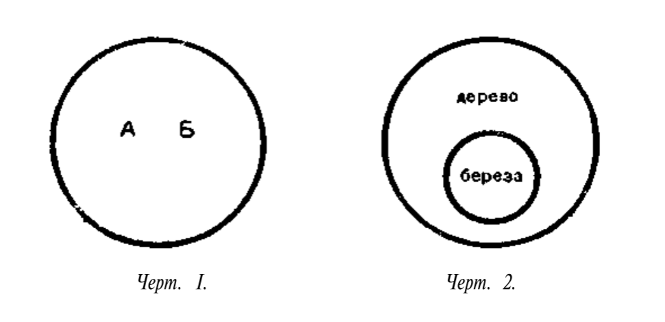
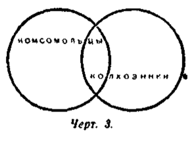
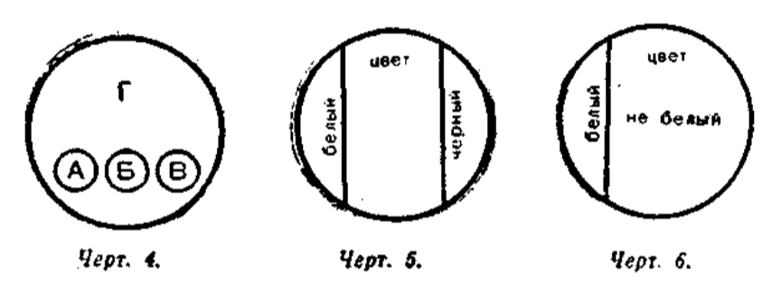
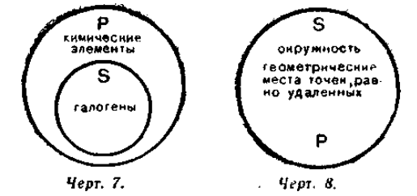
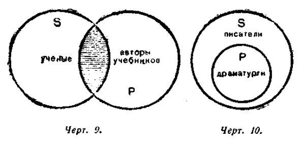
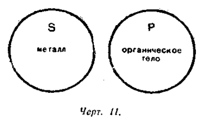
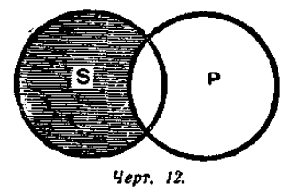
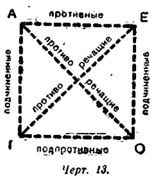

Логика
Учебник для средней школы
И. Н. Виноградов, А. П. Кузьмин, 1954
Учебник охватывает основные разделы традиционной логики аристотелевской школы: понятие, суждение, умозаключение и доказательство. В отличие от символической логики, которая работает с уже формализованными посылками, традиционная логика учит строить и проверять рассуждение на естественном языке — различать понятия, давать им определения, строить силлогизмы, выявлять и опровергать ошибки в аргументации.
Настоящее издание воспроизводит текст учебника И. Н. Виноградова и А. П. Кузьмина 1954 года, оцифрованного из оригинального PDF. Текст адаптирован для современного читателя: исправлены артефакты распознавания, обновлена орфография, идеологически нагруженные примеры и формулировки заменены нейтральными аналогами при полном сохранении логического содержания всех глав и упражнений.
Редакторы: В. Балин, Ю. Шеляг, 2026.
Оглавление
- Предисловие редактора
- Глава I.ПРЕДМЕТ И ЗАДАЧИ НАУКИ ЛОГИКИ
- Глава II.ЛОГИЧЕСКИЕ ПРИЁМЫ
- Глава III.ПОНЯТИЕ
- Глава IV.ОПРЕДЕЛЕНИЕ И ДЕЛЕНИЕ ПОНЯТИЯ
- Глава V.СУЖДЕНИЕ
- Глава VI.ПРЕОБРАЗОВАНИЕ СУЖДЕНИЙ
- Глава VII.ОСНОВНЫЕ ЗАКОНЫ ЛОГИЧЕСКОГО МЫШЛЕНИЯ
- Глава VIII.ДЕДУКТИВНЫЕ УМОЗАКЛЮЧЕНИЯ
- Глава IX.ИНДУКТИВНЫЕ УМОЗАКЛЮЧЕНИЯ
- Глава X.АНАЛОГИЯ
- Глава XI.ГИПОТЕЗА
- Глава XII.ДОКАЗАТЕЛЬСТВО
- Приложение.ЛОГИЧЕСКИЕ УПРАЖНЕНИЯ
Предисловие редактора
Традиция, которой принадлежит этот учебник, восходит к «Органону» Аристотеля (IV в. до н. э.) — корпусу трактатов о понятии, суждении, силлогизме и доказательстве. Через средневековую схоластику, где логика составляла основу университетского образования, эта традиция перешла в европейские учебники Нового времени и без принципиальных изменений дожила до середины XX века. Виноградов и Кузьмин работают именно в ней: те же правила определения и деления понятий, те же фигуры силлогизма, та же теория доказательства, что и у Аристотеля.
В XIX–XX веках Фреге, Рассел и Гильберт создали символическую логику — формальный язык для строгой проверки выводов. Это мощный инструмент, но решающий узкую задачу: он отвечает на вопрос «следует ли вывод из посылок?», предполагая, что посылки уже сформулированы точно. Именно это допущение оставляет за кадром самую трудную часть живого рассуждения.
Когда человек рассуждает на естественном языке, главные ошибки случаются раньше: понятия путаются, тезис подменяется, аргумент разваливается ещё до всякой формализации. Традиционная логика работает на этом уровне — учит различать смыслы, правильно определять и делить понятия, строить и проверять аргумент внутри языка. Поэтому для того, кто хочет лучше думать и говорить, а не верифицировать формулы, старый учебник оказывается ближе к задаче, чем новый.
Настоящее издание воспроизводит текст учебника логики И. Н. Виноградова и А. П. Кузьмина 1954 года, оцифрованного из оригинального PDF. Текст адаптирован для современного читателя: исправлены артефакты распознавания, унифицирована разметка, обновлены отдельные устаревшие обороты и орфография в соответствии с современными нормами русского языка.
Учебник создавался в конкретную историческую эпоху, и ряд примеров и формулировок несёт следы советской идеологии, не имеющей отношения к содержанию логики как науки. Такие фрагменты опираются на реальность, малопонятную современному читателю, и заменены нейтральными аналогами. В частности:
- советские термины в упражнениях («комсомольцы», «колхозники», «совхоз», «пролетариат», «Дворец Советов» и др.) заменены общеупотребительными понятиями;
- идеологически нагруженные цитаты (Энгельс о материализме, советские законодательные формулировки) заменены нейтральными суждениями с аналогичной логической структурой;
- примеры силлогизмов, в которых логическая форма использовалась для пропаганды, заменены примерами из естественных наук и повседневной жизни.
Логическое содержание всех глав и упражнений сохранено без изменений.
Редакторы: Влад Балин (@gaperton), Юрий Шеляг (@drcha0s)
Оригинальный текст учебника находится в общественном достоянии. Редакторские материалы настоящего издания — предисловие, адаптации и примечания — распространяются на условиях лицензии Creative Commons Attribution-ShareAlike 4.0 International (CC BY-SA 4.0).
Глава I. ПРЕДМЕТ И ЗАДАЧИ НАУКИ ЛОГИКИ
Редакционное примечание. Текст главы адаптирован для современного читателя: исправлены артефакты распознавания, унифицирована разметка, сокращены идеологически перегруженные фрагменты, не влияющие на понимание логического содержания.
§ 1. Логика мышления и наука логика
В труде и в быту, в учебной и общественной работе, в научном трактате и в школьном сочинении — везде и всегда необходимо правильное, т. е. определённое, непротиворечивое, последовательное и обоснованное мышление. Без правильного мышления, которое осуществляется с помощью языка, человек не мог бы ни трудиться, ни общаться с другими людьми.
Если кто-либо неясно, путано высказывает свои мысли, противоречит самому себе, о таком человеке говорят: «Его нельзя понять, в его рассуждениях нет логики».
Здесь словом «логика» называют правильность построения мыслей. Правильное построение мыслей изучается наукой логикой.
Таким образом, следует различать: 1) логику мышления, то есть правильность построения мыслей, и 2) науку логику.
Кратко науку логику можно определить так: логика есть наука о законах и формах правильного построения мыслей.
§ 2. Логические законы и формы
Логические законы. Определённость, непротиворечивость, последовательность и обоснованность являются обязательными качествами правильного мышления. Эти качества имеют значение законов правильного мышления.
Наименование «логика» происходит от древнегреческого слова «логос», что значит «мышление», «мысль», а также «слово, в котором выражена мысль».
Сознательное или несознательное нарушение логических законов ведёт к неправильному выводу. Человек, который нарушает логические законы, неизбежно оказывается побеждённым в споре или дискуссии.
Приведём пример.
Кто читал роман Тургенева «Рудин», тот помнит горячие споры между двумя героями этого известного произведения. Рассмотрим отрывок из беседы Рудина с Пигасовым:
— Прекрасно! — промолвил Рудин. — Стало быть, по-вашему, убеждений нет?
— Нет — и не существует.
— Это ваше убеждение?
— Да.
— Как же вы говорите, что их нет? Вот вам уже одно, на первый случай.
Все в комнате улыбнулись и переглянулись.
Легко понять, что Пигасов потерпел поражение. Зная логику, можно определить и характер его ошибки. Пигасов противоречит самому себе. Признав в начале беседы, что убеждений не существует, он тут же отказывается от своей первой мысли и утверждает совершенно противоположное.
Один из логических законов, который называется законом противоречия, указывает на недопустимость подобной ошибки в рассуждениях.
Логика имеет своей задачей изучение законов правильного построения мыслей и логических форм.
Логическая форма — это структура, строение наших мыслей.
Возьмём для примера две такие мысли:
Медь — проводник электричества.
Пшеница — растение семейства злаковых.
Каждая из этих мыслей представляет собой отражение в нашем мышлении определённых фактов действительности. Так как факты эти различны, то и содержание мыслей об этих фактах различно. Но, несмотря на это, в обоих случаях мы видим общее строение, единую структуру этих мыслей.
Наука логика, исследуя логические формы, отвлекается от конкретного содержания той или иной мысли.
Рассматривая приведённые примеры, логика интересуется не свойствами меди, которыми занимается физика, и не принадлежностью пшеницы к семейству злаковых, что относится к области ботаники. Логику интересует структура мысли.
Возьмём ещё для примера два таких рассуждения:
| Пример 1 |
Пример 2 |
| Все граждане государства имеют право на образование. |
Все звёзды являются раскалёнными газовыми шарами. |
| Мы — граждане этого государства. |
Сириус — звезда. |
| Следовательно, мы имеем право на образование. |
Следовательно, Сириус — раскалённый газовый шар. |
Содержание этих двух рассуждений различно, но ход мыслей в обоих примерах одинаков. В первом случае мы мыслим о праве на образование. Во втором случае мы мыслим о природе Сириуса, которую он имеет, как и всякая звезда.
Однако, являясь разными по содержанию, эти два рассуждения сходны между собой по своему строению. Логическая форма этих рассуждений одинакова: от общего положения мы идём к частному выводу.
Если в процессе рассуждения наши мысли облекаются в неправильные формы, то прийти к истинным выводам невозможно.
Сравним два следующих рассуждения:
| Пример 1 |
Пример 2 |
| Во всех городах за полярным кругом бывают белые ночи. |
Во всех городах за полярным кругом бывают белые ночи. |
| Город Игарка находится за полярным кругом. |
Ленинград не находится за полярным кругом. |
| Следовательно, в Игарке бывают белые ночи. |
Следовательно, в Ленинграде не бывает белых ночей. |
В первом случае вывод и ход рассуждений правильны. Во втором случае, несмотря на правильность исходных положений, заключение получилось ошибочным: известно, что в Ленинграде бывают белые ночи. Неверный вывод есть результат того, что рассуждение облечено в неправильную логическую форму.
Таким образом, логика изучает формы мышления. Но это не значит, что логика не интересуется содержанием мышления. Изучение формы мысли вне связи с содержанием не имело бы для нас никакого смысла. Однако изучение её в связи с содержанием не означает, что мы не можем в необходимых случаях, в целях исследования, мысленно отвлекать эту форму.
Логические законы и формы, т. е. законы и формы правильного построения мыслей, являются общечеловеческими. Это значит, что люди различных эпох и стран, независимо от своей социальной и национальной принадлежности, строили и строят свои рассуждения по одним и тем же логическим законам, мыслили и мыслят в одних и тех же логических формах. Если бы не было единых и обязательных для всех людей логических законов и форм, то люди не понимали бы друг друга.
Человеческое мышление развивается, изменяется, т. е. становится более совершенным. Но изменение форм мышления в течение длительного времени мало заметно. Логические формы и законы обладают устойчивостью и постоянством.
§ 3. О материалистическом понимании мышления
Начиная с древнейших времён люди интересовались вопросом об отношении мышления к бытию. В зависимости от решения этого вопроса различаются в философии два направления — материалистическое и идеалистическое.
Материализм исходит из того, что внешний, материальный мир существует независимо от нашего сознания и что источником ощущений, представлений, понятий и мышления является объективная действительность. Идеализм, напротив, в разных формах подчёркивает первичность сознания, духа или идеи.
С точки зрения материализма мышление — это свойство высокоорганизованной материи, а именно свойство мозга. Мышление не существует и не может существовать само по себе. Оно является отображением материального мира в человеческом сознании.
Мышление возникло и развивается в процессе общественно-трудовой деятельности людей. Психические процессы в определённой степени свойственны и животным, но мышление в собственном смысле слова присуще человеку. Объяснение этого связывают прежде всего с трудом, практикой, необходимостью ставить цели, обдумывать пути и способы их осуществления.
Деятельность человека требовала от него всё более глубокого осмысливания связей и отношений между предметами и явлениями внешнего мира.
Практика, трудовая деятельность, является важным мерилом истинности наших знаний о законах природы и общественной жизни.
§ 4. Мышление и язык
Мышление развивалось вместе с языком, с которым оно неразрывно связано. Только язык делает возможным обмен мыслями в человеческом обществе.
Язык служит средством общения людей, закрепления и передачи мысли. Будучи непосредственно связан с мышлением, язык позволяет выражать результаты познавательной работы человека и делает возможным взаимопонимание.
На всех этапах развития человеческого общества язык был важнейшим средством общения людей. Язык даёт людям возможность понять друг друга и организовать совместные действия, наладить производство материальных благ и общественную жизнь. Без языка, понятного членам общества, невозможно само существование общества.
Язык сыграл огромную роль в развитии мышления человека и явился одной из тех сил, которые помогли человеку выделиться из животного мира.
Без материальной языковой оболочки мысль не могла бы ни возникнуть, ни существовать. Какие бы мысли ни появлялись в голове человека, они всегда облечены в слова, языковые термины и фразы.
§ 5. Значение логики
Можно логично рассуждать и не зная науки логики, так же как можно практически владеть языком, не изучив грамматики. Но как изучение грамматики повышает культуру нашей устной и письменной речи, так и изучение науки логики повышает культуру нашего мышления.
Чтобы научиться стройно и последовательно излагать свои мысли, правильно пользоваться логическими формами, надо знать науку логику.
Многие выдающиеся мыслители, учёные и педагоги подчёркивали важность логического мышления. Способность ясно рассуждать, видеть основания вывода, замечать противоречия и отличать главное от второстепенного необходима в учёбе, научной работе, общественной дискуссии и повседневной жизни.
Содержание мыслей, конкретные знания всегда являются главным, основным в правильном мышлении. Поэтому не следует думать, что с помощью одной только логики можно научиться правильно мыслить. Логика не может заменить фактических знаний, которые приобретаются путём изучения других наук и активного участия в практической деятельности.
Изучение логики оказывает большую помощь в процессе овладения новыми знаниями. Логика помогает быстрее и глубже понять содержание учебного материала, подготовиться к занятиям, решить задачу, стройно и последовательно изложить свои мысли — в устной или письменной форме — и обосновать свои рассуждения. Логика помогает найти и выделить главное, основное в изучаемом материале и лучше усвоить его содержание.
ВОПРОСЫ ДЛЯ ПОВТОРЕНИЯ
- Что такое правильное мышление?
- Какие два значения имеет слово «логика»?
- Что является предметом логики?
- В чём различие между материалистическим и идеалистическим пониманием мышления?
- Почему мышление связывают с трудом и практикой?
- В чём выражается связь мышления с языком?
- Для чего необходимо изучать логику?
Глава II. ЛОГИЧЕСКИЕ ПРИЁМЫ
Редакционное примечание. Текст главы адаптирован для современного читателя: исправлены артефакты распознавания, унифицирована разметка, сокращены идеологически перегруженные фрагменты, не влияющие на понимание логического содержания.
§ 1. Мышление — опосредствованное и обобщённое познание действительности
Процесс познания начинается с ощущений, возникающих в результате непосредственного воздействия предметов и явлений материального мира на органы чувств.
Ощущение — это отображение нашим сознанием того или иного свойства материального предмета, например твёрдости, цвета и т. д.
Но человек отображает не только отдельные свойства предметов, но и целые предметы и явления: парту, доску, лампу и т. д. Так как свойства предметов, которые отражаются в нашем сознании, связаны в реальном предмете в единое целое, то и в нашем сознании ощущения этих отдельных свойств связываются в единый образ предмета.
Отображение в нашем сознании отдельных предметов и явлений как целого есть восприятие.
Ощущения и восприятия являются наглядными образами единичных предметов. Но чтобы познать законы, по которым совершается развитие и изменение вещей и явлений, человек сопоставляет, сравнивает, перерабатывает в своём мозгу ощущения и восприятия этих вещей и явлений: отвлекает, выделяет важное и существенное, отображает связи и отношения вещей и явлений.
Эта деятельность нашего мозга является новой ступенью в развитии познания и называется мышлением.
Познакомимся с теми отличительными признаками, которые характеризуют мышление.
Когда человек смотрит на поднимающийся из трубы дым, с помощью зрения он воспринимает многие черты этого явления: цвет и движение частиц дыма, направление и ширину дымовой струи, высоту, которой она достигает, и т. д.
Заметив дым, человек делает вывод: «значит, в печи разведён огонь».
Что же позволило человеку прийти к такому выводу? То, что он осознал причинную связь между дымом и огнём.
Знание об огне, разведённом в печи, человек получил косвенным путём, посредством других фактов, т. е. опосредствованно.
Но недостаточно установить один раз наличие причинной связи между двумя или несколькими предметами, чтобы вскрыть то общее, что характерно для всех данных предметов. Для этого надо осознать, что данная связь имеет общий характер, что в основе её лежат общие свойства и закономерности самих предметов материального мира.
Мысль отображает общие свойства предметов, присущие не только одному предмету, но и группе сходных предметов.
Так, например, такое общее свойство всех листьев, как зелёный цвет, мы можем выразить в мысли: «все листья зелены». В ощущении же отображается цвет только тех листьев, которые непосредственно воздействуют на наш орган зрения.
Итак, мышление есть опосредствованное и обобщённое познание действительности. Мысль отображает общие свойства вещей, закономерные связи и отношения между вещами.
Мышление не представляет собой простой суммы ощущений и восприятий. Мышление есть качественно новая форма познания, более совершенная по сравнению с чувственным познанием. Она более совершенна не только потому, что объектом мышления могут быть отдалённые предметы, недоступные в данный момент для чувственного познания, но главным образом потому, что мышление даёт возможность проникнуть в сущность вещей, познавать закономерность явлений, а значит, глубже и полнее отражать действительность.
Для того чтобы познать общие свойства, отношения и закономерности предметов и явлений объективной действительности, человек применяет различные логические приёмы. Такими основными приёмами мышления являются сравнение, анализ и синтез, абстрагирование и обобщение.
§ 2. Сравнение
Познание вещей начинается с того, что мы их чувственно воспринимаем и сравниваем друг с другом. В процессе сравнения устанавливается отличие данной вещи от других и сходство с подобными ей вещами.
Сравнением мы пользуемся не только в тех случаях, когда непосредственно воспринимаем какие-либо предметы. Нередко мы сравниваем предметы и явления через посредство других предметов и явлений. Так, например, сравнение состава Земли и Солнца мы производим посредством линий спектра солнечного луча; температуры воздуха вчерашнего и сегодняшнего дня мы сравниваем посредством показаний термометра.
Сравнение — это такой логический приём, с помощью которого устанавливается сходство и различие предметов и явлений объективного мира.
Но для того чтобы в результате сравнения получить верные выводы, надо знать правила всякого сравнения.
Во-первых, нужно сравнивать такие предметы, которые в действительности имеют какие-то связи друг с другом. Бесполезной тратой времени будет, например, сравнение «лошади» и «поэзии», «ума» и «яблока».
Во-вторых, правильность любого сравнения определяется тем, что мы берём за основу сравнения. Так, сравнение работы двух бригад можно провести по количественному показателю: какая бригада, например, больше выполнила работы. Но этого недостаточно. Может получиться так, что первая бригада выполнила больший объём, чем вторая, но качество работы у неё ниже.
Значит, для того чтобы сравнение действительно выявило лучший результат, количественный показатель надо дополнить качественным.
Выбор показателя сравнения имеет очень важное значение в любом сравнении.
В-третьих, сравнение двух или нескольких предметов надо производить по одному и тому же признаку, взятому в одном и том же отношении. Например, причину образования пара люди узнали в результате сравнения нескольких явлений в одном и том же отношении. Человек много раз наблюдал, что вода в сосуде, под которым разведён огонь, начинает кипеть и образуется пар. Сравнивая в одном отношении разные случаи образования пара, человек пришёл к практически важному правильному выводу: причина образования пара — нагревание воды.
В-четвёртых, всякое сравнение должно проводиться не по первым попавшимся признакам, а по таким признакам, которые имеют важное, существенное значение для сравниваемых предметов.
Если сравнивать общественный строй, устройство государства, научные теории или любые сложные системы по случайным признакам, это неизбежно приведёт к ошибкам. Существенными являются не внешние и случайные признаки, а те, которые действительно определяют характер сравниваемого предмета.
Таков первый логический приём — сравнение. Другими логическими приёмами, с помощью которых раскрываются связи и закономерности предметов и явлений, являются анализ и синтез.
§ 3. Анализ и синтез
Уже много тысячелетий тому назад человек заметил, что любой предмет состоит из отдельных частей, каждая из которых отличается своими особенностями.
Так, дерево состоит из ствола, который можно употребить на постройку стен дома, из веток, которые можно использовать для устройства шалаша, для плетения корзин и т. д. Орех состоит из несъедобной скорлупы и вкусного ядра. Для того чтобы достать из ореха съедобную часть, его надо разбить. Из ствола дерева можно выдолбить или выжечь крепкую лодку, но для этого надо прежде всего отделить ствол от веток и корня.
Эти простые свойства вещей, которые люди наблюдали много раз, прочно запечатлелись в их сознании. Встретив в процессе трудовой деятельности знакомый уже предмет, который когда-то раньше практически расчленялся на части, человек на основе обобщённого в мысли опыта может уже мысленно расчленять его на части.
С течением времени в процессе трудовой деятельности эта способность человеческого мозга — мысленно расчленять предмет на составные части — всё более совершенствовалась.
Так выработался логический приём, который называется анализом.
Анализ — это такой логический приём, с помощью которого мы мысленно расчленяем предметы и явления, выделяя отдельные их части и свойства.
Никакой более или менее сложный предмет невозможно изучить, не подвергнув его анализу.
Если перед классом поставлена задача узнать устройство электромотора, то для того, чтобы решить эту задачу, надо разложить мотор на отдельные части и рассмотреть каждую из них в отдельности. Ознакомление с устройством любой машины начинается с подробного изучения каждой отдельной её части.
Но для полного и глубокого понимания значения и роли каждой части мотора одного анализа мало. В итоге анализа мы получаем знание только об отдельных частях предмета, но ещё не получаем целостного знания об изучаемом предмете. Электромотор — это механизм, в котором части действуют как одно целое. Понять мотор можно лишь как единое целое, в котором все составные части находятся во взаимодействии.
Рассмотрение предмета или явления в единстве достигается нами с помощью другого логического приёма, который называется синтезом.
Синтез — это такой логический приём, с помощью которого мы мысленно соединяем в одно целое расчленённые в анализе отдельные части предмета или явления.
Анализ и синтез — это два неразрывно связанных друг с другом логических приёма. Синтез невозможен, если предмет не был проанализирован, а всякий анализ должен производиться на основе знания предмета как целого. Мышление состоит не только в разложении предметов сознания на их элементы, но и в объединении этих элементов в единство.
Но мало мысленно расчленить предмет на составные части, а затем соединить расчленённое в единое целое. Познание вещи более сложно. В каждом предмете и явлении очень много частей, сторон и свойств. Причём одни части, стороны и свойства более важны и существенны, а другие — менее важны и существенны. Поэтому надо различать то, что существенно и важно для данного предмета, и то, что для него несущественно. А этого человек достигает с помощью абстрагирования и обобщения.
§ 4. Абстрагирование и обобщение
Много тысячелетий тому назад человек в процессе трудовой деятельности заметил, что из камня можно сделать прочное орудие, что шкуры животных хорошо защищают от холода, что дерево не тонет в воде и поэтому из него можно делать плоты и т. д.
С течением времени способность выделять отдельные свойства вещей, возникшая в процессе производственной деятельности, всё более совершенствовалась.
Мысленно отвлекать существенное от случайного нам приходится и теперь буквально на каждом шагу. Опыт показывает, что для подлинного познания вещи или явления надо выявить существенные свойства и отделить их от случайных.
Так, например, если мы ставим перед собой задачу отобрать из ряда предметов такой, которым можно разрезать стекло, то мы обращаем внимание на одно качество нужного предмета — твёрдость, отвлекаясь от всех остальных свойств.
Абстрагирование — это такой логический приём, с помощью которого мы мысленно выделяем существенные свойства предметов и явлений и отвлекаемся от несущественных, второстепенных свойств.
Результат абстрагирования называется абстракцией. Абстракция может быть правильной, а может быть и неправильной.
Правильная абстракция отображает содержание, заключённое в вещах. Так, абстрактное понятие «геометрическая фигура» отображает конкретное свойство предметов материального мира — их форму.
Неправильной абстракция бывает в тех случаях, когда мыслятся свойства, которые к изучаемому предмету никакого отношения не имеют. Грубая ошибка совершается и тогда, когда отвлечённый от предмета признак начинают рассматривать как что-то существующее самостоятельно, забывая о связи абстрактного понятия с предметом.
В процессе абстракции мы выделяем свойства предметов и явлений. Но познать предмет вне связи с окружающей средой нельзя. Каждый единичный предмет входит в состав какого-то класса предметов, органически связан с чем-то более общим. Наша мысль отображает связи изучаемого предмета с тем общим, к которому принадлежит данный предмет.
В течение многих столетий человек наблюдал отдельных животных: лошадей, собак, волков, лисиц, медведей и др., и постепенно выделил те признаки, которые присущи всем животным и отличают живые организмы от окружающей среды, а именно: необходимость потреблять пищу, продолжать потомство и т. п. При этом были отброшены второстепенные признаки, которые встречались лишь у отдельных видов животных, как, например, однокопытность лошади, наличие рогов у коровы или жизнь крота под землёй.
Так составился в конце концов мысленный образ «животное».
Обобщение — это мысленное объединение общих свойств однородных предметов.
В процессе обобщения человек как бы отходит от конкретных предметов, отвлекается от массы деталей, присущих единичным вещам. Но это необходимо для того, чтобы, познав общее, глубже проникнуть в сущность единичных предметов.
Абстрагируя свойства предметов, мы тем самым уже отображаем общие свойства предметов. Абстрагирование и обобщение представляют собой единый, неразрывный процесс.
Логический приём обобщения, так же как и приём абстрагирования, возник в процессе общественной производственной деятельности из практической потребности людей.
Употребление орудий связано с осознанием некоторых устойчивых, постоянных свойств предметов и столь же устойчивых отношений данных предметов к другим, например отношения орудия к тому, что этим орудием добывается. Выделив при помощи абстрагирования однородные полезные свойства предметов, человек мысленно объединял в сознании это общее для данной группы предметов.
Но обобщения могут быть как правильными, так и неправильными. Обобщение правильно только в том случае, если основано на познании общего, находящегося в самих вещах. Отступление от этого условия ведёт к логическим ошибкам.
Так, если глубокое изучение свойств предмета или явления подменяется поверхностным ознакомлением с ним, это может привести к неправильному, поспешному обобщению.
ВОПРОСЫ ДЛЯ ПОВТОРЕНИЯ
- Чем отличается мышление от ощущений и восприятий?
- Что такое сравнение?
- Что такое анализ и синтез?
- Что такое абстрагирование и обобщение?
Глава III. ПОНЯТИЕ
Редакционное примечание. Текст главы адаптирован для современного читателя: исправлены артефакты распознавания, унифицирована разметка, сокращены идеологически перегруженные фрагменты, не влияющие на понимание логического содержания.
§ 1. Сущность понятия
Из предыдущей главы мы знаем, что мышление есть отображение в сознании человека общих существенных свойств вещей и явлений внешнего мира.
Те вещи и явления окружающей нас действительности, о которых мы мыслим, принято в логике называть предметами мысли. Так, например, предметами нашей мысли могут быть карандаш, урожай, революция, ученик, высота, движение и т. п.
Вещи и явления обладают различными свойствами. Свойства вещей и явлений называются в логике признаками. Например, длина карандаша, его цвет, свойство быть орудием письма — всё это его признаки. Своими признаками вещи и явления либо отличаются друг от друга, либо сходны друг с другом.
Познавая окружающую действительность, человек сравнивает предметы друг с другом, выявляет их сходство и различие; путём анализа и синтеза вскрывает сущность предметов, мысленно выделяет их признаки, абстрагирует и обобщает эти признаки.
В результате человек образует понятие о предметах и явлениях действительности.
Понятие — это мысль, которая отображает общие и существенные признаки предметов.
Например, в понятии «комета» отображены следующие признаки комет: 1) светило; 2) состоит из крайне разреженных газов; 3) при приближении к Солнцу постепенно выбрасывает светящийся хвост.
Все три перечисленных признака являются общими и существенными для комет.
Другой пример. В понятии «белки» отображены такие общие и существенные признаки белков: 1) это органические вещества; 2) их молекулы состоят из соединённых в большом количестве остатков различных аминокислот.
Существенным признаком предмета называется тот признак, который выражает коренное, наиболее важное свойство предмета; если существенный признак отсутствует, то предмет перестаёт быть данным предметом.
Например, существенным признаком химического элемента является строение атома, а несущественными — то или иное физическое состояние, внешняя форма и др.
Понятия являются правильными только в том случае, если они верно отражают действительность. Если же какое-либо понятие представляет собой неверное, искажённое отображение действительности, то такое понятие является ложным. Ложные понятия возникают, например, при отрыве теории от практики.
Правильные понятия вырабатываются в процессе деятельности многих людей; соответствие таких понятий предметам и явлениям действительности проверяется практикой.
§ 2. Понятие и представление
Понятия существенно отличаются от представлений.
Представления — это наглядные образы предметов и явлений. Поэтому нельзя, например, иметь представление о скорости движения света, так как нельзя получить наглядный образ такого движения. Но мыслить скорость движения света мы можем. Мы имеем понятие о движении света со скоростью 300 000 километров в секунду.
Представления всегда имеют индивидуальный характер. В них главное не отделяется от второстепенного, и они могут складываться из несущественных признаков.
Понятия, в отличие от представлений, отражают сущность вещей. Они имеют характер всеобщности: одними и теми же понятиями пользуется множество разных людей.
Понятия, являясь отражением объективного мира, возникают в результате мыслительной деятельности многих людей. Они отличаются устойчивостью и, как всякий накопленный людьми опыт, передаются с помощью языка от человека к человеку.
Мы постоянно пользуемся понятиями как основным фондом наших знаний, в котором запечатлена многовековая практика человека.
§ 3. Понятие и слово
Понятие, как и всякая мысль, возникает и существует на базе языкового материала, на базе языковых терминов и фраз.
Языковой оболочкой понятия является слово. Так, например, понятие о школе вообще выражается словом «школа». Когда мы мыслим не о школе вообще, а о той школе, в которой учимся, то такая мысль выражается группой слов: «наша школа» или «средняя школа, в которой мы учимся».
В этом примере предметом мысли является школа. Кроме слова «школа», обозначающего предмет мысли, имеются и другие слова: «средняя», «в которой мы учимся». Эти слова обозначают признаки предмета. Но в нашем примере нет такого слова, которое являлось бы сказуемым к слову «школа». Следовательно, данная группа слов не является предложением, она лишь служит для выражения понятия.
Другие примеры: «быстро плывущая лодка», «дом, который строится», «блестящая победа».
Часто одно и то же понятие можно выразить разными словами. Например: «тот, кто победил» и «победивший». Группа из трёх слов «тот, кто победил» выражает то же понятие, которое обозначено словом «победивший».
Другой пример: «ученик, который читает книгу» и «ученик, читающий книгу».
Нередки случаи, когда слова, сходные по звучанию, употребляются для выражения разных понятий. Например: коса — сельскохозяйственное орудие для косьбы травы; коса — пряди волос, сплетённые вместе; коса — длинная узкая отмель, идущая от берега; коса — узкая полоса леса.
Другие примеры таких слов, то есть омонимов: мир, ключ и др.
Неправильное употребление омонимов неизбежно приводит к смешению понятий, то есть к ошибкам в рассуждении.
§ 4. Содержание и объём понятий
Каждое понятие имеет содержание и объём.
Содержание понятия — это знание о совокупности существенных признаков класса предметов.
Например, в содержание понятия «стратостат» входят следующие существенные признаки: воздушный шар с гондолой, оборудованный для полётов в стратосферу.
Таким образом, содержание понятия — это знание о предметах, к которым относится данное понятие, знание об их сущности и свойствах.
Если содержание понятия верно отражает действительность, то такое понятие будет правильным; в противном случае оно будет неправильным, ложным.
В ходе человеческой практики, по мере того как люди глубже познают материальный мир, содержание понятий обогащается новыми признаками, а устаревшие признаки отбрасываются. Например, содержание понятия об электричестве менялось и обогащалось новыми признаками по мере того, как познавались новые, ранее неизвестные свойства электричества. Современное научное понятие об электричестве глубже и вернее отражает сущность этих явлений, чем понятие, существовавшее, скажем, в конце XIX века.
Но понятия изменяются не только потому, что люди глубже проникают в сущность явлений, но также и потому, что сами явления со временем меняются. Однако в течение какого-то периода содержание наших понятий бывает устойчивым и сохраняет свою определённость.
В понятиях содержится знание не только о признаках предметов, но и о том, на какие предметы данное понятие распространяется. Иначе говоря, каждое понятие имеет не только содержание, но и свой объём.
Объём понятия — это знание о круге предметов, существенные признаки которых отображены в понятии.
Например, объём понятия «страны света» составляют все мыслимые в этом понятии части горизонта: север, юг, восток, запад. Объём понятия «стратостат» составляют все мыслимые виды стратостатов.
Такой круг предметов может быть различным. Например, понятие «растение» распространяется на неограниченный круг растений: на все те растения, которые когда-либо были, есть и будут.
Понятие «полюс Земли» распространяется только на две точки земного шара. Могут быть и понятия, которые относятся только к одному предмету, например понятие о современной Франции, о реке Енисей или о центре Земли.
§ 5. Соотношение между содержанием и объёмом понятия
Между содержанием и объёмом понятия существует определённое соотношение. Рассмотрим это на примере.
В объём понятия «позвоночные» входят все виды позвоночных животных, а его содержанием являются существенные признаки, общие для всех позвоночных. Возьмём понятие, меньшее по объёму: «млекопитающие». В объём этого понятия входят не все виды позвоночных, а только часть их; следовательно, объём понятия будет меньше.
Однако содержание понятия расширяется за счёт новых признаков. Понятие «млекопитающие» содержит в себе признаки позвоночных, поскольку всякое млекопитающее есть позвоночное, а кроме того, оно содержит ещё свои особые признаки, например кормление детёнышей молоком, которых не было в содержании понятия «позвоночные».
Другой пример: всякая берёза есть дерево, следовательно, понятие «берёза» содержит в себе все признаки понятия «дерево». Но берёза имеет ещё и свои особые признаки, следовательно, в содержании понятия «берёза» признаков больше, чем в содержании понятия «дерево». Однако по объёму понятие «берёза» уже, чем понятие «дерево».
Итак, понятия, более широкие по объёму, являются более узкими по содержанию. Такова зависимость между содержанием и объёмом понятий. Эта зависимость имеет значение закона, который называется законом обратного отношения содержания и объёма понятий.
Формулировка закона следующая:
чем шире содержание понятия, тем уже его объём.
И соответственно наоборот:
чем уже содержание понятия, тем шире его объём.
Закон обратного отношения распространяется только на такие понятия, из которых одно входит в объём другого.
Однако из данного закона не следует, что более широкие по объёму, то есть более общие, понятия имеют для нас меньшую ценность. Общие понятия отображают общие свойства, связи и закономерности предметов и явлений объективного мира.
§ 6. Ограничение и обобщение понятия
В практике мышления мы нередко пользуемся логическими приёмами, которые называются обобщением понятия и ограничением понятия.
Обобщить понятие — это значит перейти от менее общего к более общему понятию.
Ограничить понятие — это значит перейти от более общего понятия к менее общему понятию.
В соответствии с этим, согласно закону обратного отношения, изменяется содержание понятия.
Рассмотрим процесс ограничения понятия на следующем примере. Объяснение того, что такое натрий, можно начать с напоминания о том, что представляет собой вообще элемент, а затем в понятие «элемент» ввести некоторые признаки, свойственные металлу. Введение этих признаков сузит объём понятия «элемент» и тем самым даст другое понятие с меньшим объёмом — понятие «металл».
Далее, вводя в понятие «металл» признаки, свойственные натрию, мы тем самым ещё больше ограничиваем это понятие, то есть даём вместо него ещё менее общее понятие — «натрий».
Таким образом, процесс ограничения понятия представляет собой постепенный переход от более общих понятий к менее общим.
Ограничением понятий мы пользуемся в тех случаях, когда разъясняем содержание какого-либо понятия, причём строим своё разъяснение на основе уже известных, более общих понятий.
Ограничение понятия применяется и тогда, когда необходимо уточнить содержание понятия, указать, к какому именно кругу явлений оно относится, следовательно, отграничить его от других понятий, в том числе и от более общих.
В процессе ограничения понятий, переходя от более общих понятий к менее общим, мы приходим наконец к таким понятиям, объём которых равен единице и которые, следовательно, не могут подлежать дальнейшему ограничению. Такие понятия отражают единичные, индивидуальные предметы и являются предельно узкими по объёму.
Примеры таких понятий: «Каспийское море», «Первая мировая война», «улица Горького в Москве».
Обобщение понятия представляет собой процесс, обратный ограничению. При обобщении понятия путём исключения некоторых его признаков мы переходим от менее общих ко всё более и более общим понятиям. Например, от понятия «чех» — к понятию «славянин», от понятия «славянин» — к понятию «человек».
Процесс обобщения понятия протекает на основе того, что круг рассматриваемых нами предметов всё более расширяется за счёт новых, отличных по своим свойствам предметов.
Обобщением понятий широко пользуется наука, которая всегда стремится вскрыть в предметах наиболее общие их свойства.
Обобщая понятия, переходя от менее общих к более общим, мы приходим наконец к предельно широким по объёму понятиям, которые не подлежат дальнейшему обобщению.
Такие понятия называются категориями.
Примеры категорий: «материя», «время», «движение», «пространство», «количество», «форма» и др.
§ 7. Родовые и видовые понятия
Мы уже знаем, что как в процессе ограничения, так и в процессе обобщения получается ряд понятий, из которых одни являются менее общими, а другие — более общими.
Более общие понятия называются родовыми понятиями, менее общие — видовыми понятиями.
Возьмём ряд понятий: «город» — «столица» — «Москва». Понятие «город» будет родовым по отношению к понятию «столица», а понятие «столица» будет родовым по отношению к понятию «Москва». Но те же самые понятия находятся и в другом отношении: понятие «Москва» является видовым по отношению к понятию «столица», а понятие «столица» является видовым по отношению к понятию «город».
Таким образом, одно и то же понятие может быть и видовым, и родовым, но только в разных отношениях: по отношению к менее общему оно родовое, а по отношению к более общему — видовое. В приведённом выше примере понятие «столица» является видовым по отношению к понятию «город» и родовым по отношению к понятию «Москва».
Родовое понятие, или род, не может существовать отдельно от видовых понятий, а видовые понятия, или виды, не могут существовать отдельно от рода. Род и вид всегда взаимно связаны.
Эта взаимная связь рода и вида отражает существующую в предметах связь общего и отдельного. Каждый предмет объективного мира содержит в себе и общие свойства, которые объединяют его с однородными предметами, и свои особые свойства.
Например, яблоко есть плод, то есть обладает общим свойством, присущим яблокам и другим плодам; но яблоко имеет также свои особые свойства, которых нет у других плодов. Сосна есть дерево, то есть обладает общим свойством, но при этом имеет и свои особые свойства, отличающие её от других деревьев.
Общие свойства существуют только в отдельных предметах. Тем самым общие свойства являются признаками отдельных предметов.
Так как всякое яблоко есть плод, то «плод» есть признак яблока; «дерево» есть признак сосны и т. д. Причём эти общие свойства являются существенными признаками, так как выражают коренные свойства предметов.
Точно так же родовые понятия, отражая объективную связь предметов и явлений действительности, являются признаками своих видов.
Когда мы говорим «химия есть наука», то указываем, к какому роду относится химия, и в то же время указываем её существенный, родовой признак.
§ 8. Основные классы понятий
По своему объёму понятия делятся на единичные и общие.
Единичные понятия являются понятиями об отдельных, единичных предметах.
Примерами таких понятий могут быть следующие: «полководец М. И. Кутузов», «город Санкт-Петербург», «самое глубокое озеро в мире».
В общих понятиях отображается множество однородных предметов.
Например: «звезда», «книга», «школа», «песня», «урожай» и др.
Каждое из этих понятий относится к большой группе однородных предметов.
Общие понятия могут быть более общими и менее общими. Так, понятие «трактор» является менее общим по отношению к понятию «сельскохозяйственная машина», но более общим по отношению к понятию «гусеничный трактор».
Число предметов, которые охватываются общим понятием, может быть ограниченным или неограниченным. Например, общее понятие «корабль» относится ко всем кораблям, которые были, есть и будут.
К общим понятиям с ограниченным объёмом относятся такие понятия, как «станции Московского метро первой очереди», «произведения Лермонтова», «учёные XIX века».
Общие и единичные понятия могут быть также собирательными.
Собирательные понятия — это такие понятия, в которых мыслится совокупность однородных предметов как единое целое.
Например: «лес», «библиотека», «собрание».
Особенность собирательных понятий заключается в том, что их нельзя приложить к отдельным предметам, совокупность которых мыслится в данном собирательном понятии. Нельзя, например, отнести понятие «лес» к отдельному дереву, а понятие «собрание» — к отдельному участнику собрания.
Собирательные понятия можно приложить или к совокупности предметов как единому целому, или к ряду таких совокупностей. В первом случае будет единичное собирательное понятие, во втором — общее собирательное понятие.
Например, понятие о конкретной библиотеке будет единичным собирательным понятием, а понятие о библиотеке вообще — общим собирательным понятием, так как оно относится ко многим библиотекам.
Примеры общих собирательных понятий: «группа», «созвездие», «коллектив», «полк», «народ», «толпа», «класс» и др. Примеры единичных собирательных понятий: «созвездие Большая Медведица», «коллектив служащих данного учреждения».
Каждое понятие находится в различных отношениях с другими понятиями и поэтому одновременно может входить в разные классы.
Например, понятие «высота» — общее, несобирательное; понятие «собрание» — общее, собирательное; понятие «единство стиля и содержания в рассказах А. П. Чехова» — единичное, собирательное.
§ 9. Отношения между понятиями
Все вещи и явления объективного мира находятся во всеобщей связи и взаимозависимости. И наши понятия, являясь отражением объективного мира, также находятся во взаимной связи друг с другом, в том или ином отношении друг к другу.
Между некоторыми понятиями связь является очень слабой, мало заметной. Какая, например, имеется связь между понятиями «медведь» и «классная доска»? Только та, что оба они представляют собой отражение определённых явлений действительности, а с точки зрения логики оба являются общими, несобирательными понятиями.
Такие понятия, которые по своему содержанию находятся в далёком отношении друг к другу, называются несравнимыми понятиями.
Все остальные понятия являются сравнимыми. Они делятся на две группы: 1) совместимые понятия и 2) несовместимые понятия.
Если объёмы двух или более понятий совпадают полностью или частично, то это будут совместимые понятия; если же не совпадают, то это будут несовместимые понятия.
Заметим, что в том и другом случае имеются в виду именно объёмы понятий. Следовательно, отношения между понятиями, которые рассматриваются далее, — это отношения по объёму.
В целях наглядности эти отношения изображаются графически в виде кругов: каждый круг обозначает объём понятия.
Рассмотрим группу совместимых понятий.
Отношение тождества. Есть понятия, которые могут различаться по своему содержанию, но в которых мыслится один и тот же предмет. Такие понятия находятся в отношении тождества.
Например: «Первая мировая война» и «мировая война 1914 года». В этих двух понятиях мыслится одна и та же война, но при этом выделяются в качестве признаков разные её стороны.
Отношение тождества изображено в виде двух кругов, совпадающих при наложении: объём одного понятия полностью совпадает с объёмом другого.
Другой пример: «Москва» и «столица России».
Отношение подчинения. При отношении подчинения одно понятие, менее общее, входит в объём другого, более общего. Отношение подчинения есть отношение вида и рода.
Объём видового понятия совпадает с частью объёма родового понятия. Например: «берёза» и «дерево». Понятие, большее по объёму, — «дерево» — полностью включает в себя понятие, меньшее по объёму, — «берёза».
Более общее, родовое понятие называется подчиняющим, а менее общее, видовое, — подчинённым понятием.

Отношение подчинения понятий не следует смешивать с отношением части и целого.
Такие, например, понятия, как «месяц» и «год», «ветви» и «дерево», «цех» и «завод», относятся как часть к целому, но не как вид к роду. Нельзя, например, сказать, что «каждый месяц есть год», но можно сказать, что «каждый куст есть растение».
Конечно, кусты тоже являются частью всех растений, но они не только часть растений, но и вид растений, в то время как месяц — только часть, но не вид года, а цех — только часть, но не вид завода.
Отношение частичного совпадения объёмов. В таком отношении находятся, например, понятия «студенты» и «спортсмены». Часть студентов — спортсмены, а часть спортсменов — студенты.
На чертеже 3 показано, как часть объёма одного понятия совпадает с частью объёма другого понятия.

Такие понятия, объёмы которых частично совпадают, называются перекрещивающимися понятиями.
Другие примеры перекрещивающихся понятий: «москвичи» и «художники»; «поэты» и «учителя».
Отношения тождества, подчинения и частичного совпадения объёмов являются отношениями совместимых понятий, то есть таких понятий, объёмы которых в той или иной мере совпадают.
Между несовместимыми понятиями также существуют три вида отношений: отношение соподчинения, отношение противоположности и отношение противоречия.
Отношение соподчинения. Когда одному и тому же родовому понятию подчинены несколько видовых понятий, то эти видовые понятия находятся между собой в отношении соподчинения.
Например: понятия «Европа», «Азия», «Африка» находятся в отношении соподчинения, так как каждое из них является видом по отношению к понятию «части света».
Отношение соподчинения есть отношение между видами, объединёнными общим родом.
На чертеже 4 показано отношение соподчинения, в котором находятся понятия А, Б и В, общим родом для которых является понятие Г. Объёмы соподчинённых понятий не совпадают друг с другом, но все они входят в объём одного и того же родового понятия.
В качестве другого примера соподчинённых понятий можно привести разные виды общественного строя, объединённые общим родовым понятием «общественный строй».
Отношение противоположности. В отношении противоположности находятся такие два понятия, которые по своему содержанию противоположны друг другу, но оба входят в объём одного и того же родового понятия.
Например: «чёрный цвет» и «белый цвет», общий род для них — «цвет». Другие примеры: «храбрость» и «трусость», «подъём» и «спуск».
Каждое из противоположных понятий не только отрицает своим содержанием другое, противоположное понятие, но и утверждает взамен него нечто новое, несовместимое с ним.
Отношение противоречия. В отношении противоречия находятся такие два понятия, из которых одно полностью отрицает другое, но содержание отрицающего понятия остаётся неопределённым.
Например: «чёрный» и «не чёрный»; «высокий» и «не высокий».

На чертеже 6 показано отношение противоречия. Объём понятия разделён на две части, из которых одна совершенно несовместима по своему содержанию с другой. Однако содержание отрицающей части остаётся нераскрытым.
Отношения между понятиями:

ВОПРОСЫ ДЛЯ ПОВТОРЕНИЯ
- Что называется понятием?
- Что такое существенные признаки? Приведите примеры.
- Чем отличается понятие от представления?
- Что такое содержание понятия?
- Что такое объём понятия?
- Что такое ограничение понятия?
- Что такое обобщение понятия?
- Какое существует отношение между объёмом и содержанием понятия?
- Укажите основные классы понятий. Приведите примеры.
- Какие могут быть отношения между понятиями?
- Чем отличаются противоположные понятия от противоречащих понятий?
Глава IV. ОПРЕДЕЛЕНИЕ И ДЕЛЕНИЕ ПОНЯТИЯ
Редакционное примечание. Текст главы адаптирован для современного читателя: исправлены артефакты распознавания, унифицирована разметка, сокращены идеологически перегруженные фрагменты, не влияющие на понимание логического содержания.
§ 1. Сущность определения понятия
Определение понятия есть такое логическое действие, в процессе которого раскрывается содержание понятия.
Раскрыть содержание понятия — это значит указать его существенные признаки.
Определением понятия называется также результат указанного действия.
Каждый предмет имеет бесконечное число признаков, и пытаться указать все признаки предмета невозможно. Определение содержит в себе лишь такие признаки, которые, являясь существенными, отграничивают понятие от других понятий.
В определении выражается в сжатой форме основное знание о предметах. Следовательно, определение понятия есть определение тех предметов, на которые распространяется данное понятие. Определяя, например, понятие «трактор», мы определяем те тракторы, которые имеются в действительности.
Определим, например, понятие «ромб».
Для этого прежде всего укажем ближайший род: ромб — это параллелограмм. Но, кроме ромба, есть и другие виды параллелограммов. Поэтому необходимо ещё указать в определении такой признак ромба, который отличает его от других видов параллелограммов, то есть указать видовое отличие: равенство сторон. В результате получается: ромб — это параллелограмм, все стороны которого равны друг другу.
Это и будет определение понятия «ромб».
По своему строению определение состоит из двух основных частей: определяемого понятия и определяющего понятия.
Так, в нашем примере понятие «ромб» было определяемым, а понятие «параллелограмм, все стороны которого равны друг другу» было определяющим. Определяющее понятие указывает на ближайший род определяемого и на его видовое отличие.
Состав определения схематически можно изобразить так:
«вид» есть «род и видовое отличие».
Например: «газогенератор есть аппарат, превращающий твёрдое топливо в газообразное».
Видовое отличие не всегда выражается одним признаком. Таких признаков может быть несколько. Их совокупность и представляет собой видовое отличие.
Например: «Антарктика — это часть света, включающая материк Антарктиду и окружающие моря и острова». В этом определении родовым понятием будет «часть света», а видовое отличие выражено несколькими признаками.
Иногда для точного определения требуется не один, а несколько существенных признаков. Если взять только один из них, определение может оказаться недостаточным.
§ 2. Правила определения
Чтобы определить понятие, необходимо прежде всего иметь знание о существенных признаках тех предметов, на которые это понятие распространяется. Человек, который не знает, например, что такое материализм, не сможет определить понятие «материализм», даже если он хорошо усвоил все правила определения. Однако, зная предмет, но не зная способов определения, легко допустить ошибку.
Существует четыре правила определения.
- Определение должно быть соразмерным.
Это значит, что определяемое и определяющее понятия должны быть равны по объёму.
Возьмём для примера определение понятия «квадрат»: «квадрат есть равносторонний прямоугольник».
Это определение соразмерно, так как определяемое понятие «квадрат» и определяющее понятие «равносторонний прямоугольник» являются тождественными по объёму.
Но если бы мы, определяя понятие «квадрат», ограничились указанием одного родового признака — «квадрат есть прямоугольник», — то такое определение было бы слишком широким по объёму: кроме квадратов, есть и другие прямоугольники.
Слишком широкое определение получится и в том случае, если в качестве видового отличия приведено недостаточное количество признаков. Возьмём следующее определение: «Конденсатор есть прибор, служащий для накопления электрической энергии».
Хотя в этом определении указаны и род, и видовое отличие, с его помощью мы не отличим конденсатор от аккумулятора. Следовательно, нужно добавить ещё признаки, характерные именно для конденсатора.
Итак, слишком широкое определение есть неточное, неправильное определение.
Неточным, неправильным является и слишком узкое определение.
Например, в определении «линза есть оптическое стекло, ограниченное двумя выпуклыми поверхностями» указаны и род, и видовое отличие, однако такое определение относится не ко всякой линзе, а только к одной её разновидности. Следовательно, объём определяющего понятия уже объёма определяемого. Правило соразмерности нарушено.
Слишком узким будет и такое определение: «Астрономия есть наука о звёздах». В этом определении видовое отличие не исчерпывает предмета астрономии, так как астрономия — это наука не только о звёздах, но и о других небесных телах.
- Определение не должно делать круга.
Нарушение этого правила состоит в том, что в качестве определяющего берётся такое понятие, которое само можно понять только посредством определяемого.
Например:
«Что такое противоречие в рассуждении? Это такое противоречие, которое представляет собой нарушение логичности мышления».
Такое определение — пример круга в определении, так как «нарушение логичности мышления» не может быть понято без указания на «противоречие в рассуждении».
Ошибка «круг в определении» иногда принимает форму тавтологии.
Например:
«Существенные признаки предмета — это такие признаки, которые являются существенными для предмета».
Или:
«Смешное — это то, что вызывает смех».
- Определение не должно быть отрицательным.
Определение должно указывать на то, что представляет собой предмет, а не только на то, чем он не является. Поэтому такое определение, как «свет есть отсутствие темноты», не даёт знания о природе света.
Однако в некоторых случаях определение может содержать отрицание. Например, в определении инертных газов указывается их химическая неактивность.
Отрицательные определения употребляются также в тех случаях, когда определяемым является отрицательное понятие. Например:
«Иррациональное число — это число, которое несоизмеримо ни с единицей, ни с её частями».
- Определение должно быть ясным, чётким, не допускающим двусмысленных или метафорических выражений.
К числу метафорических выражений относятся, например: «архитектура есть окаменевшая музыка», «лев есть царь зверей».
Иногда определение не получает необходимой ясности и чёткости, становится громоздким оттого, что в него включаются лишние слова, хотя правило соразмерности при этом может и не нарушаться.
Например, избыточной была бы последняя часть фразы в следующем определении:
«Магнитная индукция — это возбуждение магнетизма в кусках железа или стали, введённых в магнитное поле, которое вызывает в них явление магнетизма, т. е. намагничивает их».
Определение получилось громоздким и запутанным, так как в него включены лишние слова.
Вполне достаточно было бы определить магнитную индукцию как «возбуждение магнетизма в кусках железа или стали, введённых в магнитное поле».
Конечно, такое определение не исчерпывает всего содержания понятия магнитной индукции. Но не требуется, чтобы всякое определение всегда содержало в себе все признаки понятия; кроме того, лишние слова не расширяют знания.
Определение должно быть точным, ясным и, по возможности, настолько кратким, насколько краткость не мешает необходимой полноте.
§ 3. Генетическое определение
Слово «генезис» означает «происхождение».
Генетическое определение — это такой вид определения, который указывает на происхождение определяемого предмета.
Например:
«Шар есть геометрическое тело, образованное вращением круга около его диаметра».
Другие примеры:
«Окружность — это замкнутая кривая, которая образуется движением на плоскости точки, сохраняющей равное расстояние от центра».
Или:
«Окружность — это замкнутая кривая, все точки которой находятся на равном расстоянии от центра».
Первое определение генетическое, второе — негенетическое.
Таким образом, генетическое определение также содержит в себе указание на ближайший род и видовое отличие. Оно подчиняется всем правилам обычного определения и отличается от него лишь характером своего содержания.
Генетическое определение применяется в тех случаях, когда необходимо указать на происхождение интересующего нас предмета.
§ 4. Номинальное определение
От определения понятия следует отличать так называемое номинальное определение, то есть разъяснение смысла слова, имени, выражающего данное понятие.
Например:
«Генезис — это происхождение, источник».
Номинальное определение не представляет собой определения понятий, а лишь разъясняет смысл слова. Поэтому важно уметь отличать определение понятия от номинального определения, чтобы не подменять одно другим.
Сравним два вида определений:
1) Номинальное определение: «Атом — значит неделимый».
2) Определение понятия: «Атом — это мельчайшая частица вещества, состоящая из ядра и электронов».
В первом случае лишь разъясняется значение слова. Это значение не соответствует современному знанию об атомах и устарело. Во втором случае раскрываются существенные признаки атома.
Номинальные определения бывают необходимы, особенно в отношении заимствованных слов, однако они не могут заменить собой определений понятий.
§ 5. Значение определений
Определить понятие — значит вскрыть его содержание, то есть указать существенные признаки, которые являются отражением коренных свойств предметов. Однако в определении почти никогда не указываются все существенные признаки, так как это оказывается невозможным.
Понятие богаче по содержанию, чем определение. Определение сужает понятие — на это указывает и само слово «определение»: определить значит поставить предел, указать границы, сузить содержание понятия.
Отсюда следует, что для того чтобы иметь понятие о том или ином предмете, недостаточно знать одно только определение. Поэтому при изучении материала нельзя ограничиваться заучиванием одних определений. Определения лишь помогают понять и лучше запомнить изученное.
В научном исследовании нередко применяются предварительные определения. Такие определения даются в начале исследования, когда объект ещё не изучен и понятие о нём ещё не оформилось. Цель предварительного определения — выделить объект исследования, указать его примерные границы, насколько это возможно в условиях неполного знания.
Но главное назначение определений — подытожить результаты исследования, закрепить в краткой форме добытые знания. В определении фиксируются самые основные признаки понятия.
Определения понятий нельзя рассматривать как нечто раз и навсегда установленное и неизменное. По мере углубления и расширения наших знаний о предметах и явлениях действительности определения изменяются, становятся более полными и точнее отражают сущность предметов.
§ 6. Приёмы, заменяющие определение
При определении понятия мы указываем его ближайший род и видовое отличие. Однако не каждое понятие имеет род и не для каждого понятия мы можем указать видовое отличие.
Поэтому не каждое понятие можно определить указанным выше способом. Нельзя, например, определить категории, такие как «сущность» или «бытие», так как категории являются предельно широкими понятиями: для них не существует более широких родовых понятий.
Через ближайший род и видовое отличие нельзя определить также некоторые понятия, отражающие элементарные свойства вещей. Для таких понятий трудно указать видовое отличие. Например: «прямой», «сухость», «желтизна».
Но и в тех случаях, когда мы можем определить понятие, мы не ограничиваемся одним определением. Существуют логические приёмы, которые могут его дополнить. Среди таких приёмов отметим следующие пять: указание, описание, характеристика, сравнение, различение.
Эти приёмы имеют и самостоятельное значение. Ими часто пользуются для того, чтобы дать представление о предмете, подчеркнуть его свойства, выделить предмет по какому-либо признаку и т. п.
- Указание.
Указание — самый простой приём ознакомления с предметом, который непосредственно нами воспринимается.
Например, желая ознакомить кого-нибудь с данным цветом, формой, звуком и пр., мы указываем на этот цвет или воспроизводим данный звук.
Указание, разумеется, не может дать понятия о предмете, оно даёт лишь индивидуальное представление. Это первая ступень в объяснении свойств предмета.
- Описание.
Описание представляет собой перечисление ряда признаков единичного предмета, вида какого-либо животного или растения.
Например, С. Аксаков так описывал лебедя:
«Белый, как снег, с блестящими прозрачными небольшими глазами, с чёрным носом и чёрными лапами, с длинною, гибкою и красивою шеей, он невыразимо прекрасен, когда спокойно плывёт между зелёных камышей по тёмно-синей, гладкой поверхности воды».
Может быть и описание процесса, например физического явления, общественного события или химической реакции.
Цель описания — указать наиболее точно и полно признаки предмета.
- Характеристика.
В характеристике указываются некоторые отличительные признаки предмета. Может быть характеристика единичного предмета мысли, например конкретного ученика, и характеристика общего явления.
Например:
«Признаком волевых действий человека является преодоление им препятствий».
Цель характеристики — подчеркнуть, что предмет обладает или не обладает определёнными признаками.
- Сравнение.
Сравнение по своей внешней форме нередко бывает похоже на определение, однако его нельзя смешивать с определением.
Сравнение предполагает наличие двух предметов мысли, из которых один поясняется с помощью другого.
Например:
«Дети — цветы жизни».
Разумеется, нельзя предположить, что в этом сравнении понятие «цветы» будет родом по отношению к понятию «дети». Но образное сравнение детей с цветами даёт возможность понять некоторые присущие детям свойства — красоту, нежность и др.
Другие примеры: «город — сердце страны», «писатели — инженеры человеческих душ».
- Различение.
Различение — это разновидность сравнения.
При различении, как и при сравнении, мы мысленно сопоставляем два предмета, но указываем не на сходство, а на различие.
Например:
«Водород отличается от кислорода тем, что сам горит, но горения не поддерживает».
§ 7. Сущность деления понятия
Деление понятия есть такое логическое действие, в процессе которого раскрывается объём понятия.
Раскрыть объём понятия — это значит указать видовые понятия, соподчинённые делимому понятию.
Например, требуется произвести деление понятия «ученики нашего класса» по признаку национальности. Выяснив национальную принадлежность учеников, мы можем сказать, что все они делятся на несколько групп.
Производя деление понятия, мы мысленно разделяем по определённому признаку тот класс предметов, отражением которого является делимое понятие.
Делимое понятие есть родовое понятие. В результате деления получаются видовые понятия, которые называются членами деления.
Признак, по которому производится деление, называется основанием деления.
В приведённом выше примере понятие «ученики нашей группы» — делимое понятие, основание деления — признак национальности, а члены деления — видовые понятия, которые получились в результате деления.
В качестве основания деления можно взять и другой признак, например возрастной, и тогда мы получим другие члены деления.
Те понятия, которые получаются в результате деления, можно снова делить по какому-либо основанию, а вновь полученные понятия — делить дальше. Таким образом получается сложная система понятий: например, в зоологии позвоночные делятся на классы, затем классы — на более частные группы и т. д.
Чтобы деление было правильным, необходимо соблюдение правил деления.
§ 8. Правила деления
Если наше знание об объёме делимого понятия неполно или неверно, то и деление будет неполным или неверным. В таком случае правила деления не смогут помочь. Но знание правил и умение применить их необходимо, когда мы ясно представляем, какие именно виды входят в объём делимого понятия.
Всего правил деления четыре.
- Деление должно быть соразмерным.
Это значит, что члены деления должны в совокупности равняться объёму делимого понятия. При правильном делении не может быть такого положения, чтобы сумма членов деления была больше или меньше объёма делимого понятия.
Так, если при делении объёма понятия «треугольник» взять в качестве основания отношение сторон треугольника по величине, то правильное деление будет таким:
- разносторонний;
- равносторонний;
- равнобедренный.
В результате нарушения этого правила возможна одна из двух ошибок: или деление будет чрезмерно широким, или слишком узким.
Например, деление понятия «учащиеся» было бы чрезмерно широким, если бы мы, кроме учеников школы, студентов и других учащихся, включили бы сюда ещё и дошкольников. Деление было бы слишком узким, если бы мы не указали каких-либо групп учащихся.
- Деление должно производиться по одному основанию и притом существенному.
Чтобы произвести деление понятия, можно взять в качестве основания любой признак из числа тех, которые входят в содержание делимого понятия.
Так, объём понятия «река» можно разделить следующим образом:
- судоходная и несудоходная;
- быстрая и тихая;
- мелкая и глубокая.
Но какой бы признак мы ни взяли, мы не должны менять его в процессе деления. При этом в основание деления следует брать именно существенный признак.
Было бы нарушением этого правила, если бы мы понятие «население города» разделили так: мужчины, женщины и старики. Здесь смешаны два признака: пол и возраст.
Было бы ошибочно и брать в качестве основания для деления случайный признак, например делить людей на грустных и весёлых.
Правило относительно основания деления — важнейшее правило деления. Большинство ошибок связано именно с его нарушением.
- Члены деления должны исключать друг друга.
Это правило вытекает из предыдущего: если основание деления выдержано, то и члены деления будут исключать друг друга; если же не выдержано, они будут перекрещиваться, и деление окажется неправильным.
Пример неправильного деления:
«Зубы делятся на резцы, клыки, коренные и молочные».
Здесь члены деления не исключают друг друга, потому что в основу положены разные признаки.
- Деление не должно делать скачка.
Это значит, что при делении понятия необходимо брать ближайшие виды, а не отдалённые.
Было бы неправильным деление природы на животных, растения и минералы. Необходимо сначала разделить понятие «природа» на «органическую природу» и «неорганическую природу», а затем уже производить дальнейшее деление. В противном случае получается скачок.
§ 9. Дихотомическое деление
Дихотомическое, то есть двучленное, деление состоит в том, что делимое понятие полностью делится на два противоречащих понятия.
Например:
«Все книги могут быть или учебниками, или не учебниками».
Это деление отвечает всем правилам: оно соразмерно, имеет одно основание, члены деления исключают друг друга, скачка в делении нет.
Его можно продолжать дальше: «Все не учебники делятся на художественную литературу и не художественную литературу», «Вся не художественная литература делится на технические и не технические книги» и т. д.
Особенность дихотомического деления состоит в том, что, производя деление, мы можем не знать всех видов делимого понятия. Бывает, что для нас важно выделить лишь некоторые известные виды, и тогда дихотомическое деление можно применять даже в том случае, когда объём второго понятия нас не интересует.
Дихотомическим делением часто пользуются и в теоретической, и в практической деятельности.
Например, химик, исследуя свойства металлов, делит все элементы на металлы и неметаллы. Состав второй группы его может в данном случае не интересовать.
§ 10. Приёмы, сходные с делением
Наряду с делением понятий мы пользуемся в практике мышления некоторыми логическими приёмами, которые внешне сходны с делением, но по существу отличны от него.
- Расчленение целого на части.
Например: «месяц январь состоит из четырёх недель и трёх дней», «поезд состоит из локомотива, вагонов и платформ».
В этих примерах речь идёт не о видах и роде, а о частях и целом. Месяц не является родовым понятием по отношению к неделям и дням, а поезд не является родовым понятием по отношению к вагонам: неделя и день — это части месяца, а вагон — часть поезда.
Другие примеры расчленения: дерево — ветки, ствол, листья, корни; квартира — комнаты; здание — крыша, стены, окна.
- Расположение мыслей по определённому плану.
Планы мероприятий, планы сочинений, оглавления в книгах — всё это не является делением понятий, так как во всех этих случаях нет того отношения, которое существует между видом и родом.
§ 11. Классификация
Производя деление понятий, мы тем самым мысленно делим на группы те предметы, к которым относятся делимые понятия. Одним из видов такого мысленного деления является классификация.
Классификация — это система расположения предметов по классам на основании сходства этих предметов внутри класса и их отличия от предметов других классов.
Примером классификации может служить периодическая система химических элементов, созданная Д. И. Менделеевым. Менделеев расположил элементы в определённом порядке и тем самым создал систему, позволившую выявить важные закономерности.
Каждый элемент в периодической системе имеет свои особые признаки и отличается ими от других элементов. В выборе основания классификации проявилось большое научное значение этой системы: правильно выбранный признак позволил увидеть скрытые связи между элементами.
Если за основание классификации принимается существенный признак предметов, то такая классификация может иметь большое научное и практическое значение: она даёт возможность обнаружить закономерности, которым подчиняются предметы и явления.
Классификацию, в основе которой находится коренной признак предметов, выражающий их природу, принято называть естественной классификацией.
Примером естественной классификации может служить классификация животных в современной зоологии.
Если же за основу классификации берётся признак, не выражающий природы классифицируемых предметов, то такая классификация называется искусственной.
Примером искусственной классификации является алфавитный список учеников класса. Начальная буква фамилии не относится к коренным свойствам ученика, однако этот признак может быть полезен в практических целях.
Классификация, естественная или искусственная, подчиняется всем правилам деления: она должна проводиться по одному основанию, её члены должны исключать друг друга, совокупность всех её членов должна исчерпывать данный класс, внутри классификации не должно быть неоправданных скачков.
Классификация помогает найти в изучаемых явлениях порядок, систему взаимных связей, помогает охватить предметы и явления в целом.
Классификация имеет также важное значение для запоминания изучаемого материала.
ВОПРОСЫ ДЛЯ ПОВТОРЕНИЯ
- Что такое определение понятия?
- Укажите составные части определения.
- Назовите правила определения. Дайте примеры на каждое правило.
- Что такое генетическое определение? Дайте пример.
- Что такое номинальное определение? Дайте пример.
- Какое значение имеют определения?
- Укажите приёмы, сходные с определением.
- Что такое деление понятия? Укажите правила деления.
- Что такое дихотомическое деление?
- Какое имеется различие между делением понятия и мысленным расчленением предмета? Приведите пример расчленения.
- Укажите приёмы, сходные с делением.
- Что такое классификация?
- Какое различие имеется между естественной и искусственной классификацией?
Глава V. СУЖДЕНИЕ
Редакционное примечание. Текст главы адаптирован для современного читателя: исправлены артефакты распознавания, унифицирована разметка, сокращены идеологически перегруженные фрагменты, не влияющие на понимание логического содержания.
§ 1. Сущность суждения
Познавая окружающую действительность, мы выделяем предметы и их признаки. Так, например, исследовав какой-либо металлический предмет, мы высказываем о нём такую мысль: «Этот предмет обладает такими свойствами, как блеск, ковкость, плавкость, теплопроводность и электропроводность». В данном высказывании мы судим о предмете, высказываем о нём суждение, которое представляет собой мысль о предмете и его признаках.
Но предмет может и не обладать каким-либо признаком. В таком случае мы говорим о предмете: «Этот предмет не белый»; «Данная книга неинтересная» и т. д.
Наличие или отсутствие у предмета какого-либо признака отражается в нашем мышлении в форме утвердительного или отрицательного суждения. Суждение всегда что-либо утверждает или отрицает.
Суждением называется мысль, утверждающая или отрицающая что-либо относительно предметов и их признаков.
В том случае, когда мы в суждении связываем то, что действительно связано в окружающей действительности, или разъединяем то, что разъединено в окружающей действительности, — наше суждение верно, истинно.
Так, суждение «Металлы являются проводниками электричества» истинно. Металлам, как известно, присуще свойство электропроводности, и в нашем суждении утверждается это.
Но когда мы в суждении мысленно связываем то, что на самом деле в материальном мире не связано, или мысленно разъединяем то, что в действительности связано, — наше суждение в этом случае ложно, ибо оно не соответствует предмету, который отображается в суждении.
Так, суждение «Атом есть неделимая частица вещества» является суждением ложным. В данном случае мы мысленно соединили то, что в действительности не связано. Атом — сложная материальная система, он разлагается на ядро и электроны. Может быть разложено и ядро атома, которое состоит из протонов и нейтронов. При этом происходит превращение атома данного химического элемента в атом другого химического элемента. Атом неделим лишь в химическом отношении. Это означает, что не существует меньшей доли данного химического элемента, чем атом.
Истинность суждения, т. е. верное отображение действительности, является важнейшим качеством суждения. При отсутствии этого качества суждение теряет всякую ценность.
Суждение, как и понятие, является формой отображения объективной действительности в нашем сознании. В суждении выражается наше знание о предметах и явлениях материального мира, их свойствах и связях.
§ 2. Состав суждения
В каждом суждении имеются три части: подлежащее, сказуемое и связка.
Возьмём для примера такое суждение: «Исследователь есть человек, систематически изучающий предмет».
Разбор этого суждения показывает, что оно состоит из таких частей:
1) «исследователь» — логическое подлежащее, или субъект, суждения;
2) «человек, систематически изучающий предмет» — логическое сказуемое, или предикат, суждения;
3) «есть» — связка.
Подлежащее суждения обозначает предмет, на который направлена наша мысль, а сказуемое суждения выражает признак, наличие которого мы с помощью связки утверждаем (или отрицаем) у предмета.
Возьмём такое суждение: «Санкт-Петербург есть крупный город, расположенный на Неве».
Подлежащим здесь будет «Санкт-Петербург», так как именно о нём говорится в этом суждении. Сказуемым здесь будет «крупный город, расположенный на Неве», так как именно это высказывается в отношении подлежащего.
Подлежащее и сказуемое суждения называются терминами суждения.
Издавна в логике принято условно обозначать подлежащее суждения буквой S, а сказуемое суждения — буквой P.
Исходя из этого, суждение можно выразить такой формулой:
S есть Р;
или S—P.
Для отрицательного суждения формула суждения следующая:
S не есть Р.
Но часто слова «есть» или «суть» в суждении не произносятся, а подразумеваются.
Это мы видим, например, в таких суждениях: «Мой отец (есть) — рабочий литейного цеха»; «Некоторые книги (суть) — редкие издания».
§ 3. Суждение и предложение
Каждое суждение всегда выражается грамматическим предложением. Предложение — это материальная оболочка суждения.
Суждение, как и понятие, может возникнуть и существовать лишь на базе языкового материала, на базе языковых терминов и фраз. Оголённых суждений, свободных от языкового материала, не существует. Даже в том случае, когда мы составили суждение мысленно, про себя, всё равно суждение облечено в слова, в языковые термины и фразы.
Неразрывная связь суждения и предложения выражается в том, что суждение и предложение, в котором выражается данное суждение, имеют одно и то же содержание.
Но полного соответствия между частями суждения и членами предложения может и не быть.
Иногда предложение состоит из одного слова (например, безличное предложение: «Светает». «Тихо». «Морозит»), но в нём выражается определённое суждение.
Рассмотрим пример: «Каспийское море — крупнейшее озеро на земном шаре».
Здесь логическое подлежащее («Каспийское море») выражено грамматическим подлежащим, а логическое сказуемое («крупнейшее озеро на земном шаре») выражено грамматическим сказуемым в сочетании с второстепенными членами предложения.
Рассмотрим такой пример: «Этой системе не избежать сбоев».
В этом примере логическое подлежащее («эта система») выражено второстепенным членом предложения, а логическое сказуемое с отрицательной связкой («не может избежать сбоев») выражено грамматическим сказуемым в сочетании с второстепенным членом предложения.
Чтобы выделить в суждении логическое подлежащее, надо ответить на вопрос: что является предметом данного суждения?
В нашем втором примере речь шла о системе, следовательно, мысль о ней будет логическим подлежащим данного суждения. А логическим сказуемым будет вся остальная часть суждения (кроме связки), т. е. всё то, что утверждается относительно предмета нашего суждения.
§ 4. Виды суждений
Суждения отличаются друг от друга рядом особенностей. Объясняется это тем, что в них отображаются различное количество предметов, различные их свойства, а также различные связи между предметами.
Так, в субъекте суждения речь может идти об одном предмете, о нескольких предметах и о целом классе предметов. Предикат и связка суждения могут обозначать наличие или отсутствие того или иного свойства у данного предмета или у нескольких предметов. Отношение между субъектом и предикатом суждения фиксирует различные связи между предметами и их свойствами.
В зависимости от количества предметов, от характера их связей и отношений, отображаемых в том или ином суждении, все суждения могут быть разделены на следующие виды:
1) суждение может быть утвердительным или отрицательным (в зависимости от того, утверждается или отрицается то или иное свойство относительно данного предмета); такое деление суждений называется делением по качеству;
2) суждение может быть единичным, частным или общим (в зависимости от того, сколько предметов отображается в данном суждении); такое деление суждений называется делением по количеству;
3) суждение может быть условным, разделительным или категорическим (в зависимости от того, каков характер связи между предметом и его свойствами); такое деление суждений называется делением суждений по отношению;
4) суждение может быть суждением возможности (проблематическим), суждением действительности (ассерторическим) или суждением необходимости (аподиктическим) в зависимости от того, насколько существен для предмета признак, отображаемый в суждении; такое деление суждений называется делением с точки зрения модальности.
Всякое суждение характеризуется качеством, количеством, особой формой отношений и модальностью.
§ 5. Утвердительные и отрицательные суждения
В любом суждении что-либо утверждается о предмете и его свойствах или, наоборот, что-либо отрицается относительно предмета и его свойств. Утвердительная и отрицательная формы суждения называются качеством суждения.
По качеству суждения делятся, таким образом, на утвердительные и отрицательные.
Утвердительным суждением называется такое суждение, в котором отображена связь предмета и признака.
Например:
Нижний Новгород находится на берегу Волги.
Язык есть орудие борьбы и развития общества.
И. В. Мичурин — гениальный преобразователь природы.
Формула утвердительного суждения следующая:
S есть Р.
В утвердительном суждении мысленно соединяется то, что соединено в материальном мире.
Отрицательным суждением называется такое суждение, в котором отображено отсутствие какой-либо связи между предметом и признаком.
Например:
Некоторые металлы не растворяются в воде.
Фарфор — не проводник электричества.
На Луне нет атмосферы.
Формула отрицательного суждения следующая:
S не есть Р.
В отрицательном суждении мысленно разъединяется то, что разъединено в материальном мире.
При определении качества суждения решается, таким образом, вопрос о принадлежности или непринадлежности того или иного признака предмета.
§ 6. Единичные, частные и общие суждения
Признак, обозначаемый сказуемым суждения, может относиться либо к одному предмету, либо к нескольким предметам, либо ко всему классу данных предметов. Отображение определённого круга предметов в суждении называется количеством суждения.
По количеству все суждения делятся, таким образом, на единичные, частные и общие.
Единичным суждением называется такое суждение, в котором утверждается (или отрицается) связь признака с единичным предметом.
Например:
Московский метрополитен — один из крупнейших в Европе.
Эдисон не является изобретателем лампочки накаливания.
Единичные суждения играют огромную роль в нашем мышлении. Нельзя познать класс предметов, не изучив его отдельных представителей. Каждое единичное суждение, если оно правильно отображает предмет, приближает нас к познанию сущности класса предметов.
Но если требуется познать не один предмет, а несколько или целый класс предметов, то наша мысль не может остановиться на ступени единичных суждений. Единичного суждения недостаточно для того, чтобы сказать, что данный признак является общим для всех предметов определённого класса. Принадлежность того или иного признака группе предметов или всему классу предметов отображается в другой форме суждения.
Рассмотрим такие два суждения:
Некоторые ученики нашей школы являются радиолюбителями.
Все люди нуждаются в пище.
В первом суждении мы утверждаем, что несколько учеников нашей школы являются радиолюбителями. Такое суждение является частным суждением.
Частным суждением называется такое суждение, в котором утверждается (или отрицается) связь признака с частью какого-либо класса предметов.
Частное суждение выражается такой формулой:
некоторые S суть (не суть) Р.
В частном суждении уже более широко показывается связь предмета и признака. В нём мы выражаем, что найденный признак распространяется на ряд предметов. Но частное суждение несёт в себе некоторую неопределённость, если требуется решить вопрос о принадлежности данного признака всему классу предметов. Неизвестно, какая же часть класса предметов обладает данным признаком. Действительно, из приведённого суждения нельзя установить, сколько же учеников являются радиолюбителями.
Во втором суждении мы утверждаем, что все люди нуждаются в пище. Такое суждение является общим.
Общим суждением называется такое суждение, в котором что-либо утверждается (или отрицается) относительно каждого предмета какого-либо класса предметов.
Формула общего суждения такова:
все S суть Р.
Но в общем суждении можно отрицать тот или иной признак у всех предметов данного класса.
Примером такого суждения может служить следующее: «Ни одно растение не может существовать без воздуха».
В том случае, когда в общем суждении отрицается признак, формула суждения принимает следующий вид:
ни одно S не есть Р.
Общее суждение даёт нам знание о том, что известное положение истинно для всего класса предметов. И в этом — большое значение общих суждений.
Единичные, частные и общие суждения связаны между собой, ибо они отображают реальные связи единичных предметов и групп предметов с классом предметов. Каждая из данных форм суждения имеет свою ценность и свою область. Так, если требуется показать, что писатель может быть и поэтом, и драматургом одновременно, то для решения этой задачи нет никакой необходимости доказывать, что все писатели — поэты и драматурги. Достаточно убедиться, что некоторые писатели — поэты и драматурги. Если требуется написать биографию выдающегося учёного, художника или изобретателя, то придётся высказывать десятки единичных суждений. Без единичных суждений невозможно нарисовать подлинный портрет человека.
§ 7. Соединение делений суждений по количеству и по качеству
Мы знаем, что каждое суждение имеет признак качества, т. е. всегда является или утвердительным, или отрицательным. Вместе с тем, каждое суждение имеет также признак количества.
Приняв во внимание оба эти признака (качество и количество), мы можем разделить все суждения на четыре основных вида: общеутвердительные, частноутвердительные, общеотрицательные и частноотрицательные суждения.
Рассмотрим примеры:
1) «Все ботаники — учёные». В этом суждении утверждается, что всем ботаникам присуще качество учёных. Такое суждение, которое одновременно является общим и утвердительным, называется общеутвердительным суждением. Общеутвердительное суждение выражается следующей формулой:
все S суть Р.
2) «Некоторые писатели — драматурги». В этом суждении утверждается, что часть писателей являются драматургами. Такое суждение, которое одновременно является частным и утвердительным, называется частноутвердительным суждением. Частноутвердительное суждение выражается формулой:
некоторые S суть Р.
3) «Ни одно явление не возникает без причины». В этом суждении у всех явлений мира отрицается возможность возникать без причины. Суждение, которое одновременно является общим и отрицательным, называется общеотрицательным суждением. Общеотрицательное суждение выражается следующей формулой:
ни одно S не есть Р.
4) «Некоторые ученики не умеют играть в шахматы». В этом суждении у части учеников отрицается такое свойство, как умение играть в шахматы. Суждение, которое одновременно является частным и отрицательным, называется частноотрицательным суждением. Частноотрицательное суждение выражается следующей формулой:
некоторые S не суть Р.
Для краткости каждый из этих четырёх видов суждений обозначается одной буквой:
А — общеутвердительное суждение (первая гласная латинского слова affirmo, что значит «утверждаю»).
I — частноутвердительное суждение (вторая гласная буква слова affirmo).
Е — общеотрицательное суждение (первая гласная латинского слова nego, что значит «отрицаю»).
О — частноотрицательное суждение (вторая гласная слова nego).
§ 8. Условные, разделительные и категорические суждения
Каждый предмет связан с другими предметами. Дерево растёт потому, что оно питается веществами, которые оно получает из почвы и воздуха; жизнь на Земле развивается благодаря энергии, которую посылает на поверхность нашей планеты Солнце.
Наши мысли отображают связи, существующие между предметами и явлениями. Некоторые из связей (например, причинные) могут быть выражены в форме условного суждения.
Условным суждением называется такое суждение, в котором принадлежность признака предмету утверждается или отрицается при определённых условиях.
Примеры условного суждения:
Если солнечный луч пропустить через треугольную призму, то на экране получится спектр.
Истинность высказывания в таких суждениях ставится в зависимость от какого-либо условия, которое высказывается в этом же суждении.
Общая формула условного суждения такова:
если S есть Р, то S есть Р.
Нетрудно заметить, что условное суждение складывается из двух частей. В первой части высказывается условие, при соблюдении которого будет истинной вторая часть суждения.
Та часть, в которой указывается условие, называется основанием, а та часть, истинность которой определяется условием, указанным в первой части, — следствием.
В форме условных суждений мы выражаем свои мысли во всех случаях, когда приходится утверждать или отрицать что-либо не безусловно, а в зависимости от какого-либо обстоятельства.
Условные суждения могут иметь различные формы:
- Если S есть Р, то S есть P. Например: «Если солнечный луч пропустить через призму, то на экране получится спектр».
- Если S не Р, то S не P. Например: «Если ученик не проявит внимательности, то он не усвоит урока».
- Если S есть Р, то S не P. Например: «Если через проволоку пропустить электрический ток, то химический состав её не изменится».
- Если S не Р, то S есть P. Например: «Если картофель не окучивать, то урожай его будет низким».
В условных суждениях выражается зависимость (или отсутствие зависимости) одного явления от другого. Познавая разные случаи такой зависимости, мы замечаем, что каждый предмет в различных условиях может обладать различными, часто противоположными признаками. Например: если воду нагреть — она превратится в пар, если охладить — то превратится в лёд.
Наше знание о связях предметов с их признаками может выражаться также в форме разделительных суждений.
Разделительным суждением называется такое суждение, в котором предмету приписывается несколько признаков, из которых ему принадлежит только один.
Примером разделительного суждения может быть следующее: «Тела находятся в твёрдом или в жидком, или в газообразном состоянии».
В данном суждении имеется одно подлежащее и три сказуемых. Каждое из сказуемых выражает одно из возможных физических состояний тела. Так как эти возможности взаимно исключают друг друга, то и понятия, их выражающие (т. е. сказуемые), являются понятиями несовместимыми.
Разделительное суждение, в котором сказуемые являются понятиями несовместимыми, называется исключающе-разделительным суждением.
Взаимное исключение сказуемых есть условие правильности исключающе-разделительного суждения. Второе условие правильности этого вида разделительных суждений заключается в следующем: «Сумма объёмов сказуемых должна равняться объёму подлежащего» (сравните с первым правилом деления понятий).
Так, в нашем примере с «телами» суждение было бы неправильным, если бы мы указали только два вида тел: твёрдые и жидкие. Суждение было бы также неправильным, если бы мы, кроме трёх физических состояний, указали ещё какой-нибудь признак (например, «холодное» состояние).
Разделительное суждение может иметь два, три и более сказуемых.
Общая формула разделительного суждения:
S есть или P, или Р, или Р.
Но иногда в разделительном суждении относительно нескольких предметов утверждается одно свойство, причём это свойство должно принадлежать одному только какому-нибудь предмету.
Например: «Или эта аудитория, или соседняя будет местом проведения экзаменов».
Общая формула данного вида разделительного суждения такова:
или S, или S, или S есть Р.
Разделительные суждения могут иметь различные значения в зависимости от того, исключают ли друг друга понятия, входящие в состав сказуемого, или нет. Так, например, в суждении «Арифметическое действие есть или сложение, или вычитание, или умножение, или деление» понятие «сложение» исключает понятие «вычитание» и т. д.
Точно так же в суждении «Всякий город, находящийся на территории страны, относится или к одной области, или к другой, или к какой-либо иной административной единице» очевидно, что отнесение данного города к одной области тем самым исключает его отнесение к другой.
Иначе обстоит дело в суждении «Рост производства может происходить или путём увеличения числа работников, или путём повышения производительности труда, или путём введения новых, более совершенных орудий производства».
В данном суждении сказуемые не исключают друг друга, так как все факторы, о которых в них говорится, могут действовать совместно. Суждения такого вида называются соединительно-разделительными.
Так как язык не имеет средств для того, чтобы оттенить это логическое различие разделительных суждений (союз «или» употребляется в исключающе-разделительных суждениях и в соединительно-разделительных), то необходимо обращать внимание на смысл разделительных суждений.
Условное суждение, как мы видели, отображает такие явления действительности, возникновение которых зависит от наличия условия, указанного в данном суждении. В разделительном суждении нет прямого указания на условие. Однако и в разделительном суждении связь между предметом и одним из признаков поставлена в зависимость от наличия или отсутствия других признаков.
Существует третий вид суждений, в которых связь предмета с признаком ничем не обусловлена и дана в безоговорочной форме. Такие суждения называются категорическими.
Категорическим суждением называется такое суждение, в котором в безусловной форме отображается факт наличия или отсутствия связи между предметом и признаком.
Например: «Горение есть химический процесс».
Как и другие виды суждений, категорические суждения бывают утвердительными или отрицательными («Горение есть химический процесс», «Жиры в воде не растворяются»), единичными, частными или общими.
Формула категорического суждения:
S есть Р.
S не есть Р.
Категорические суждения являются наиболее распространённым видом суждений. В категорических суждениях мы выражаем наше знание о том, принадлежит или не принадлежит данному предмету какой-либо известный нам признак.
§ 9. Суждения возможности, действительности и необходимости
В суждении отображается объективная связь предмета и его свойств, отношений и связи между предметами, явлениями внешнего мира. Но к осознанию связи того или иного предмета и его свойств или отношений между предметами человек не всегда приходит сразу. От догадки, предположения человек идёт к установлению закономерных связей и отношений объективной действительности.
В том случае, когда только предполагается возможность связи предмета и его свойства, человек выражает свою мысль в такой форме:
Возможно, что на Марсе есть органическая жизнь.
Вероятно, что районные соревнования по лёгкой атлетике состоятся в июле.
Может быть, завтра будет хорошая погода.
Такие суждения называются суждениями возможности (проблематические суждения). В них мы утверждаем лишь вероятность или возможность связи между предметом и свойством. Наличие этой связи пока нами не установлено, оно ещё предположительно. Когда мы говорим: «Вероятно, завтра наш класс пойдёт в музей изящных искусств имени А. С. Пушкина», то вполне возможно, что класс и не пойдёт завтра в музей.
Истинность суждения возможности всецело определяется тем, какова степень выражаемой в суждении вероятности наступления ожидаемого факта. Вероятность событий зависит от условий, в которых эти события происходят.
Когда же связь предмета и свойства установлена не предположительно, а фактически, мы выражаем свою мысль в форме таких суждений:
Наш школьный сад пополнился новыми деревьями.
В нашей школе хорошо оборудован физический кабинет.
Золотое и багровое небо отражалось в воде.
Заводская библиотека получила много новых книг.
Холодный и резкий ветер дул с моря целый день.
Такие суждения называются суждениями действительности (ассерторическими суждениями). В них мы отображаем существующие в действительности связи предмета и свойства, фактическое положение вещей. Например, в суждении «Санкт-Петербург расположен на Неве» выражено действительное местоположение города. При этом мы не говорим о закономерности такого явления и не имеем в виду его историческую обусловленность, а лишь указываем на факт, хотя, конечно, знаем, что местоположение города имеет свои причины.
Более высокой формой является суждение, в котором фиксируется не только фактическое положение вещей, но и устанавливается, что связь предмета и свойства носит закономерный характер. Примерами таких суждений могут быть следующие:
Мысли возникают и существуют лишь на базе языкового материала, на базе языковых терминов и фраз.
Предметы и явления природы органически связаны друг с другом, зависят друг от друга и обусловливают друг друга.
Такие суждения называются суждениями необходимости (аподиктические суждения). В них мы отображаем такую связь предмета и его свойства, которая исключает возможность противоречащего случая.
В форме таких суждений необходимости каждая наука излагает свои основные положения, в которых отображаются законы природы и общества.
В суждениях «Каждое тело состоит из атомов», «Солнце притягивает Землю», «Вода при 100 градусах температуры кипит» и т. д. связь между предметом и общим свойством мыслится как необходимая. Это значит, что каждое тело не может не состоять из атомов или что Солнце не может не притягивать Землю, а вода не может не закипать при 100 градусах тепла в обычных атмосферных условиях.
Суждение необходимости — это такое суждение, в котором отображаются закономерности материального мира. Например: «Все тела в безвоздушном пространстве падают с одинаковой скоростью», «Мысли возникают и существуют лишь на базе языкового материала», «Предметы и явления природы органически связаны друг с другом».
Во всех таких суждениях мыслится не только то, что есть или будет, но главным образом то, что необходимо есть, необходимо будет. Все тела в безвоздушном пространстве падают и будут падать всегда с одинаковой скоростью, ибо таков закон природы.
Разумеется, суждения необходимости, как и суждения действительности, тоже относятся к установленным фактам, но их характерная особенность заключается в том, что они отражают общую закономерность явлений, необходимость данных явлений.
Если в суждении возможности отображается то, что может быть, в суждении действительности — то, что уже есть, то в суждении необходимости — не только то, что есть, но и то, что необходимо должно быть.
Итак, мы рассмотрели утвердительные и отрицательные суждения, общие и частные, условные, категорические и другие виды суждений.
Каждое правильное суждение может рассматриваться в разных отношениях. Например, суждение «А. С. Пушкин — автор романа «Евгений Онегин» является суждением действительности, утвердительным, единичным, категорическим. Его формула:
S есть Р.
Суждение «Если тело погрузить в жидкость, то оно потеряет в своём весе столько, сколько весит вытесненная им жидкость» есть суждение необходимости, общее, условное. Его формула:
если S есть Р, то S есть P.
§ 10. Объём подлежащего и сказуемого в суждении
Мы видели, что в разных суждениях то или иное свойство утверждается (отрицается) или относительно одного предмета, или относительно нескольких предметов, или относительно всех предметов данного класса. Иначе говоря, в подлежащем суждения мы отображаем или один, или несколько, или все предметы какого-то определённого класса предметов.
В том случае, когда подлежащее или сказуемое обозначает не все предметы данного класса, а только какую-то часть их, тогда говорят, что подлежащее или сказуемое взято не во всём объёме, или не распределено.
Например, в суждении «Некоторые самолёты имеют реактивные двигатели» подлежащее не распределено, так как в нём говорится о некоторых самолётах, а не о всех.
Когда же подлежащее обозначает все предметы данного класса, тогда говорят, что подлежащее взято во всём объёме, или распределено.
Например, в суждении «Все самолёты тяжелее воздуха» подлежащее распределено, так как в нём говорится о всех самолётах.
Знание распределённости терминов, входящих в суждение, помогает лучше понять смысл самих суждений. Всегда очень важно установить, обозначает ли термин суждения весь класс предметов или только часть класса.
Анализ распределённости терминов суждения необходим во всех случаях, когда требуется преобразовать форму у того или иного суждения.
Так, в практике мышления часто приходится общее суждение преобразовывать в частное. Например, общее суждение «Все металлы — элементы» можно преобразовать в частное суждение «Некоторые элементы — металлы».
Но суждение «Все металлы — элементы» нельзя преобразовать в суждение «Все элементы — металлы». Почему? Потому что термин «элементы» в суждении «Все металлы — элементы» взят не во всём объёме, т. е. не распределён. Поэтому в преобразованной форме суждения, когда термин «элементы» будет обозначать субъект суждения, этот термин нельзя брать во всём объёме.
Знание распределённости терминов, входящих в суждение, даёт возможность более правильно строить наши рассуждения.
О преобразовании суждений подробно будет говориться в главе VI.
Возьмём такие два суждения:
Все одноклеточные размножаются простым делением.
Все амёбы — одноклеточные.
Из сопоставления этих суждений можно сделать следующий вывод:
Все амёбы размножаются простым делением.
В результате данного рассуждения мы пришли к правильному заключению. Больше того, мы получили новое знание в сравнении с тем, которое содержалось в первых двух суждениях.
Но никакого нового знания мы не получим из следующих двух суждений:
Все амёбы — одноклеточные.
Инфузория — одноклеточная.
Почему же из первых двух суждений выводится новое (третье) суждение, а из последних суждений такой вывод невозможен?
Потому, что в первом рассуждении дважды встречающийся термин «одноклеточные» распределён по крайней мере в одном суждении.
Из суждения «Все амёбы — одноклеточные» мы узнаём, что амёбы составляют какую-то часть одноклеточных; из суждения «Инфузория — одноклеточная» мы также узнаём, что инфузории составляют какую-то часть одноклеточных. Но из суждений не видно, каковы же эти части, в каком отношении они находятся друг к другу. А раз так, то термин «одноклеточные» не может так связать термины «все амёбы» и «инфузория», чтобы получилось новое знание.
Из приведённых примеров видно, для чего необходимо знать распределённость терминов в суждении.
Рассмотрим объёмы подлежащего и сказуемого в общеутвердительных, частноутвердительных, общеотрицательных и частноотрицательных суждениях.
- В общеутвердительных суждениях подлежащее распределено. Это видно из самой формулы суждения: «Все S суть P», ибо в ней говорится относительно всех представителей того или другого класса. Например, в суждении «Все автомобили имеют двигатели» подлежащее взято во всём объёме, или распределено; все автомобили имеют двигатели.
Сказуемое в общеутвердительных суждениях может быть нераспределённым, а может быть и распределённым.
а) Сказуемое не распределено в тех общеутвердительных суждениях, в которых объём сказуемого шире объёма подлежащего. В суждении «Все галогены — химические элементы» сказуемое взято не во всём объёме, ибо в суждении не говорится о всех химических элементах (в том смысле, что все химические элементы суть галогены); другими словами, сказуемое в таком суждении не распределено. Подлежащее в этом суждении представляет собой вид, а сказуемое — род. Такое отношение между подлежащим и сказуемым суждения можно выразить в виде двух кругов так, как это представлено на чертеже 7.
б) Сказуемое распределено в тех общеутвердительных суждениях, в которых объём сказуемого равен объёму подлежащего. В суждении «Все окружности — геометрические места точек, равно удалённых» сказуемое взято во всём объёме, так как все геометрические места точек, равно удалённых, являются окружностями, и, следовательно, в суждении говорится о всех геометрических местах точек, равно удалённых. Такое отношение между подлежащим и сказуемым суждения может быть выражено в виде двух совпадающих кругов (черт. 8).

- В частноутвердительных суждениях подлежащее не распределено. То, что подлежащее в таком суждении не распределено, очевидно из самой формулы данного суждения: «Некоторые S суть Р». В суждении речь идёт не о всех, а о некоторых предметах, не о всём объёме данного класса предметов.
Например, в суждении «Некоторые рассказы были интересны» сразу видно, что интересны были не все рассказы, а только часть их. Следовательно, подлежащее взято не во всём объёме, оно не распределено.
Сказуемое в частноутвердительном суждении может быть нераспределённым, а может быть и распределённым.
а) Сказуемое не распределено в тех частноутвердительных суждениях, в которых объём сказуемого шире объёма подлежащего.

В суждении «Некоторые учёные — авторы учебников» не распределено не только подлежащее, но и сказуемое. В сказуемом мы узнаём не о всех, а только о части учёных. Сказуемое взято не во всём объёме, или не распределено (черт. 9).
б) Сказуемое распределено в тех частноутвердительных суждениях, в которых сказуемое включено в объём подлежащего. Например, в суждении «Некоторые писатели — драматурги» сказуемое распределено, ибо речь идёт о всех драматургах (черт. 10).
- В общеотрицательных суждениях и подлежащее, и сказуемое распределены.
Возьмём, например, суждение: «Ни один металл не есть органическое тело».
Подлежащее в этом суждении распределено, так как мы утверждаем обо всех металлах, что они не являются органическими телами. Это видно из самой формулы общеотрицательного суждения: «Ни одно S не есть Р», ибо сказать «ни одно S» — это равносильно тому, что сказать «все S».
Сказуемое в этом суждении также распределено. Это видно из того, что если ни один металл не есть органическое тело, то и ни одно органическое тело не есть металл. В этом суждении говорится о всех металлах и имеются в виду все органические тела, когда мы исключаем их из группы металлов.
Отношение подлежащего и сказуемого в общеотрицательном суждении можно изобразить в виде двух не соприкасающихся кругов (черт. 11).

- В частноотрицательных суждениях подлежащее не распределено. Это ясно видно из самой формулы этого суждения: «Некоторые S не суть Р». В нём речь идёт о части предметов данного класса.
Например, в суждении «Некоторые спортсмены не являются студентами» подлежащее взято не во всём объёме, так как мы говорим о некоторых, а не обо всех спортсменах.
Но сказуемое в этом суждении распределено, так как мы исключаем подлежащее из всего объёма сказуемого. Хотя часть спортсменов входит в число студентов, но остальная часть спортсменов исключается, и притом из всех частей сказуемого.

Графически отношение между подлежащим и сказуемым в частноотрицательном суждении можно изобразить следующим образом (черт. 12).
Так решается вопрос о распределённости подлежащего и сказуемого в общеутвердительном, частноутвердительном, общеотрицательном и частноотрицательном суждениях.
§ 11. Отношения между суждениями
Материальный мир — это связное, единое целое, где предметы и явления органически связаны друг с другом, зависят друг от друга и обусловливают друг друга.
Естественно, что и между нашими суждениями, в которых отображается материальный мир, должны существовать связи и отношения. Если мы правильно отображаем предметы и связи бытия, то отношения между нашими суждениями также должны подчиняться определённым закономерностям. Эти закономерности важно знать.
Рассмотрим такие два суждения:
Ни одно растение не может существовать без воздуха.
Цветковые растения не могут существовать без воздуха.
Что характерно для этих двух суждений? То, что предмет, отображаемый в первом суждении (все растения), является подчиняющим в отношении предмета, отображаемого во втором суждении (цветковые растения). Такие суждения находятся в отношении подчинения.
Теперь рассмотрим таких два суждения:
Эта бумага белая.
Эта бумага не белая.
Что характерно для этих суждений? То, что второе суждение полностью отрицает первое суждение. Между ними не может быть ничего среднего: бумага или белая, или не белая. В самом деле, какой бы другой, третий цвет мы ни назвали (синий, красный, голубой и т. д.), он всё равно включается в общее свойство «не белый».
Такие суждения, из которых одно отрицает то же самое, что одновременно утверждает второе об одном и том же предмете, называются противоречащими суждениями. Они составляют первую группу суждений, находящихся в отношении несогласия.
Но отношение несогласия может проявляться и в другой форме. Это легко заметить на примере таких двух суждений:
Эта бумага белая.
Эта бумага чёрная.
Такие суждения называются противоположными суждениями. В данном случае второе суждение отрицает первое суждение, но в отличие от противоречащих суждений второе суждение не ограничивается только отрицанием первого, а одновременно утверждает что-то другое. Мы узнаём, что эта бумага действительно не белая, но одновременно нам стало известно, что бумага чёрная.
Есть ещё и другое отличие. Если в случае противоречащих суждений между ними не может быть среднего, то в данном случае возможны промежуточные суждения: бумага может быть серой, светлосерой, темносерой и т. д.
Знание отношений между суждениями помогает нам быстрее определять достоверность тех или иных высказываний.
Возьмём такой пример. Допустим, что мы имеем два суждения:
Все ученики нашего класса решили заданные на дом задачи по алгебре.
Некоторые ученики нашего класса не решили заданные на дом задачи по алгебре.
Нетрудно заметить, что данные суждения не могут быть сразу оба истинными. В самом деле, если все ученики решили задачи, то это значит, что нет учеников, которые не решили задач. И наоборот, если хоть один ученик не решил задачи, то нельзя сказать, что все ученики решили задачи.
Следовательно, если истинно первое суждение, то ложно второе; если же истинно второе, то ложно первое; оба эти суждения одновременно не могут быть истинными.
Но эти суждения не могут быть сразу оба и ложными. Действительно, если ложно, что «Все ученики решили заданные задачи», то это значит, что среди учеников были такие, которые не решили заданные задачи, и, следовательно, суждение «Некоторые ученики не решили заданные задачи» истинно. И наоборот, если ложно суждение, что «Некоторые ученики не решили заданные задачи», то это значит, что суждение «Все ученики решили заданные задачи» истинно.
Значит, оба эти суждения одновременно не могут быть ложными. Одно из этих двух суждений должно быть истинным.
Только что разобранные суждения относятся к группе противоречащих суждений.
Можно сформулировать такое правило сопоставления противоречащих суждений:
Два противоречащих суждения не только не могут быть вместе истинными, но они не могут быть вместе и ложными; если одно из противоречащих суждений истинно, то другое ложно.
На противоположные суждения это правило не распространяется.
Возьмём известные уже нам противоположные суждения:
Эта бумага белая.
Эта бумага чёрная.
Оба данных суждения не могут быть истинными. Бумага или белая, или чёрная. Если истинно, что бумага белая, то необходимо вытекает, что суждение «Бумага чёрная» ложно. Но, в отличие от противоречащих суждений, противоположные суждения могут оказаться оба ложными.
Поясним это на таком простом примере.
Допустим, что мы присутствуем при таком споре: один из участников утверждает, что стена древней крепости, которую он видел в Средней Азии, была белой; другой участник спора опровергает это и уверяет, что стена этой крепости была не белой. Это — противоречащие суждения. В процессе спора выясняется, что утверждение первого («стена была белой») ложно. Этого не достаточно, чтобы признать суждение второго оппонента («стена была не белой») истинным. Оба такие суждения не могут быть одновременно ложными.
Допустим, мы теперь присутствуем при таком споре: один из участников утверждает, что стена древней крепости была белой, а другой, что стена этой крепости была чёрной. В процессе спора выясняется, что утверждение первого («стена была белая») ложно, но отсюда не вытекает, что стена обязательно была чёрная. Она могла быть и красной, и коричневой и т. д.
Значит, если ложно одно из противоположных суждений, то это отнюдь не значит, что другое истинно. Они оба могут быть ложными.
Можно сформулировать такое правило сопоставления противоположных суждений:
Два противоположных суждения не могут быть вместе истинными, но они оба могут быть ложными; из ложности одного противоположного суждения отнюдь нельзя заключать об истинности другого.
Нам остаётся познакомиться ещё с правилами отношений между подчинёнными суждениями.
Возьмём, например, два таких суждения:
Все жидкости упруги.
Некоторые жидкости упруги.
Предположим, что истинно суждение «Все жидкости упруги». Совершенно очевидно, что подчинённое суждение «Некоторые жидкости упруги» также истинно. При этом следует иметь в виду, что слово «некоторые» понимается в смысле «по крайней мере некоторые». Подчинённое суждение истинно и в случае сопоставления отрицательных суждений.
Если установлено, что «Ни одна сибирская река не течёт на юг», то не может быть сомнений в том, что также истинно и суждение «Некоторые сибирские реки не текут на юг» («по крайней мере некоторые»).
Имеются правила, которые необходимо соблюдать при операциях с суждениями, находящимися в отношениях подчинения:
Из истинности общего суждения следует истинность подчинённого ему частного суждения. Так, например, если истинно суждение «Все галогены — химические элементы», то истинно и суждение «Некоторые галогены — химические элементы».
Из ложности частного суждения следует ложность соответствующего общего суждения. Так, например, если ложно суждение «Некоторые деревья не нуждаются в азоте», то ложно и суждение «Все деревья не нуждаются в азоте».
Из истинности частного суждения не следует необходимо истинность соответствующего общего суждения. Так, например, из истинности суждения «Некоторые ученики нашей школы знают стенографию» вовсе не вытекает истинность соответствующего общего суждения «Все ученики нашей школы знают стенографию».
Из ложности общего суждения не вытекает ни ложность, ни истинность подчинённого ему частного суждения. В самом деле, возьмём такое суждение: «Все ученики нашего класса увлекаются спортом». Предположим, что это суждение ложно. Что происходит в таком случае с частным суждением? Мы не можем сказать, будет ли истинным или ложным суждение «Некоторые ученики нашего класса увлекаются спортом».
Таковы основные виды отношений между суждениями и некоторые, наиболее часто применяемые в наших высказываниях правила сопоставления различных суждений. Их надо знать, чтобы уметь быстро и безошибочно сделать вывод из сопоставляемых суждений.
Чтобы облегчить запоминание отношений между суждениями, в которых одно и то же подлежащее и сказуемое, но которые имеют разные качества или количества, иногда прибегают к помощи так называемого «логического квадрата».
Схема этого квадрата такова: левый верхний угол обозначается буквой А (общеутвердительное суждение), правый верхний угол — буквой Е (общеотрицательное суждение), левый нижний угол обозначается буквой I (частноутвердительное суждение) и правый нижний угол — буквой О (частноотрицательное суждение) (см. черт. 13).

Каждая линия на этом квадрате изображает определённое отношение между двумя видами суждений. Так, суждения A и I, а также Е и О находятся в отношении подчинения. Это видно и на рисунке: суждение А соединяется с суждением I линией, идущей сверху вниз. Суждения А и Е — противоположные или противные. И, наконец, суждения А и О, Е и I — суждения противоречащие. Это отображают линии, которые идут с угла на угол.
Логический квадрат — это средство, облегчающее запоминание. Никакого другого значения логический квадрат не имеет.
ВОПРОСЫ ДЛЯ ПОВТОРЕНИЯ
- Что такое суждение?
- Из каких частей состоит суждение?
- В каком отношении находятся части логического суждения к членам грамматического предложения?
- Дайте примеры единичного утвердительного и единичного отрицательного суждений.
- Дайте примеры частноутвердительного и общеотрицательного суждений.
- Какое значение имеют общие суждения?
- Что такое условное суждение? (Приведите пример условного суждения.)
- Что такое разделительное суждение? (Приведите пример разделительного суждения.)
- Дайте пример категорического суждения.
- Что такое суждение возможности? (Приведите пример суждения возможности.)
- Что такое суждение действительности? (Приведите пример суждения действительности.)
- Что такое суждение необходимости? (Приведите пример.)
- Что означает выражение «распределенность термина»?
- В каких суждениях распределено подлежащее и в каких суждениях распределено сказуемое?
- Какие суждения называются тождественными? (Приведите пример.)
- Какие суждения называются противоречащими? (Приведите пример.)
- Какие суждения называются противоположными? (Приведите пример.)
Глава VI. ПРЕОБРАЗОВАНИЕ СУЖДЕНИЙ
Редакционное примечание. Текст главы адаптирован для современного читателя: исправлены артефакты распознавания, унифицирована разметка, сокращены идеологически перегруженные фрагменты, не влияющие на понимание логического содержания.
§ 1. Уточнение логического смысла суждений
Суждение может иметь различное словесное выражение. Одно и то же суждение может быть выражено разными предложениями.
Возьмём следующие предложения: «Пионер — всем ребятам пример», «Пионер является примером для всех ребят», «Пионер ведёт себя так, чтобы быть образцом для всех ребят».
Каждое из этих трёх предложений содержит одну и ту же мысль, одно и то же суждение, но выражены они различными предложениями: первые два предложения простые, третье — сложное; сказуемое в них выражено разными словами, связка тоже выражена по-разному.
Одно и то же суждение часто может быть выражено и личным, и безличным предложением. Например: «Молния сожгла дерево» и «Молнией сожгло дерево».
Могут быть случаи, когда одно и то же суждение выражается в форме таких предложений, которые значительно различаются по составу содержащихся в них слов. Например: «Лучше славная смерть, чем постыдная жизнь» и «Лучше умереть стоя, чем жить на коленях».
Но не менее часты случаи другого рода, когда небольшое различие в составе или в форме предложений выражает существенное различие в смысле суждений. Например, разными суждениями будут: «Не меня спрашивали» и «Меня не спрашивали», или: «Мал золотник, да дорог» и «Мал золотник и дорог».
Предложение иногда бывает настолько сложно, что не сразу удаётся уловить логический смысл выраженного в нём суждения, т. е. не сразу удаётся отличить субъект от предиката и определить, общее это суждение или частное, категорическое или условное и пр.
Больше того, сложность или своеобразие грамматической формы может ввести нас в заблуждение относительно логического смысла, а следовательно, и содержания суждения. Поэтому важно уметь пользоваться приёмами уточнения логического смысла суждений.
Часто при таком уточнении возникает необходимость придать суждению логическую форму, т. е. преобразовать суждение (не меняя его содержания) так, чтобы в нём отчётливо были видны подлежащее, сказуемое и связка и чтобы соблюдался принятый в логике порядок членов суждения.
Рассмотрим типичные случаи уточнения логического смысла суждения.
А. Категорические суждения
Простая форма суждения. В суждении, как мы знаем, имеются три части (подлежащее, сказуемое, связка), но в предложении может быть и меньше, и больше трёх слов. Безличное предложение «Светает» состоит из одного слова, но выражает целое суждение. В таком слове-предложении своеобразно выражаются все три части суждения.
Но возьмём такое предложение:
«Работа школьной библиотеки направляется планом, который учитывает интересы учащихся и потребности учебного процесса».
В этом предложении выражено одно суждение. Подлежащим его является «работа школьной библиотеки», а сказуемым — то, что говорится о работе школьной библиотеки, т. е. вся остальная часть суждения. Связка в этом суждении выражена с помощью глагольных окончаний.
Связка может также выражаться словами «является», «представляет собой» и др., а иногда и вовсе опускаться.
Например, в суждении «Электрическая лампа — источник света» первые два слова выражают подлежащее суждения, вторые два — сказуемое, а связка опущена.
Подлежащее суждения нередко принимает форму косвенного падежа. Например: «В 1948 году Московскому Художественному академическому театру исполнилось 50 лет». В этом суждении подлежащим суждения является Московский Художественный академический театр, хотя слова «Московскому Художественному академическому театру» стоят в дательном падеже.
Суждение может иметь два или более подлежащих. Например: «Чехословакия и Польша заключили взаимно выгодное торговое соглашение».
Суждение может иметь два и более сказуемых. Например: «Металл обладает ковкостью, плавкостью, теплопроводностью и электропроводностью».
Иногда суждение принимает особую форму вопроса — такого вопроса, который содержит в себе утверждение. Например:
Иль нам с Европой спорить ново?
Иль русский от побед отвык?
В каждом из этих предложений А. С. Пушкин высказывает определённую мысль.
Сначала напоминается, что «нам» (подлежащее) «не ново спорить с Европой» (сказуемое), затем подчёркивается тот факт, что «русский» (подлежащее) «от побед не отвык» (сказуемое).
Сложная форма суждения. Суждение может быть выражено в форме сложного предложения. Например:
«К. А. Тимирязев впервые доказал, что зелёная окраска хлорофилла специально приспособлена для поглощения солнечной энергии, которая необходима для разложения углекислоты».
В этом сложном предложении выражено одно суждение.
Чтобы сделать более ясным логический состав суждения, надо, как указывал М. В. Ломоносов, «связку скрытую превратить в связку явную»: «К. А. Тимирязев является первым (есть первый), кто доказал, что зелёная окраска хлорофилла специально приспособлена для поглощения солнечной энергии, необходимом для разложения углекислоты».
Подлежащим этого суждения является «К. А. Тимирязев», а сказуемым — вся остальная часть суждения, кроме связки («есть»).
Другой пример: «Всё хорошо, что хорошо кончается».
Здесь главным предложением будет первая часть этого сложного предложения. Однако грамматическая форма не всегда совпадает с логической формой. Смысл этого суждения следующий: «Всё, имеющее хороший конец, хорошо», или: «Хороший конец — делу венец». Следовательно, логическим подлежащим в этом суждении будет: «Всё, что хорошо кончается», а сказуемым — «хорошо».
Ещё пример: «Не всё то золото, что блестит».
Что является подлежащим этого суждения? О чём в нём говорится?
Чтобы ответить на эти вопросы, изменим внешнюю (словесную) форму суждения, не меняя его смысла: «То, что блестит, бывает не золотом», или: «Не всё блестящее есть золото», «Не всякая блестящая вещь есть золото».
Очевидно, подлежащим будет «блестящее», «то, что блестит». Но так как речь идёт не о всех блестящих вещах, то мы имеем, следовательно, частное суждение: «Некоторые блестящие вещи не суть золото».
Употребляются и такие сложные предложения, в которых выражено не одно, а несколько суждений.
К таким предложениям относятся, в частности, сложносочинённые. Например: «12 учителей нашей школы имеют высшее образование, а 5 учителей — среднее специальное». Это сложносочинённое предложение выражает два суждения.
Утвердительные и отрицательные суждения. В отрицательных суждениях отрицание «не» относится к связке, например: «Путь не был долог».
Но если отрицание относится к сказуемому, а перед связкой отрицания нет, то это будет утвердительное суждение: «Путь был недолог».
Общие и частные суждения. Грамматическая форма общих и частных суждений иногда совпадает.
Например, суждение «Грибы растут в лесах» является частным суждением, так как грибы растут не только в лесах. Следовательно, не все, а некоторые грибы растут в лесах.
Но такую же форму (без слова «все») может иметь и общее суждение.
Например: «Грачи вьют гнёзда». Это суждение общее потому, что оно относится ко всем грачам. Различать общие и частные суждения в таких случаях можно только по смыслу, используя слово «все». Если это слово можно в данном случае применить («Все грачи вьют гнёзда»), то, значит, суждение общее, если нельзя — то суждение частное.
К частным суждениям относятся и такие, которые перед словом «все» имеют отрицание.
Например: «Не все писатели — классики» равнозначно суждению «Некоторые писатели не суть классики».
Все суждения такого типа являются частноотрицательными.
Если же в таком суждении имеется второе отрицание («Не все дни не были тёплыми»), то это будет суждение частноутвердительное («Некоторые дни были тёплыми»).
Единичные и общие суждения. Единичные суждения не всегда выражаются в форме единственного числа, а общие — не всегда в форме множественного числа. Суждение будет единичным, если оно относится к единичному факту или предмету.
Например: «Три моих товарища катались сегодня на лыжах», «Все книги нашей школьной библиотеки весят две тонны».
Но если в суждении не имеются в виду определённые лица, определённые (единичные) факты, то такое суждение будет общим.
Например: «Три полка составляют дивизию». Это суждение общее, так как оно относится ко всякой совокупности трёх полков, составляющих дивизию.
Общими будут также такие суждения: «Ученик, который учится на «отлично» и «хорошо», добросовестно относится к своей первой обязанности», «Человек, добросовестно выполняющий своё дело, заслуживает уважения». В этих суждениях имеется в виду каждый ученик-отличник, каждый человек, добросовестно выполняющий своё дело.
Выделяющие суждения. В практике мышления нередко встречается особая разновидность суждений, отличительным признаком которой является слово «только» (или «лишь»). Это слово придаёт суждению дополнительное значение.
Рассмотрим такой пример:
«Победы достигает только тот, кто упорно и самоотверженно трудится».
В этом суждении выражена не одна мысль (как это свойственно обычному суждению), а две:
1) чтобы достигнуть победы, надо упорно и самоотверженно трудиться;
2) никто не достигнет победы, если не будет упорно и самоотверженно трудиться.
Таким образом, с помощью слова «только» суждение получило второе, дополнительное значение, которое не менее важно, чем первое.
В нашем примере (и в других сходных случаях) слово «только» относится к сказуемому и находится в конце предложения. Иногда слово «только» стоит в начале предложения.
Например:
«Только металлы обладают наилучшей теплопроводностью».
Изменим порядок слов, не изменяя смысла суждения: «Наилучшей теплопроводностью обладают только металлы». Придадим этому суждению логическую форму: «Все тела с наилучшей теплопроводностью являются металлами». Таким образом, утвердительное выделяющее суждение равнозначно общеутвердительному суждению.
Б. Условные суждения
Одним из признаков условных суждений являются слова «если... то». Однако наличие этого признака не обязательно. Например: «Взялся за гуж, не говори, что не дюж», «Любишь кататься — люби и саночки возить» и др.
В этих суждениях, как и во всех условных, имеются основание и следствие; их можно высказать и с союзом «если... то» («Если взялся за гуж, то не говори, что не дюж»).
Вместо союза «если» может употребляться союз «когда»: «Когда разрушается гранит, то образуются песок и глина, в которой содержится вода, глинозём и кремнезём».
Условные суждения нередко начинаются со следствия, а основание переносится в конец: «Саженцы погибнут, если лишить их необходимого ухода».
Бывают и такие суждения, которые содержат союз «если... то», но условными не являются, так как не заключают в себе основания и следствия. В таких суждениях сопоставляются два факта, причём первый из них не является условием второго.
В. Разделительные суждения
Союз «или» не всегда является разделительным.
Например: «Укрепить здоровье может ходьба на лыжах или катание на коньках». Здесь сказуемые не исключают друг друга: укреплять здоровье можно и тем и другим способом.
Следовательно, такого рода суждение является соединительно-разделительным.
Кроме союза «или», в разделительных суждениях употребляются союзы «либо — либо», «то — то», «и — и» и др. Например: «Животные бывают позвоночными и беспозвоночными», «Деревья бывают и хвойными, и лиственными».
§ 2. Превращение
Превращение суждений — это такой логический приём, посредством которого утвердительное суждение преобразуется в отрицательное или отрицательное — в утвердительное, но смысл суждения при этом не изменяется.
В результате превращения изменяется только качество суждения.
Например:
Звёзды не неподвижны. — Звёзды находятся в движении.
Некоторые дни на прошлой неделе были холодными. — Некоторые дни на прошлой неделе не были не холодными.
Приём превращения состоит в том, что мы вводим в суждение два отрицания: одно — перед связкой, другое — перед сказуемым.
Общеутвердительное суждение превращается в общеотрицательное и соответственно наоборот: частноутвердительное суждение превращается в частноотрицательное и соответственно наоборот.
Значение превращения состоит в том, что оно уточняет нашу мысль. Неправильные превращения приводят к неопределённости суждений или к прямому искажению их смысла.
§ 3. Обращение
Обращение — это такой логический приём, посредством которого подлежащее суждения превращается в сказуемое, а сказуемое — в подлежащее.
В результате обращения качество суждения не изменяется. Например, суждение «Все звёзды являются солнцами» обращается в суждение «Все солнца являются звёздами». В первом суждении предметом нашей мысли были «звёзды», во втором — «солнца». Поскольку изменился предмет мысли, постольку изменился и смысл суждения, т. е. мы имеем уже новое суждение.
В нашем примере суждение не изменило своего количества — такое обращение называется простым обращением, или чистым. Оно применяется только в тех случаях, когда оба термина в суждении распределены или оба не распределены. Вследствие этого соотношение между объёмами терминов при обращении не изменяется.
Распределёнными оба термина бывают в общеутвердительных суждениях. Поэтому такие суждения обращаются просто.
Однако в общеутвердительных суждениях сказуемое часто бывает нераспределённым.
В таких случаях простое обращение будет грубой ошибкой. Нельзя, например, суждение «Всё гениальное доступно» обращать в суждение «Всё доступное гениально», или суждение «Все поэты обладают воображением» обращать в суждение «Все люди с воображением суть поэты». Такие обращения ошибочны.
Общеутвердительные суждения с нераспределённым сказуемым обращаются всегда с ограничением. Например, суждение «Все рабочие являются людьми труда» обращается в суждение «Некоторые люди труда являются рабочими».
Простое обращение возможно в частноутвердительных суждениях, когда оба термина такого суждения не распределены, в связи с чем соотношение между объёмами терминов при обращении не изменяется.
Например, суждение «Некоторые дети — победители олимпиад» обращается просто: «Некоторые победители олимпиад — дети».
Но если сказуемое частноутвердительного суждения распределено, то при обращении мы получаем общеутвердительное суждение.
Так, частноутвердительное суждение с распределённым сказуемым «Некоторые здания являются жилыми домами» обращается в общеутвердительное «Все жилые дома — здания».
Общеотрицательные суждения обращаются просто, так как оба их термина всегда распределены: «Ни одно ластоногое не есть рыба» — «Ни одна рыба не есть ластоногое». Соотношение объёмов подлежащего и сказуемого при обращении не изменилось.
Частноотрицательные суждения обращению не подлежат, что объясняется следующими обстоятельствами: при обращении мы не должны менять качество суждения, следовательно, при обращении отрицательного суждения мы должны получить отрицательное суждение.
Но в частноотрицательных суждениях подлежащее всегда не распределено. Если бы мы стали обращать такое суждение, то нераспределённое подлежащее стало бы распределённым сказуемым, что в логическом мышлении невозможно.
Итак, простому обращению подлежат все общеотрицательные суждения, а также те утвердительные, в которых оба термина или распределены, или не распределены.
Преобразование суждений — превращение и обращение — имеет существенное значение в процессе мышления.
Анализ и того, и другого вида преобразования показывает, что переход от одной формы суждения к другой не может быть сделан произвольно. Эти переходы имеют свои границы, свои законы, они основаны на известных правилах.
ВОПРОСЫ ДЛЯ ПОВТОРЕНИЯ
- Что такое выделяющие суждения?
- Что такое превращение суждения и в чём его значение?
- Что такое обращение суждения?
- В каких случаях возможно простое обращение суждения?
- В каких случаях применяется обращение суждения с ограничением?
Глава VII. ОСНОВНЫЕ ЗАКОНЫ ЛОГИЧЕСКОГО МЫШЛЕНИЯ
Редакционное примечание. Текст главы адаптирован для современного читателя: исправлены артефакты распознавания, унифицирована разметка, сокращены идеологически перегруженные фрагменты, не влияющие на понимание логического содержания.
§ 1. Понятие о логическом законе
Как мы уже знаем, вне и независимо от нашего сознания существует материальный мир, а наше мышление есть отражение в мозгу человека предметов и явлений материального мира.
Объективный мир представляет собой единое связное целое, где предметы и явления зависят друг от друга, обусловливают друг друга и находятся в движении и развитии. Движение и развитие предметов внешнего мира совершается по определённым законам. Эти законы познаются нами, когда наше мышление верно их отображает.
Однако мышление может отображать действительность не только правильно, но и неправильно. Поэтому для нас важно установить, какими свойствами обладает мышление, когда оно правильно, каким законам оно подчиняется. Познав эти законы, можно сознательно ими пользоваться и тем самым способствовать правильному познанию окружающего нас мира.
Законы мышления, как и законы природы, никем не выдуманы. Законы мышления являются отображением в сознании человека необходимых связей материальных предметов.
Логика рассматривает четыре закона логического мышления: закон тождества, закон противоречия, закон исключённого третьего и закон достаточного основания. Эти законы выражают коренные черты мышления: определённость, непротиворечивость, последовательность и обоснованность.
Чтобы мышление было правильным, оно должно быть вполне точным и определённым, строго последовательным, не должно отклоняться от предмета рассуждения, не должно содержать в себе логических противоречий и двусмысленностей. Наши суждения и выводы должны быть обоснованными, без чего они не могут стать убедительными.
Логические законы являются обязательным условием правильного мышления.
§ 2. Закон тождества
Всё в окружающем нас мире, в природе и обществе, находится в вечном и неустанном движении и изменении. Движение — это существенное и неотъемлемое свойство материи. Оно, как и материя, вечно, несотворимо и неразрушимо. Мир есть движущаяся материя.
Но в процессе движения возможно временное равновесие, относительный покой того или иного материального тела в одном каком-либо состоянии.
Любой наш знакомый изменяется с каждым годом, но мы всё же отличаем его от других знакомых и незнакомых нам людей, потому что он сохраняет основные черты, которые выступают как те же самые на всём протяжении жизни нашего знакомого.
Растущее дерево не перестаёт быть деревом, хотя оно находится в состоянии непрерывного изменения, развития.
Вот эта относительная устойчивость, определённость предметов действительности отображается в нашем сознании в виде закона тождества, который выражает определённость наших мыслей и постоянство их в процессе данного рассуждения.
Подобно тому как в природе и в обществе предметы и явления не смешиваются друг с другом, а имеют свои конкретные, определённые особенности, так и наши мысли о предметах и явлениях не должны смешиваться друг с другом.
Правильно рассуждая о каком-либо явлении действительности, мы в своих мыслях не подменяем изучаемого предмета другим предметом, не смешиваем разных понятий, не допускаем двусмысленности. Точность и определённость мышления есть закон правильного мышления. Он формулируется так:
В данном рассуждении, споре, дискуссии каждое понятие должно употребляться в одном и том же смысле.
Это самое элементарное условие, которое должно выполняться каждым автором, докладчиком и участником спора. Соблюдение этого непременного условия станет понятным, если учесть, что в нашем языке есть слова, имеющие не одно, а несколько различных значений.
Возьмём для примера рассуждение: «Так как все вулканы представляют собою горы, а все гейзеры — вулканы, то, следовательно, все гейзеры— горы».
Придадим этому рассуждению следующую форму:
Все вулканы суть горы.
Все гейзеры суть вулканы.
Следовательно, все гейзеры — горы.
Вывод в этом рассуждении («все гейзеры — горы») является неверным: гейзеры, как известно, не горы. Неверный вывод получился потому, что в рассуждении нарушен закон тождества, т. е. допущена логическая ошибка, которая называется подмена понятия.
Суть в том, что слово «вулканы» употреблено в рассуждении в двух разных значениях. В первом суждении под «вулканами» понимаются известного рода складки местности, а во втором суждении под «вулканами» понимается источник извержения. Из-за подмены понятия, т. е. подмены значения слова, получилось двусмысленное употребление слова «вулканы». Поэтому вывод ни по существу, ни по форме правильным получиться не мог.
Иногда закон тождества нарушается сознательно, преднамеренно. Делается это людьми, которые хотят исказить истинное положение вещей.
Мастерами умышленно неправильных рассуждений, рассчитанных на то, чтобы ввести в заблуждение своего собеседника, были, например, древнегреческие софисты. Отсюда слово «софизм», т. е. логическая ошибка, совершаемая преднамеренно. Как правило, софисты употребляли в своих рассуждениях такие понятия, которые имели разный смысл. Для примера разберём софизм «рогатый»:
То, чего ты не потерял, ты имеешь.
Ты не потерял рогов.
Следовательно, ты имеешь рога.
Вывод, который записан под чертой, явно ошибочен. Уловка софистов в данном случае основана на том, что слово «потерял» толкуется двусмысленно. В первой строчке слова «не потерял» относятся к тем предметам, которые у нас есть и которые мы не потеряли, а во второй слова «не потерял» относятся к тем предметам, которых у нас никогда не было. Ясно, что вывод не может быть правильным.
Софистические уловки часто используются тогда, когда человек хочет не прояснить вопрос, а запутать собеседника, создать лишь видимость правильного рассуждения.
Так, например, в общественных спорах нередко подменяют одно понятие другим, близким по звучанию, но отличным по смыслу. В результате создаётся впечатление доказательства там, где на самом деле допущена логическая ошибка.
Нельзя, например, подменять пресечение злоупотреблений свободой ограничением самой свободы. Это разные понятия, и смешивать их недопустимо.
Правильное мышление несовместимо с софистикой. Кто стремится достигнуть истинного знания об окружающем мире и его закономерностях, тот не должен прибегать к двусмысленным, туманным, неопределённым рассуждениям.
Большое значение имеет точность и определённость мыслей, а также ясное определение понятий, которыми пользуются в рассуждении.
Определённость понятий важна в любой науке и в каждом рассуждении. Поэтому соблюдать закон тождества совершенно необходимо.
Но закон тождества нельзя истолковывать таким образом, что будто бы наши понятия, мысли должны навсегда сохранять застывшее, неизменное содержание.
Содержание наших понятий, мыслей меняется в связи с изменением того предмета, который отображается в данном понятии, в данной мысли. Содержание понятий меняется и потому, что в процессе трудовой деятельности человек всё шире и глубже познаёт действительность.
Однако после того как установлено, в каком именно отношении мыслится данное понятие во всём процессе данного рассуждения и во всей данной системе нашего изложения, это понятие надо брать в одном смысле, иначе в наших рассуждениях не будет никакой определённости, связи, последовательности.
Если какое-либо понятие мы употребили в определённом смысле, то в процессе рассуждения мы должны вкладывать в это понятие тот же смысл. Смешение понятий, одновременное употребление их в разных смыслах приводит к путанице, сбивчивым, неопределённым суждениям, к ложным выводам.
Соблюдение закона тождества обеспечивает определённость и точность наших мыслей. В этом заключается значение этого закона.
§ 3. Закон противоречия
В логическом законе тождества отобразилось такое свойство предметов материального мира, как их относительная устойчивость, определённость.
В процессе многовековой практики люди много раз наблюдали и другие обычные свойства вещей. Так, например, человек давно заметил, что если предмет имеет белый цвет, то он не может в то же время, при тех же условиях быть чёрным; если птица летит, то она не может одновременно сидеть на ветке.
Это обычное свойство вещей запечатлелось в сознании человека в виде устойчивой черты правильного мышления. Если одна и та же вещь в одних и тех же условиях и в одно и то же время не может сразу иметь и не иметь данного свойства, то, значит, и в правильном мышлении нельзя одновременно, по одному и тому же вопросу, взятому в одном и том же смысле, высказывать два противоположных суждения, нельзя допускать противоречивых мыслей.
Этот закон правильного мышления принято в логике называть законом противоречия.
Формулировка его следующая: Два противоположных высказывания не могут быть оба истинными в одно и то же время, в одном и том же отношении.
Закон противоречия распространяется на оба вида противоположных мыслей:
1) не могут быть одновременно истинными два противных суждения (например, «Все планеты имеют атмосферу» и «Ни одна планета не имеет атмосферы»);
2) не могут быть одновременно истинными также два противоречащих суждения (например, «Натрий легче воды» и «Натрий не легче воды»).
Если утверждается, что «Байкал — глубокое озеро» то нельзя одновременно утверждать, что «Байкал — мелкое озеро».
Данный закон имеет силу во всех наших правильных рассуждениях, к каким бы областям знания или практики они ни относились.
Высказывания должны быть свободны от логической противоречивости.
В общественных и научных спорах нередко можно встретить примеры непоследовательных рассуждений, когда человек в одном и том же выступлении высказывает прямо противоположные положения.
Правильное мышление не может основываться на непоследовательных положениях, из которых одно опровергает другое, одно противоречит другому в одно и то же время, по одному и тому же вопросу.
А можно ли по одному и тому же вопросу в разное время и в разном отношении высказывать две противоположные мысли? Да, можно. В этом не будет логического противоречия.
Возьмём простой пример. 15 мая над пшеничным полем впервые за полмесяца прошёл дождь. Спрашивается: полезен он или вреден для пшеничных всходов? Несомненно, полезен. Но если дождь пойдёт над этим полем в июле, когда пшеница созрела и началась уборка урожая, то дождь будет вреден.
Значит, в разное время о пользе дождя для данного июля можно говорить и «да», и «нет». Противоречия между этими высказываниями не будет, хотя оба они имеют в виду одно и то же пшеничное поле.
Но этот же июльский дождь, который принесёт вред пшенице, окажется полезным для огородов, где зреют помидоры, капуста и огурцы. Следовательно, в отношении к разным культурам даже и в одно и то же время можно говорить о пользе дождя и «да», и «нет».
Значит, противоречия не будет и в том случае, когда утверждение и отрицание относятся к данному предмету в одно и то же время, но при этом в утвердительном высказывании предмет рассматривается в одном отношении, а в отрицательном высказывании — в другом отношении.
Закон противоречия говорит о том, что два противоположных высказывания в одно и то же время, в одном и том же отношении не могут быть истинными. Однако из этого не следует, что оба они не могут быть ложными.
Например, такие противоположные суждения, как «Все ученики в нашей группе — отличники» и «Ни один ученик в нашей группе не отличник», не могут быть оба истинными, но могут быть оба ложными. В таком случае истинным суждением будет: «Некоторые ученики в нашей группе—отличники».
Таким образом, закон противоречия указывает лишь на несовместимость двух противоположных суждений, но не говорит о том, является ли ложным одно из них или оба они ложны.
Для того чтобы правильно понимать и применять закон противоречия, надо отличать логические противоречия, которых не должно быть в правильном мышлении, от противоречий живой жизни, которые независимо от нашего мышления существуют в самой действительности.
Можно различать два рода противоречий: противоречия самой жизни и противоречия неправильного рассуждения.
Коренное различие их состоит в том, что жизненные противоречия существуют в самой объективной действительности, а противоречие неправильного рассуждения— это противоречие «словесное», «выдуманное».
Поскольку логический закон противоречия иногда нарушается сознательно, с целью ввести кого-либо в заблуждение, — важно уяснить причины логической противоречивости.
Жизнь показывает, что, когда человек в практической деятельности встаёт на ошибочный путь и пытается это скрыть, он нередко начинает прибегать к словесным выкрутасам, натяжкам и увиливаниям. В таких случаях люди неизбежно начинают противоречить сами себе.
§ 4. Закон исключённого третьего
Закон исключённого третьего, как и все другие логические законы, является отображением в нашем сознании одной из сторон материальной действительности.
Какой же именно стороны? Поясним это на таком примере: дерево, растущее у нашего дома, является или берёзой, или не берёзой, и ничем третьим оно быть не может; чернила, которыми мы пишем, имеют или чёрный цвет, или какой-нибудь другой цвет, т. е. не чёрный.
Связь этих и множества других подобных фактов, миллиарды раз повторявшихся в человеческой практике, отобразилась в нашем сознании в виде закона исключённого третьего.
Формулировка его следующая: Из двух противоречащих суждений всегда одно истинное, другое ложное, а третьего быть не может.
Закон этот соблюдается в правильном мышлении. В силу этого закона мы с полной уверенностью можем сказать о двух противоречащих суждениях, что одно из них обязательно будет истинным, а другое—ложным, и никакого третьего, промежуточного, суждения быть не может.
Эта наша уверенность основывается на фактах действительности, отображением которых является закон исключённого третьего.
Закон исключённого третьего относится к противоречащим суждениям. Противоречащими суждениями могут быть единичные суждения, из которых одно что-либо утверждает, а другое это же самое отрицает.
Например:
«Ока — приток Волги» и
«Ока не есть приток Волги».
Одно из этих суждений истинное, другое — ложное, и никакого третьего, среднего, суждения здесь быть не может. Если кто-нибудь стал бы утверждать, что Ока приток другой реки, не Волги, то такое суждение не представляло бы ничего третьего, среднего, так как оно совпадало бы с суждением «Ока не есть приток Волги».
К противоречащим суждениям относятся также и такие два суждения, из которых одно — общее, а другое частное, причём одно из них что-либо утверждает о данном предмете, а другое отрицает.
Например:
«Все жители Венгрии — мадьяры» и
«Некоторые жители Венгрии — не мадьяры».
Одно из таких суждений обязательно будет ложным, другое — истинным, а третьего быть не может.
Противоречащие суждения всегда выражают собой какую-то альтернативу, т. е. наличие только двух возможностей, из которых одна отрицает другую. Если суждения не выражают альтернативы, то они не будут противоречащими, — к таким суждениям закон исключённого третьего неприменим.
Рассмотрим такой пример. В отношении движущегося тела могут быть высказаны два суждения: «Движущееся тело в данный момент находится в данной точке». «Движущееся тело в данный момент не находится в данной точке».
Эти два суждения не представляют собой альтернативы и, следовательно, не являются противоречащими, так как существует третья, единственно правильная возможность: «Движущееся тело в одно и то же время находится и не находится в данной точке». Иначе говоря, движущееся тело обладает свойством находиться и не находиться в одно и то же время в данной точке.
Но если бы кто-нибудь стал утверждать, что движущееся тело такого свойства не имеет, то получилось бы два альтернативных, противоречащих суждения. Первое из них истинно, а второе — ложно, и ничего среднего быть не может.
Закон исключённого третьего выражает существенную черту наших рассуждений: всякий раз, когда между утверждением и отрицанием того или иного положения нет среднего, надо устранять неопределённость и выявлять, какое из этих утверждений истинно и какое ложно.
При этом, если установлено, что данное суждение истинно, то из этого закономерно следует, что противоречащее ему суждение ложно; и, соответственно, наоборот: если установлено, что данное суждение ложно, то из этого также закономерно следует, что противоречащее ему суждение истинно.
Знания закона исключённого третьего, конечно, совершенно недостаточно для того, чтобы решить вопрос, какое же именно суждение является истинным или какое ложным. Этот вопрос можно разрешить лишь на основе изучения тех предметов или явлений, о которых высказаны суждения.
Но если мы имеем два противоречащих суждения и не знаем об их истинности и ложности, то мы всё же можем уверенно сказать, что одно из них обязательно будет истинным, а другое — ложным.
Закон исключённого третьего направлен против смешения взаимоисключающих точек зрения по одному и тому же вопросу. Логически правильное мышление должно быть определённым и последовательным.
§ 5. Закон достаточного основания
Всякое явление в материальном мире имеет свою причину, своё реальное основание. Вызванное причиной явление называется действием. Нет действия без причины, а всякая причина предполагает действие. Река замерзает, так как понижается температура окружающего воздуха; дым поднимается вверх, так как он легче окружающей его атмосферы, и т. д.
В мире нет беспричинных явлений. Ни одно явление в природе и обществе не может возникнуть, если оно не подготовлено предшествующим развитием других явлений.
Эта объективно существующая взаимосвязь предметов и явлений отразилась в человеческом мышлении в виде закона достаточного основания.
Формулировка закона достаточного основания следующая: Всякая истинная мысль должна быть обоснованной.
Этот закон является необходимым условием правильного мышления. Как в природе всё имеет своё реальное основание, так и наши мысли, отражающие действительность, должны быть обоснованными.
Закон достаточного основания направлен против нелогичного мышления, принимающего на веру ничем не обоснованные суждения, против всякого рода религиозных предрассудков и суеверий.
Если математик утверждает, что диагонали квадрата равны между собой, то он путём рассуждений обосновывает истинность своего утверждения. Если эти обоснования для нас убедительны, то мы должны согласиться с доказываемым положением.
Необоснованность суждений свидетельствует о нелогичности мышления. В правильно составленной докладной записке, речи, статье, письменной работе и т. д. всегда положения обосновываются фактами, ссылками на другие истинные положения, проверенные на практике, на законы и правила.
Не нуждаются в особом обосновании такие, например, суждения: «В этой комнате четыре окна», «На потолке висит люстра», «На столе лежит книга» и т. п. Истинность таких суждений очевидна, поэтому, кроме показаний органов чувств, не требуется никакого дополнительного обоснования.
Не нуждаются в обоснованиях и такие, например, суждения: «Целое больше своей части», «Две величины, порознь равные третьей, равны между собой» и т. п. Такие суждения называются аксиомами. Аксиомы — это положения, которые не требуют доказательств, так как они уже миллионы раз проверены человеком на практике.
Самым верным и надёжным доказательством истинности той или иной мысли является, конечно, такое доказательство, которое непосредственно основано на фактах.
Однако непосредственное обращение к фактам не всегда возможно. Так, в подтверждение истинности мысли о возникновении органической жизни полтора-два миллиарда лет назад невозможно привести самый начальный факт зарождения жизни.
Кроме того, приводить в подтверждение истинности мысли всякий раз непосредственный факт нет никакой необходимости. Человек для того и познаёт законы природы, чтобы не плестись рабски за каждым отдельным случаем практики. Обобщённую формулировку он применяет для дальнейшего познания единичных предметов и для логического обоснования мыслей об этих предметах.
Покажем это на таком примере: тот факт, что медь — проводник электричества, можно доказать двумя путями: опытным (пропустить ток по медному проводу) или чисто логически, путём рассуждения (медь — металл; все металлы — хорошие проводники электричества; значит, медь есть хороший проводник электричества).
Суждения, которые приводятся для обоснования правильности других суждений, называются логическим основанием.
Логическое основание не следует смешивать с реальным основанием. Утверждая, например, что в комнате тепло, мы можем сослаться на показания термометра. Такая ссылка будет логическим основанием нашего утверждения. Реальным же основанием того, что в комнате тепло, является, конечно, не показание термометра, а нагревание комнаты печью или батареей отопительной системы.
Другой пример: учащийся высказал мысль, что свойства, приобретённые животным или растительным организмом, могут передаваться по наследству. Для обоснования этой мысли он сослался на учение И. В. Мичурина. Ссылка на это учение будет логическим основанием.
Логическое основание только тогда может быть основанием, когда оно является выражением фактов действительности, иначе говоря, всякое логическое основание всегда связано с реальным основанием. В нашем примере мичуринское учение вполне может быть логическим основанием, так как это учение основано на фактах действительности.
Закон достаточного основания имеет важное значение в мыслительном процессе. Всякий раз, когда нужно убедить кого-либо в истинности наших высказываний, надо их доказать. Доказать же ту или иную мысль — это значит обосновать её, т. е. привести в качестве достаточного основания её другую мысль, которая доказана уже на практике как достоверная истина.
Тот, кто нарушает закон достаточного основания, тот никогда не придёт к правильному заключению в своих рассуждениях.
Склонность к бездоказательному мышлению воспитывают всякого рода религии. Они учат принимать на веру «священные» писания и способствуют распространению нелепых предрассудков, суеверий. И в наши дни есть ещё суеверные люди, которые верят, например, что разбить зеркало — значит обязательно навлечь на себя несчастье; если встать утром с «левой ноги», то это не к добру, и т. п. Ни одно из этих утверждений совершенно ничем не обосновано и никаким фактам действительности не соответствует.
§ 6. Значение логических законов
Рассмотренные нами четыре закона (закон тождества, закон противоречия, закон исключённого третьего, закон достаточного основания) выражают коренные черты правильного мышления: определённость, непротиворечивость, последовательность и доказательность.
Законы правильного мышления не могут указать нам, какие именно высказывания являются в данном случае истинными, а какие — ложными. Истина всегда конкретна, т. е. вопрос об истинности всегда решается в определённых, конкретных условиях, на основе знания существа вопроса.
Но без соблюдения логических законов истинного знания достичь нельзя. Они составляют неотъемлемое свойство правильного мышления. Когда мы мыслим правильно, мы всегда, даже не замечая этого, ими пользуемся. Однако бессознательное использование законов представляет собой более низкую ступень культуры мышления по сравнению с сознательным применением этих законов.
Человек должен уметь сознательно пользоваться логическими законами, чтобы мыслить правильно и уметь распознавать необоснованные утверждения, ложь и клевету.
Законы логического мышления, изучаемые логикой, не исчерпывают собой всех законов мышления. Существуют и более общие законы развития природы, общества и мышления, но их изучение выходит за пределы собственно логики.
ВОПРОСЫ ДЛЯ ПОВТОРЕНИЯ
- Что такое логический закон?
- В чём сущность закона тождества. Укажите, какие стороны действительности он отражает.
- Дайте примеры нарушения закона тождества.
- В чём сущность закона противоречия.
- Дайте примеры нарушения закона противоречия.
- В чём сущность закона исключённого третьего.
- В чём сущность закона достаточного основания.
- Какое значение имеют логические законы?
Глава VIII. ДЕДУКТИВНЫЕ УМОЗАКЛЮЧЕНИЯ
Редакционное примечание. Текст главы адаптирован для современного читателя: исправлены артефакты распознавания, унифицирована разметка, сокращены идеологически перегруженные фрагменты, не влияющие на понимание логического содержания.
§ 1. Понятие об умозаключении
Знание об окружающей нас действительности мы получаем в форме суждений, понятий, а также в форме умозаключений. Умозаключение, как и другие формы мышления, является отображением в вашем сознании материальной действительности. Поэтому оно, как и другие формы мышления, и может служить средством познания действительности.
Но умозаключение отличается от суждений и понятии по своему строению.
Рассмотрим следующий пример.
Давно было известно, что железо отклоняет магнитную стрелку компаса. Затем стало известно также, что магнитная стрелка компаса значительно отклоняется от меридиана, когда компас находится в районе г. Курска. Зная всё это, специалисты сделали правильный вывод: в районе г. Курска имеются залежи железной руды. Проведённые исследования подтвердили правильность этого вывода.
Таким образом, имея знание о том, какое влияние оказывает железо на магнитную стрелку, и о том, что магнитная стрелка отклоняется вблизи г. Курска, люди сделали правильный вывод, т. е. получили новое знание.
Это и есть умозаключение.
Другой пример: у меня в руках кусок какого-то вещества, природа которого мне пока неизвестна; я рассматриваю это вещество и по ряду признаков убеждаюсь, что это янтарь. Ранее мной было получено знание о том, что янтарь неэлектропроводен. Я делаю вывод: вещество, которое у меня в руках, — неэлектропроводно.
Это и будет умозаключение.
В своей повседневной практической деятельности мы постоянно умозаключаем.
Причём вывод всегда будет правильным, если было верно исходное знание и если мы правильно построили умозаключение, т. е. в соответствии с требованиями логических законов.
Поскольку наши знания существуют в форме понятий, суждений (а понятия входят в состав суждений), то умозаключение можно определить так:
Умозаключение — это такое логическое действие, посредством которого из двух или нескольких суждений мы получаем новое суждение.
Чтобы получить вывод из суждений, надо эти суждения определённым образом связать. Из случайного ряда суждений вывода сделать нельзя. Нельзя, например, сделать вывода из таких двух суждений: «Все тюлени — животные», «Все киты — морские млекопитающие», так как между этими суждениями нет логической связи. Но в практике мышления встречаются значительно более сложные случаи. Разобраться в таких случаях помогает знание правил умозаключений.
Умозаключения бывают дедуктивные, когда мысль идёт от общего к частному, и индуктивные, когда мысль идёт от частного к общему. Могут быть также умозаключения от частного к частному.
§ 2. Определение силлогизма
Дедуктивные умозаключения имеют форму силлогизма.
Силлогизм, или дедуктивное умозаключение,—это такое умозаключение, в котором из двух данных суждений выводится третье суждение, причём одно из двух данных суждений — непременно общее.
Например:
Всякий металл есть элемент.
Висмут — металл.
Следовательно, висмут — элемент.
Силлогизмом мы пользуемся главным образом в тех случаях, когда нужно единичный или частный факт подвести под общее положение, закон, с тем чтобы вывести для интересующего нас факта необходимое следствие.
Например, давно известно, что если солнце садится за тучи, то назавтра можно ждать дождя. Желая узнать, какая будет погода завтра, мы смотрим на горизонт и высказываем суждение: «Сегодня солнце садится за тучи». Общая особенность нам уже знакома. Тогда мы подводим сегодняшний случай под общее положение и делаем соответствующий вывод.
Наше умозаключение можно будет записать следующим образом:
Во всех случаях, когда солнце садится за тучи, назавтра можно ждать дождя.
Сегодня солнце садится за тучи.
Следовательно, завтра можно ждать дождя.
Если силлогизм состоит из категорических суждении (как в приведённых выше примерах), то он называется категорическим силлогизмом.
§ 3. Состав силлогизма
В состав силлогизма входят две посылки (или предпосылки) и заключение (или вывод).
Посылки и заключение содержат в себе термины.
Терминами называются понятия, которые входят в состав посылок и заключения.
Терминов всего три: меньший термин (S), больший термин (Р) и средний термин (М).
Меньший термин — это подлежащее заключения.
Больший термин — это сказуемое заключения.
Названия «меньший» и «больший» возникли потому, что сказуемое обычно бывает больше по объёму, чем подлежащее.
Средний термин не входит в состав заключения. Он обозначает то понятие, которое содержится в посылках и которое тем самым связывает посылки между собой. Средний термин — это связующее (среднее) звено между посылками.
Та посылка, в состав которой входит больший термин, называется большей посылкой; та посылка, в состав которой входит меньший термин, называется меньшей посылкой.
Например:
Большая посылка: Все планеты шарообразны (М — Р).
Меньшая посылка: Земля — планета (S—М).
Заключение: Следовательно, Земля шарообразна (S—Р).
В данном силлогизме «Земля» — меньший термин (S), «шарообразна» — больший термин (Р), «планета» — средний термин (М).
Термины в силлогизме не различаются по признаку грамматического числа.
Так, например, «планета» (единственное число) и «планеты» (множественное число) представляют собой один и тот же средний термин.
Термины могут выражаться не только одним словом, но и группой слов.
Например:
Фосфор светится в темноте.
Данное вещество не светится в темноте.
Следовательно, данное вещество не фосфор.
В этом силлогизме меньшим термином будет «данное вещество», большим термином—«фосфор» и средним термином—«светится в темноте». Таким образом, в этом случае средний термин состоит из трёх слов.
Обычно принято начинать силлогизм с большей посылки. Но такой порядок, удобный при изучении силлогизма, не является единственным способом его построения. В практике мышления мы чаще начинаем с меньшей посылки, а от неё переходим к большей. Такой путь является естественным, так как, прежде чем думать об общем правиле, законе, надо иметь факт, который вызвал бы мысль именно о данном правиле или законе. Мы сначала наблюдаем факт, а затем подводим этот факт под общее положение.
Например, учитель замечает, что один из учеников пришёл в школу без школьной формы. Учитель делает этому ученику замечание, которое может принять такую форму: «Ты — ученик этой школы, а все ученики должны носить школьную форму, следовательно, и ты должен надеть её». В этом рассуждении на первом месте стоит меньшая посылка. Оно могло бы начаться и с заключения, и с большей посылки.
В дальнейшем изложении все примеры силлогизмов будут начинаться с большей посылки, так как такой порядок посылок более удобен при изучении силлогизма.
§ 4. Аксиома силлогизма
Умозаключение в форме силлогизма, хотя бы в сокращённой его форме, является для нас привычной, естественной формой мышления. Эта естественность силлогизма объясняется тем, что он отражает обычные отношения вещей.

Так, например, если карандаш находится в пенале, а пенал в сумке, то тем самым и карандаш находится в сумке. Но если карандаш находится в пенале, а пенал не находится в сумке, то ясно, что и карандаш не находится в сумке.
В этом примере пенал выполняет роль посредствующего звена между карандашом и сумкой: пенал или соединяет, или разъединяет карандаш и сумку.
Но такую же роль выполняет средний термин в силлогизме: он или соединяет, или разъединяет меньший и больший термины в посылках (см. черт. 14—15).
А весь силлогизм в целом является отражением отношения вещей: если S входит в М (меньшая посылка), а М входит в Р (большая посылка), то ясно, что S входит в Р (заключение).
Это отношение между предметами объективного мира просто и обычно, оно закрепилось в нашем сознании в виде аксиом.
Аксиомы возникают из практики и постоянно подтверждаются практикой — именно поэтому они для нас вполне убедительны. «Если бы сапожник не был бы непреложно убеждён из опытов, что по данной колодке можно сшить сапоги равной меры, то он отказался бы от своего ремесла» (И. М. Сеченов).
Силлогистическое рассуждение основывается на аксиоме силлогизма, которая имеет следующую формулировку:
Всё, что утверждается (или отрицается) относительно всего класса предметов, то утверждается (или отрицается) относительно части этого класса.
Если верно, что в соседней группе все участники кружка — отличники (утверждение относительно всего класса), то верно, что и один из участников кружка — староста группы — отличник (утверждение относительно части класса, т. е. одного его представителя).
Отношение между подлежащим и сказуемым суждения нужно рассматривать не только со стороны их объёма, но и со стороны их содержания.
Возьмём пример:
Все представители семейства кошачьих (М) имеют втяжные когти (Р).
Рысь (S) — представитель семейства кошачьих (М).
Следовательно, рысь (S) имеет втяжные когти (Р).
В этом примере больший термин в посылке является признаком среднего термина, а средний термин — признаком меньшего термина.
Аксиома силлогизма принимает другую формулировку, а именно:
Признак признака вещи есть признак самой вещи.
Если Р—признак М, а М — признак S, то, следовательно, Р — признак S.
§ 5. Правила силлогизма
Заключение силлогизма будет истинным только при соблюдении двух условий: 1) если наши посылки являются истинными и 2) если мы правильно применяем законы мышления.
Силлогизм, отвечающий этим условиям, правильно отражает действительное положение вещей, следовательно, истинное заключение в таком силлогизме вполне закономерно, обязательно.
Если же в каком-либо силлогизме нарушается хотя бы одно из указанных условий, то такой силлогизм не будет отражать действительного положения вещей, следовательно, закономерности истинного вывода в таком силлогизме быть не может.
Чтобы не случайно, а вполне закономерно получить истинный вывод, надо исходить из истинных посылок и руководствоваться правилами силлогизма, которые являются выражением законов мышления.
Существует пять правил простого категорического силлогизма.
Первое правило. В силлогизме должно быть не больше и не меньше трёх суждений и трёх терминов.
При рассмотрении этого правила отметим прежде всего особенность структуры силлогизма, а именно: согласно определению, силлогизм состоит из трёх суждений, следовательно, должен содержать в себе шесть терминов; но так как два термина заключения берутся из посылок и средний термин повторяется дважды, то в трёх суждениях будет только три разных термина — не больше и не меньше.
В самом деле, если допустить, что в силлогизме только два термина — S и Р, то это было бы просто одно суждение, из которого вывода сделать нельзя.
Если допустить, что в силлогизме не три, а четыре термина, то и в этом случае нельзя сделать вывода.
Например:
Ласточка (S) — перелётная птица (Р).
Акула (S 1) — хищник (P1).
Между этими двумя суждениями никакой логической связи нет, следовательно, вывод из них невозможен.
Иногда четвёртый термин выступает в виде омонима или близкого по значению слова.
Например:
Белок (S) совершенно необходим для жизни (Р).
Составная часть утиного яйца (S1) — белок (P1).
Из этих двух суждений нельзя сделать вывода, так как в них не три, а четыре термина. Два внешне сходных слова («белок») имеют два разных значения (белок вообще и белок как часть яйца), следовательно, выражают два разных понятия. Смешение таких двух понятий было бы нарушением закона тождества.
Подобные нарушения первого правила силлогизма представляют собой логическую ошибку, которая носит название учетверение терминов.
Например, слово «элемент» употребляется в электротехнике для обозначения известного рода прибора, которым пользуются при получении электрической энергии и химической; слово «элемент» употребляется в химии для обозначения химически неделимого вещества. Отождествление этих двух разных слов, употребление их в качестве среднего термина неизбежно привело бы к ошибке в заключении.
Второе правило. Средний термин должен быть распределён хотя бы в одной из посылок.
Назначение среднего термина заключается в том, чтобы связать S и Р, т. е. меньший и больший термины. Но если средний термин не распределён ни в одной из посылок, то он не сможет выполнить своей роли.
Возьмём следующий пример:
Оранжерейные растения (Р) любят тепло (М).
Эти растения (S) любят тепло (М).
В обеих посылках средний термин не распределён. Можно ли из них сделать вывод, что «Эти растения — оранжерейные»?
Такой вывод с необходимостью не следует: «эти растения» могут быть оранжерейными, а могут ими и не быть; наконец, некоторые из них могут быть оранжерейными, а некоторые нет. Если средний термин ни в одной из посылок не распределён, то достоверного вывода сделать из них нельзя.

На чертежах 16, 17, 18 показано, что возможны три разных заключения из посылок, в которых средний термин не распределён: S, входя в состав М, или 1) тем самым входит в состав Р («все S суть Р»), или 2) не входит в состав Р («ни одно S не P»), или, наконец, 3) частью входит, а частью не входит в состав Р («некоторые S суть Р»).
Следовательно, из посылок, в которых средний термин не распределён, достоверного вывода сделать нельзя. Нарушение второго правила силлогизма было бы нарушением закона достаточного основания.
Третье правило. Термины в заключении должны иметь тот же объём, какой они имеют в посылках.
Термины в заключении обозначают те же предметы, которые этими же терминами обозначаются в посылках. Поэтому термины в заключении не могут иметь объёма большего, чем в посылках.
Если в посылке берётся часть объёма термина, то только относительно этой именно части мы и можем делать вывод.
Например:
Все галогены (М) — элементы (Р).
Аргон (S) не галоген (М).
Если мы из этих посылок сделаем вывод «Аргон не элемент», то мы допустим ошибку, которая называется непозволительное расширение большего термина.
В посылке больший термин не распределён (кроме галогенов, есть и другие элементы). В заключении (в отрицательном суждении) больший термин становится распределённым, его объём расширяется, хотя никаких оснований для этого нет. Нарушая закон достаточного основания, мы получаем неправильный вывод относительно аргона, который на самом деле является элементом.
Другой пример:
Все газы (М) расширяются от нагревания (Р).
Некоторые физические тела (S) — газы (М).
Если бы мы из этих посылок сделали вывод, что «все физические тела расширяются от нагревания», то мы допустили бы ошибку, которая носит название непозволительное расширение меньшего термина.
Из наших посылок следует только одно: некоторые физические тела расширяются от нагревания. Делать же из данных посылок вывод относительно всех физических тел — это значит нарушить закон достаточного основания, так как наше заключение не вытекало бы из данных посылок. И в действительности имеется такое физическое тело, как вода, которая при известных условиях от нагревания сжимается.
Четвёртое правило. Из двух отрицательных посылок нельзя вывести заключения; если одна из посылок отрицательная, то и заключение будет отрицательным.
Возьмём пример:
Ни один электрон (М) не находится в покое (Р).
Протон (S) не электрон (М).
Следует ли из этих посылок, что «протон находится в покое»? Нет, не следует. Из этих посылок вообще нельзя вывести заключения.
Если обе посылки отрицательные — это значит, что отрицается всякая связь среднего термина с другими двумя терминами силлогизма. Но если М не связано ни с S, ни с Р, то нет возможности установить, в каком именно отношении находятся S и Р.
Чертежи 19, 20, 21, 22 изображают положение терминов в отрицательных посылках. Термин М не связан ни с S, ни с Р, и поэтому мы не можем сказать ничего определённого об отношении S и Р.

Но если из двух посылок силлогизма отрицательной будет только одна, то заключение вывести можно, причём всегда отрицательное.
Возьмём пример:
Ни одно споровое растение (М) не размножается семенами (Р).
Мох (S) — споровое растение (М).
Из этих посылок вполне закономерно следует единственно возможный вывод: «Мох не размножается семенами».
Почему заключение всегда будет отрицательным, если одна из посылок отрицательная? В нашем примере большая посылка указывает на отсутствие связи между терминами М и Р. Но S входит в состав М, следовательно, согласно аксиоме силлогизма, отрицается связь между S и Р.
Если же отрицательной была бы не большая, а меньшая посылка, то отрицалась бы связь между S и М, следовательно, между S и Р.
Итак, когда одна из посылок отрицательная, то и заключение отрицательное. И соответственно наоборот: отрицательное заключение может получиться только при том условии, если одна из посылок отрицательная. Из утвердительных посылок не может получиться отрицательного заключения.
Пятое правило. Из двух частных посылок нельзя вывести заключения; если одна из посылок частная, то и заключение будет частным.
Это правило относится к таким частным посылкам, в которых предикат не распределён.
Обратимся к примеру:
Некоторые студенты (М) — шахматисты (Р).
Некоторые рабочие нашего завода (S) — студенты (М).
Следует ли из этих посылок, что «Некоторые рабочие нашего завода — шахматисты»? Чертежи 23 и 24 показывают, что такой вывод не обязателен. Поскольку средний термин не распределён в обеих посылках, постольку единственно возможного вывода из данных посылок получить нельзя (см. правило второе).
Если одна из посылок частная, то в заключении нельзя получить общего суждения. Это видно из следующего примера:
Некоторые грибы (М) съедобны (Р).
Все грибы (М) — растения (S).
Так как меньший термин в посылке не распределён, то и в заключении он должен быть нераспределённым (см. правило третье). Следовательно, вывод может быть только один: «Некоторые растения съедобны».
В соответствии с правилом третьим, заключение будет частным и в том случае, если частной будет не большая, а меньшая посылка.
Например:
Все горные реки (М) текут быстро (Р).
Некоторые реки нашей республики (S) — горные (М).
Следовательно, некоторые реки нашей республики (S) текут быстро (Р).

Итак, когда одна из посылок частная, то и заключение частное. Однако когда обе посылки общие, то возможно частное заключение.
Например:
Вольфрам (М) имеет высокую температуру плавления (Р).
Вольфрам (М) — металл (S).
Следовательно, некоторые металлы (S) имеют высокую температуру плавления (Р).
Вывести общее заключение из данных посылок нельзя, так как это было бы нарушением третьего правила («непозволительное расширение меньшего термина»), которое выражает закон достаточного основания.
§ 6. Понятие о фигурах силлогизма
Средний термин может занимать в силлогизме различные положения: он может быть в обеих посылках подлежащим и сказуемым и может быть в одной посылке подлежащим, а в другой — сказуемым. В зависимости от положения среднего термина в посылках различают четыре фигуры силлогизма.
Эти фигуры можно изобразить следующими схемами:

Каждая схема изображает две посылки и связь между посылками. Горизонтальные линии обозначают связь терминов в посылках, а наклонные и вертикальные линии — связь между посылками. Заключения на рисунке не показаны, так как их схема одинакова для всех фигур: S—P.
Симметричное положение терминов помогает легко запомнить различия фигур. Эти различия следующие:
1-я фигура. Средний термин является подлежащим большей посылки и сказуемым меньшей посылки.
Например:
Все металлы (М) проводят электрический ток (Р).
Медь (S) — металл (М).
Следовательно, медь (S) проводит электрический ток (Р).
2-я фигура. Средний термин является сказуемым в обеих посылках — в большей и в меньшей.
Например:
Насекомые (Р) не имеют более трёх пар ног (М).
Пауки (S) имеют более трёх пар ног (M).
Следовательно, пауки (S) не насекомые (Р).
3-я фигура. Средний термин является подлежащим в обеих посылках — в большей и в меньшей.
Например:
Морские губки (М) не способны к самостоятельному передвижению (Р).
Морские губки (М) — животные (S).
Следовательно, некоторые животные (S) не способны к самостоятельному передвижению (Р).
4-я фигура редко употребляется в практике нашего мышления, и поэтому мы её здесь не рассматриваем.
§ 7. Разновидности силлогизма
В состав силлогизма входят суждения, разные по количеству и качеству: общеутвердительные, общеотрицательные, частноутвердительные и частноотрицательные. В зависимости от того или другого сочетания суждений получаются разновидности силлогизма, или модусы.
Например, силлогизм может состоять из трёх общеутвердительных суждений — это будет модус AAA.
Разумеется, не каждое сочетание трёх суждений может быть модусом. Например, невозможен модус ЕЕА (утвердительный вывод из отрицательных посылок), или IАО (отрицательный вывод из утвердительных посылок), или ЕОО (вывод из отрицательных посылок) и др.
Модусами являются такие сочетания суждений, которые не противоречат правилам категорического силлогизма.
Примеры:
| Фигура и модус |
Силлогизм |
| 1-я фигура. Модус AAA. |
А. Всякое движение (М) есть движение материи (Р). А. Перемещение тела в пространстве (S) есть движение (М). А. Перемещение тела в пространстве (S) есть движение материи (Р). |
| 2-я фигура. Модус ЕАЕ. |
Е. Ни одно органическое вещество (Р) не проводит электрический ток (М). А. Пластик (S) проводит электрический ток (М). Е. Пластик (S) не является органическим веществом (Р). |
| 3-я фигура. Модус AAI. |
А. Росянка (M) питается насекомыми (Р). А. Росянка (М) —растение (S). I. Некоторые растения (S) питаются насекомыми (Р). |
§ 8. Характеристика фигур
Состав модусов каждой фигуры определяет её особые правила, а именно:
1-я фигура. Большая посылка должна быть обязательно общей, а меньшая — утвердительной.
Возьмём такое умозаключение, где меньшая посылка отрицательная:
А. Во всех городах за полярным кругом бывают белые ночи.
Е. Санкт-Петербург не находится за полярным кругом.
Е. В Санкт-Петербурге не бывает белых ночей.
Но в Санкт-Петербурге бывают белые ночи. Вывод в нашем примере получился неправильный, так как оказалось нарушенным правило первой фигуры (ср. третье правило силлогизма).
2-я фигура. Большая посылка должна быть обязательно общей, а одна из посылок — отрицательной.
Из этого следует, что заключение по 2-й фигуре всегда отрицательное.
Согласно этому правилу, невозможно было бы такое умозаключение:
Все металлы проводят электричество.
Данное вещество проводит электричество.
Данное вещество — металл.
Такой силлогизм был бы неверным, так как в нём нарушено правило второй фигуры (ср. второе правило силлогизма).
3-я фигура. Меньшая посылка должна быть обязательно утвердительной, а заключение — частным.
Таковы правила фигур силлогизма. Эти правила фигур являются применением к фигурам общих правил силлогизма.
§ 9. Познавательное значение силлогизма
Фигуры и модусы силлогизма правильны постольку, поскольку они отражают реально существующие отношения вещей. Всякое отклонение от правильных форм именно потому и становится неправильным, что оно не отражает действительности.
Отсюда вытекает познавательное значение силлогизма как формы мышления: правильные модусы силлогизма, являясь отражением реально существующих отношений, дают нам возможность познать эти реальные отношения.
Возьмём, например, модус AЕЕ. Он отражает простой факт действительности: если все предметы данного класса обладают каким-то определённым признаком, а интересующий нас предмет этим признаком не обладает, то, значит, интересующий нас предмет не входит в число предметов данного класса.
Например: если всякая живая клетка содержит в себе белок, а кристаллы гипса не содержат белка, то, следовательно, они не входят в число живых клеток.
Это простое отношение вещей запечатлелось в нашем сознании в форме модуса AЕЕ. Но такое же происхождение имеют и все другие модусы силлогизма, которые также отражают те или другие отношения вещей.
Это и даёт нам возможность в форме того или другого модуса силлогизма познавать действительность.
Так, модусами первой фигуры мы пользуемся в тех случаях, когда нам надо единичный или частный случай подвести под общее положение или же из более общего вывести менее общее.
Например, мы знаем природу и свойства гремучего газа, и если во время опытов с водородом в пробирке получился взрыв, то мы этот частный случай подводим под наше общее знание о смесях водорода и делаем заключение: взорвался гремучий газ.
Модусами второй фигуры пользуются в тех случаях, когда хотят доказать, что данное явление не подходит под общее положение.
Например, защитник, выступая с возражениями обвинителю, строит свои доказательства часто по второй фигуре. Врач, стремясь опровергнуть ошибочный диагноз, рассуждает по второй фигуре. Например, врач не обнаруживает у пациента признаков предполагаемой болезни, на основании чего делает вывод об отсутствии у этого человека данной болезни.
Третья фигура применяется главным образом тогда, когда надо доказать ложность какого-либо общего положения, причём доказательство производится с помощью указания на частные случаи, которые противоречат опровергаемому общему положению.
Например, общее положение «все тела от нагревания расширяются» можно опровергнуть рассуждением по третьей фигуре: вода — тело, вода при нагревании от 0 до 4 градусов сжимается; следовательно, есть тело, которое при нагревании от 0 до 4 градусов сжимается.
§ 10. Условно-категорический силлогизм
Условный силлогизм — это такой силлогизм, в котором, по крайней мере, одна из посылок является условным суждением.
Если в условном силлогизме одна из посылок — условное суждение, а другая — категорическое, то такой силлогизм называется условно-категорическим.
Существуют две формы условно-категорического силлогизма:
1-я форма (утверждающая).
Общая формула её следующая:
Если S есть Р, то S есть Р.
S, есть Р.
Следовательно, S есть P.
В умозаключениях по 1-й форме меньшая посылка утверждает основание. От утверждения основания мы переходим (в заключении) к утверждению следствия. Например:
Если рожь пожелтела, то её необходимо жать.
Рожь пожелтела.
Следовательно, её необходимо жать.
В качестве первой посылки могут быть различные виды условных суждений (см. стр. 59). Если в основании содержится отрицание, то и меньшая посылка должна быть отрицательной; только в таком случае в заключении будет утверждаться следствие.
Например:
Если топливо не просушить, то оно не даст хорошей калорийности.
Это топливо не просушено.
Следовательно, это топливо не даст хорошей калорийности.
В этом примере, как и в предыдущем, меньшая посылка утверждает основание, а в заключении утверждается следствие.
2-я форма (отрицающая).
Общая формула её следующая:
Если S есть Р, то S есть Р.
S не есть Р.
Следовательно, S не есть Р.
В умозаключениях по 2-й форме меньшая посылка отрицает следствие. От отрицания следствия мы переходим (в заключении) к отрицанию основания.
Например:
Если солнце находится в зените, то тени становятся наиболее короткими.
Тени не стали наиболее короткими.
Следовательно, солнце не находится в зените.
Как и в первой форме, здесь также могут быть различные виды условных суждений в качестве первой посылки.
Например:
Если гроза проходит далеко, то грома не слышно.
Гром слышно.
Следовательно, гроза проходит недалеко.
Вторая посылка в этом примере (как и в предыдущем) отрицает следствие, вследствие чего заключение необходимо отрицает основание.
Итак, в условных умозаключениях мы получаем достоверный вывод в двух случаях:
1) или по 1-й форме, когда от утверждения основания мы переходим к утверждению следствия;
2) или по 2-й форме, когда мы от отрицания следствия переходим к отрицанию основания.
Таково правило получения достоверного вывода в условных силлогизмах.
Во всех других формах условного силлогизма достоверный вывод может быть, а может и не быть. Тем самым достоверный вывод становится лишь возможным.
Например:
Если через проводник проходит электрический ток, то проводник нагревается.
Проводник нагрелся
Возможно, через проводник проходит ток.
В этом примере меньшая посылка утверждает следствие. Поэтому в заключении мы получили не достоверный, а лишь вероятный вывод, так как проводник мог нагреться и не от того, что через него проходит ток.
Возьмём другой пример:
Если железо нагревается, то объём его увеличивается.
Данный кусок железа не нагревается.
Следовательно, объём его не увеличивается.
Соответствует ли такой вывод действительности? Да, соответствует. Но в таком случае оказывается неверным правило о том, что нельзя путём отрицания основания прийти к достоверному выводу, так как в нашем примере отрицается основание, а вывод всё же получился верный.
Однако никакого противоречия здесь нет. Правило вывода в условном силлогизме говорит не о том, что при отрицании основания не может получиться верного вывода. Такой вывод может получиться, и его возможность не исключает этого правила. Правило говорит лишь о том, что достоверный вывод всегда будет получен при утверждении основания или при отрицании следствия.
В других случаях (при отрицании основания или при утверждении следствия) достоверный вывод может быть, а может и не быть, в одном силлогизме он будет, в другом не будет, и, следовательно, никакого общего правила для таких случаев установить нельзя.
Следует учесть, что вероятные выводы имеют своё значение. Поэтому в практике мышления мы от вероятных выводов не отказываемся. Например, такие науки, как археология, история, часто пользуются вероятными выводами как временными предположениями, которые определяют путь дальнейшего исследования.
Условные силлогизмы во многих отношениях близко стоят к категорическим. В частности, это находит своё выражение в том, что условный силлогизм большей частью легко преобразуется в категорический и соответственно наоборот: категорический — в условный.
§ 11. Разделительно-категорический силлогизм
Разделительный силлогизм — это такой силлогизм, в котором одна или обе посылки являются разделительными суждениями.
Силлогизм, в котором одна посылка разделительная, а другая категорическая, называется разделительно-категорическим.
Существуют две формы разделительно-категорического силлогизма.
1-я форма (утверждающая).
Общая формула её следующая:
S есть или Р, или Р, или Р
S не есть ни Р ,ни Р.
Следовательно, S есть Р.
Например, установлено, что данное вещество (S) содержит в себе или хлор (P1), или бром (Р2). Дальнейший анализ показал, что данное вещество не содержит в себе хлора. Следовательно, оно содержит бром.
В меньшей посылке первой формы отрицаются все предикаты, указанные в большей посылке, кроме одного. Из посылок закономерно следует вывод, что субъекту принадлежит оставшийся предикат.
2-я форма (отрицающая).
Общая формула её следующая:
S есть или P, или Р, или P.
S есть P.
Следовательно, S не есть ни Р, ни P.
Например: следы на снегу могла оставить или лисица, или куница; установлено, что здесь оставила следы лисица. Следовательно, куница здесь следов не оставила.
В меньшей посылке второй формы утверждается один из предикатов, указанных в большей посылке. В выводе отрицаются все остальные предикаты.
Правила применения разделительного силлогизма заключаются в следующем:
- Предикаты большей посылки должны исключать друг друга.
Это возможно в том случае, если предикаты большей посылки представлены несовместимыми понятиями. Союз «или» должен иметь, следовательно, разделительное значение, а не соединительное.
- Совокупность предикатов большей посылки должна полностью исчерпывать объём субъекта этой посылки.
Если эти правила нарушаются, то правильный вывод может получиться только случайно.
§ 12. Энтимема
В практике нашего мышления мы редко употребляем силлогизм в полной его форме. Полный силлогизм применяется в математических рассуждениях и доказательствах, которые требуют особой точности и очевидности. В повседневной жизни мы пользуемся силлогизмами главным образом в сокращённой форме, т. е. без той или иной их части.
Сокращённая форма силлогизма, в которой какая-либо часть его не высказывается, а только подразумевается, называется энтимемой.
Например, когда мы говорим: «Он врач и поэтому обязан соблюдать врачебную тайну», то мы применяем энтимему. Большая посылка в этом силлогизме опущена, она подразумевается, так как нет необходимости в данном случае её высказывать. В полной форме этот силлогизм примет следующий вид:
Все врачи обязаны соблюдать врачебную тайну.
Он — врач.
Следовательно, он обязан соблюдать врачебную тайну.
Чаще всего опускается большая посылка, которая обычно выражает истину, широко известную. Но могут опускаться и меньшая посылка, и заключение.
Существуют три основных вида энтимем:
1) Силлогизм без большей посылки:
Наш школьный вечер прошёл успешно,
потому что был хорошо организован.
В этом примере первое суждение является заключением, второе — меньшей посылкой. Опущена большая посылка. Восстановим эту энтимему:
Что хорошо организуется, то успешно осуществляется.
Наш школьный вечер был хорошо организован.
Следовательно, наш школьный вечер прошёл успешно.
2) Силлогизм без меньшей посылки:
Лыжный спорт полезен для здоровья,
так как всякий вид спорта полезен для здоровья.
В этом примере первое суждение является заключением, второе — большей посылкой. Опущена меньшая посылка. Восстановим эту энтимему:
Всякий вид спорта полезен для здоровья.
Лыжный спорт является одним из видов спорта.
Следовательно, лыжный спорт полезен для здоровья.
3) Силлогизм без заключения:
Все сотрудники этой организации обязаны проходить ежегодное обучение, а мы — сотрудники этой организации.
В этом примере первое суждение является большей посылкой, второе — меньшей посылкой. Опущено заключение. Восстановим эту энтимему:
Все сотрудники этой организации обязаны проходить ежегодное обучение.
Мы — сотрудники этой организации.
Следовательно, мы обязаны проходить ежегодное обучение.
Во всех наших примерах энтимема восстанавливалась по первой фигуре. Такие энтимемы, которые являются сокращённой формой силлогизмов первой фигуры, наиболее распространены. Однако могут быть и другие энтимемы, которые восстанавливаются по второй и третьей фигуре.
Например: «Этот раствор не может быть кислотой, так как смоченная им лакмусовая бумага красной не стала».
Восстановив эту энтимему, получим силлогизм по второй фигуре:
Кислота, действуя на лакмусовую бумагу, делает её красной.
Этот раствор не сделал лакмус красным.
Следовательно, этот раствор не кислота.
Восстановление энтимем — важный логический приём, так как он даёт возможность обнаружить ошибку в умозаключении. А неправильность умозаключений, когда они принимают форму энтимем, не всегда бывает заметной.
Рассмотрим такой случай: в апреле 1948 г. в Колумбии был убит политический деятель Гайтан. Одна американская газета в связи с этим событием писала: «Гайтан заслужил того, что его убили, так как он отказался войти в состав коалиционного правительства».
Эта энтимема содержит следствие и меньшую посылку. Восстановим большую посылку: «Все, кто отказываются войти в состав коалиционного правительства, заслуживают быть убитыми».
Но как только восстановлена большая посылка, каждому становится совершенно очевидной нелепость рассуждений американской газеты.
§ 13. О сложных силлогизмах
В практике нашего мышления мы пользуемся не только сокращёнными, но и сложными формами умозаключений.
Рассмотрим одну из таких форм, которая схематически может быть представлена в следующем виде:
Все А суть Б.
Все Б суть В.
Все В суть Г.
Следовательно, все А суть Г.
Например:
Все хамелеоны — ящерицы.
Все ящерицы — пресмыкающиеся.
Все пресмыкающиеся — позвоночные.
Следовательно, все хамелеоны — позвоночные.
Подобного рода умозаключения представляют собой ряд посылок (часто их может быть и больше трёх), связанных между собой таким образом, что предикат предыдущей посылки становится субъектом последующей, что и позволяет сделать вывод.
Ещё пример:
Засуха приводит к неурожаю.
Неурожай вызывает рост цен на зерно.
Рост цен на зерно ведёт к удорожанию хлебных продуктов.
Следовательно, засуха приводит к удорожанию хлебных продуктов.
ВОПРОСЫ ДЛЯ ПОВТОРЕНИЯ
- Что такое умозаключение?
- Дайте определение силлогизма.
- Что входит в состав силлогизма?
- Назовите термины силлогизма. Укажите роль в силлогизме каждого термина.
- Что такое аксиома силлогизма? Сформулируйте её.
- При каких условиях может быть истинным заключение силлогизма?
- Назовите правила силлогизма.
- Чем различаются фигуры силлогизма?
- Что такое условный силлогизм? (Приведите примеры.)
- Какие две формы условного силлогизма дают достоверный вывод?
- В каких случаях мы получаем в условном силлогизме лишь вероятный вывод?
- Что такое разделительный силлогизм?
- Укажите две формы разделительного силлогизма.
- Укажите правила разделительного силлогизма.
- Что такое энтимема?
- Укажите три вида энтимемы.
- Для чего бывает необходимо восстановить энтимему?
Глава IX. ИНДУКТИВНЫЕ УМОЗАКЛЮЧЕНИЯ
Редакционное примечание. Текст главы адаптирован для современного читателя: исправлены артефакты распознавания, унифицирована разметка, сокращены идеологически перегруженные фрагменты, не влияющие на понимание логического содержания.
§ 1. Сущность индукции
В предыдущей главе мы рассмотрели дедуктивные умозаключения, т. е. такие умозаключения, с помощью которых мы получаем знание об единичных или частных случаях, исходя из общего положения, закона или правила. Возможен и другой ход мысли: от единичных или частных случаев к общему положению. Умозаключения от единичного или частного к общему называются индуктивными умозаключениями, или индукцией.
Индукция — это такое умозаключение, посредством которого из единичных или частных посылок мы получаем общий вывод.
Поясним это на примере индуктивного вывода, который был сделан двести лет назад знаменитым русским учёным М. В. Ломоносовым. Этот индуктивный вывод представлял собой научное открытие природы теплоты. В своих «Размышлениях о причине теплоты и холода» М. В. Ломоносов писал:
«...от взаимного трения руки согреваются, дерево загорается пламенем; при ударе кремня об огниво появляются искры; железо накаливается докрасна от прокования частыми и сильными ударами, а если их прекратить, то теплота уменьшается, и произведённый огонь тухнет».
Далее М. В. Ломоносов указывает ещё на ряд случаев проявления теплоты. Поскольку в этих случаях наличие теплоты связано с наличием движения, а отсутствие теплоты — с отсутствием движения, то М. В. Ломоносов делает вывод: «Теплота возбуждается движением». Таким образом, из частных случаев М. В. Ломоносов вывел общее положение.
Это и есть индукция.
Но индукция тесно связана с дедукцией. И в данном случае М. В. Ломоносов не ограничился одним индуктивным умозаключением. Применяя дедукцию, он умозаключает:
«...Так как движение не может происходить без материи, то необходимо, чтобы достаточное основание теплоты заключалось в движении какой-то материи».
Придадим этому рассуждению силлогистическую форму:
Всякое движение есть движение материи.
Теплота есть форма движения.
Следовательно, теплота есть движение материи.
Материалистический вывод, к которому пришёл М. В. Ломоносов, был сделан им, как и большинство научных открытий, с помощью индукции в сочетании её с дедукцией.
§ 2. Полная индукция
Полная индукция — это такой вид индуктивного умозаключения, посредством которого мы получаем общий вывод из посылок, исчерпывающих все случаи данного явления.
Например, мы заметили, что в понедельник на прошлой неделе температура воздуха была ниже 20°, во вторник — также ниже 20°. В среду, четверг, пятницу, субботу, воскресенье — также меньше 20°. Но понедельник, вторник и т. д. составляют всю неделю. Отсюда мы делаем вывод, что всю прошлую неделю температура воздуха была ниже 20°. Это умозаключение примет такую форму:
В прошлый понедельник, вторник и т. д. температура воздуха была ниже 20°.
Но понедельник, вторник и т. д. составляют всю неделю.
Следовательно, всю прошлую неделю температура воздуха была ниже 20°.
Полная индукция применяется тогда, когда нам известны все случаи рассматриваемого явления (например, в геометрии — при изучении свойств фигур, в географии — при изучении частей света, стран и др.). Заключение в полной индукции распространяется только на известные случаи, причём других случаев и быть не должно, так как иначе индукция не была бы полной.
Однако, хотя заключение относится лишь к перечисленным в посылках случаям, не следует думать, что заключение представляет простую сумму указанных случаев. Заключение — не пустое повторение того, что мы знаем об отдельных предметах. В заключении мы узнаём, что все предметы данного класса обладают таким-то признаком и что нет предметов данного класса, которые не обладали бы этим признаком.
§ 3. Неполная индукция
Неполная индукция — это такой вид индуктивного умозаключения, посредством которого общий вывод получается из посылок, не охватывающих всех случаев изучаемого явления.
Особенность и вместе с тем ценность неполной индукции заключается именно в том, что мы благодаря ей можем сделать общий вывод относительно всех случаев изучаемого явления, хотя в посылках неполной индукции представлены лишь некоторые, обычно немногие, случаи.
Однако эта особенность может привести и нередко приводит к ошибочному выводу, если не учесть условий применения неполной индукции.
Например, долгое время люди думали, что все лебеди белые. Этот вывод был сделан путём неполной индукции: встречая только белых лебедей, люди заключили, что «все лебеди белые».
Такой вид неполной индукции называется индукцией через простое перечисление, в котором не встречается противоречащих случаев.
Этот вид неполной индукции наиболее ненадёжный, потому что он не даёт оснований для уверенности, что противоречащего случая вообще не существует. Так, заключение относительно цвета лебедей оказалось ложным, когда у берегов Австралии были обнаружены чёрные лебеди.
С неправильным применением неполной индукции связана логическая ошибка, известная под названием поспешное обобщение.
Эта ошибка заключается в том, что вывод делается на основании немногих фактов или на основании несущественных признаков. Например, если кто-либо из коллег допустил в работе небольшие ошибки, то было бы «поспешным обобщением» заключать, что этот коллега вообще не способен выполнять порученную ему работу. К поспешным обобщениям относятся такие, например, утверждения, что «все учёные — рассеянные», «все способные — лентяи» и т. п.
Такие поспешные обобщения не следует смешивать с народными приметами, если они проверены многовековой практикой. Народные приметы, возникшие в результате применения к явлениям природы неполной индукции, нередко имеют значительную ценность.
Например, замечен был много раз повторявшийся факт, что ласточки перед дождём летают над самой землёй. Этот факт был обобщён. И всякий раз, когда ласточки летали около самой земли, люди ожидали дождя.
Всё имеет свою причину. Ласточки, конечно, не случайно спускаются к земле. Перед дождём воздух насыщается парами, и всякая мошкара, летающие насекомые опускаются к земле, так как их крылья набухают влагой и затрудняют полёт. Вслед за насекомыми спускаются к земле и ласточки.
Обязателен ли в таких случаях дождь? Нет, не обязателен. Парами воздух может быть насыщен, а дождя всё же не будет.
Недостаток народных примет и вообще всякой неполной индукции через простое перечисление состоит в том, что выводы делаются не на основе знания причин явлений, а на основе замеченных чисто внешних признаков.
Неполная индукция лишь тогда может дать достоверное знание, когда она основывается на знании закономерностей явлений, причинной связи их. Такая индукция называется научной.
§ 4. Научная индукция
Научная индукция тесным образом связана с анализом и синтезом. В процессе научной индукции всесторонне исследуют наблюдаемый факт, анализируют его, отбрасывают всё случайное, находят существенные признаки исследуемого факта, причину его возникновения.
Научная индукция — это такой вид индуктивного умозаключения, посредством которого делается общий вывод относительно всех предметов какого-либо класса на основе исследования существенных свойств и причинных связей части предметов данного класса.
Возможность такого вывода основана на знании причин, закономерностей, которые свойственны явлениям, предметам данного рода; этим научная индукция отличается от неполной индукции через простое перечисление. Например, мы замечаем, что все птицы, которых мы встречали, дышат воздухом. Отсюда делаем вывод, что «вообще все птицы дышат воздухом». Это будет индукция через простое перечисление.
Но когда мы исследовали жизненные процессы немногих птиц или даже одной из них и установили, что воздух является необходимым условием жизни, то мы можем сделать общий вывод относительно необходимости воздуха для всех птиц. Это будет научная индукция.
Она опирается в своих выводах не столько на количество замеченных фактов (как индукция через простое перечисление), сколько на тщательность и всесторонность исследования фактов.
Количество фактов имеет значение для научной индукции тогда, когда новые факты доставляют новый материал для исследования и тем самым дают возможность глубже понять данную закономерность.
Так как познанию человека нет границ, то поэтому никакой индуктивный вывод не является окончательным.
Индуктивное умозаключение является сложным умозаключением. Оно начинается обычно с наблюдения и сравнения. В процессе его применяются анализ и синтез, абстрагирование и обобщение. Получая новое знание о предмете, который нами исследуется, мы всегда связываем это новое знание с тем знанием, которое у нас уже имелось. Это даёт нам возможность делать дедуктивные умозаключения.
Таким образом, индукция оказывается тесно связанной с дедукцией.
В процессе индуктивного умозаключения применяются особые методы исследования причинной связи явлений. Но прежде чем перейти к изучению этих методов, рассмотрим, что представляет собой причинная связь явлений.
§ 5. О причинной связи явлений
Все предметы, явления в мире связаны между собой, зависят друг от друга, обусловливают друг друга. Нет в мире изолированных предметов, явлений.
Эта всеобщая взаимосвязь предметов, явлений выражается в многообразных формах. Одну из таких форм всеобщей связи представляет причинная связь.
Причинная связь явлений — это, иначе говоря, связь причины и следствия.
Причиной называется явление, которое необходимо вызывает другое явление, а это другое явление, вызванное причиной, называется следствием.
Например, хорошие оценки, полученные учеником на экзаменах, являются следствием подготовленности этого ученика, а наличие подготовленности является причиной того, что он получил хорошие оценки.
Причину не следует смешивать с условием. Всякая причинная связь возникает в определённых условиях, которые могут мешать или способствовать появлению следствия. Но условия сами по себе следствия вызвать не могут — этим они отличаются от причины. Например, условиями, при которых ученик получил хорошие оценки, являются, в частности, те или иные способности ученика. Однако способности сами по себе не могут быть причиной хороших оценок, так как способности — это не знания, а только условия получения знаний. На экзаменах же ставятся оценки за знания.
К условиям подготовки к экзаменам относится также наличие учебников и классных записей, организация домашней работы и др. Все эти условия часто играют решающую роль. При отсутствии необходимых условий причинная связь может не возникнуть, т. е. ученик не подготовится к экзаменам и, следовательно, не сдаст их. Поэтому хотя условия сами по себе и не вызывают следствия, тем не менее имеют важнейшее значение.
Отсюда возникает необходимость организовать, создать условия, когда мы хотим получить необходимое для нас следствие, причём отсутствие одних условий мы всегда можем восполнить другими соответствующими условиями, если только проявим волю, настойчивость, которые относятся к самым главным условиям во всякой работе.
Итак, причинная связь возникает в определённых условиях. Но условия не являются чем-то совершенно отличным от причины и следствия. Условия сами возникают как следствие определённых явлений и сами становятся причинами явлений. В мире вообще нет беспричинных явлений.
Если мы иногда не находим причины какого-либо явления, то это значит лишь, что мы пока не знаем этой причины, которая в действительности обязательно имеется. Всякое явление возникает как следствие какой-то причины и само представляет собой причину другого явления.
Например, вырубка лесов является причиной эрозии почвы, а эрозия почвы ведёт к снижению плодородия земель, что в свою очередь влияет на урожайность сельскохозяйственных культур.
В этом примере показана только одна линия связи. В действительности эта связь значительно сложней. Обычно имеет место не одна, а несколько взаимосвязанных причин, и обычно вызывается не одно, а несколько следствий, из которых одни более существенны, другие менее существенны.
Причина и следствие протекают во времени. Но не всякая временная последовательность явлений представляет собой причинную связь. Например, день следует за ночью, но это совсем не значит, что ночь — причина дня.
Для причинной связи существенным является не только тот признак, что причина предшествует во времени следствию, но главным образом тот, что причина вызывает следствие.
Смешение причинной связи и простой временной последовательности представляет грубую ошибку, которая называется в логике «после этого — значит, по причине этого».
С этой ошибкой связаны многие суеверия и религиозные обряды. Например, из того, что кошка перебежала дорогу, суеверные люди заключают, что их ожидают неприятности. Никакой причинной связи между встречей с кошкой и неприятностями, как известно, нет. Между ними может быть только простая временная последовательность. Но временная последовательность не является основанием для выводов.
Такая же временная последовательность может быть, например, между появлением кометы и войной, между церковным молебном и дождём и пр. Однако только люди, не знающие действительных связей явлений, могут думать, что комета предвещает войну, молебен вызывает дождь и пр. Никакой причинной связи между этими явлениями нет, а значит, и не может одно явление вызывать другое. Дожди идут или не идут независимо от молебнов, войны начинаются независимо от комет.
Смешение причинной связи с простой временной последовательностью представляет вредную ошибку, так как оно не только не даёт нам истинного знания о причинах явлений, но и способствует образованию ложных понятий об этих причинах.
§ 6. Методы исследования причинной связи явлений
В науке и технике, в политической и общественной жизни всегда бывает важно найти причину интересующего нас явления. Найти причину — это значит во многих случаях подчинить себе явление, получить возможность управлять им. Например, техник, обнаружив причину остановки машины, устраняет эту причину, и машина снова начинает работать.
Исследование причины обычно начинается с наблюдения. В процессе наблюдения нередко применяется (в естественных, технических и некоторых других науках) эксперимент, т. е. искусственно созданный опыт. Наблюдая и экспериментируя, одновременно пользуются методами исследования причинной связи явлений. Таких методов известно четыре: метод сходства, метод различия, метод остатков и метод сопутствующих изменений.
Обычно один метод применяют в сочетании с другим, и тогда получаются комбинации разных методов. Наиболее распространённой комбинацией является соединённый метод сходства и различия.
С помощью этих методов выясняется причинная связь явлений.
Метод сходства
Рассмотрим этот метод на следующем примере. При прохождении солнечного луча через призму появляются цвета радуги. Это же явление наблюдается при прохождении белого света сквозь некоторые другие прозрачные тела: сквозь капли воды, шестигранные кристаллы и пр.
Таким образом, в разных условиях наблюдается одно и то же явление.
Очевидно, во всех этих случаях должна быть одна и та же причина появления радужного цвета. Этой причиной не может быть состав вещества прозрачных тел, так как в одном случае мы имеем дело с кристаллами, в другом — с водой и т. д. Причиной не может также быть размер прозрачных тел — в разных случаях он разный.
Перебирая различные возможности, мы останавливаемся на том, что действительно является общим для всех исследуемых случаев. Таким общим будет особая форма прозрачных тел: она или призматическая, или сферическая, т. е. такая форма, в которой белый луч разлагается на составляющие его цвета.
Таким образом, мы нашли причину явления, пользуясь методом сходства.
Формулировка метода сходства следующая: если наблюдаемые случаи какого-либо явления имеют общим лишь одно обстоятельство, то оно и есть причина данного явления.
Метод сходства, как и все индуктивные методы, представляет собой выведение общего из отдельных частных случаев. Чем шире круг этих частных случаев, тем выше достоверность нашего вывода.
Однако, как мы знаем, достоверность вывода в научной индукции зависит не только от количества наблюдаемых случаев, но главным образом от того, насколько мы глубоко и тщательно исследовали изучаемое явление.
Применяя метод сходства, мы должны точно установить, что для всех изучаемых явлений действительно имеется лишь одно общее обстоятельство. Но так как установить это нередко бывает трудно, то метод сходства дополняется другими методами индукции.
Метод различия
Поясним этот метод на таком примере: под воздушным колоколом производится звук; если под колоколом есть воздух, то звук слышен, если воздуха нет, то звук не слышен.
Отсюда можно сделать следующий вывод: для распространения звука необходим (в данных условиях) воздух.
Возьмём другой пример. В саду растут кусты малины. Часть кустов — на солнечной стороне, а часть — в тени. Все другие условия их роста и развития (почва, влага, удобрение и пр.) одинаковы. Сорт их тоже одинаков. На кустах под солнцем — ягоды сладкие, на кустах в тени — ягоды безвкусные, несладкие.
Отсюда делается такой вывод: причина сладости этих ягод — действие солнечных лучей.
Оба эти вывода сделаны по методу различия.
Суть этого метода заключается в следующем: мы сравниваем два случая интересующего нас явления. Находим, что эти два случая сходны во всех обстоятельствах, кроме одного. Отсюда делаем вывод, что это единственное обстоятельство и представляет собой причину изучаемого явления.
Формулировка метода различия следующая: если случай, в котором явление наступает, и случай, в котором оно не наступает, разнятся только в одном обстоятельстве, то это обстоятельство и есть причина явления.
Метод различия по сравнению с методом сходства — более активный метод. Он обычно связан с экспериментом: мы сами создаём условия для интересующего нас явления, сами устраняем (или вводим) те или иные обстоятельства.
Но методом различия пользуются также и в процессе простого наблюдения (пример с малиной).
Для правильного применения метода различия важно установить, что интересующие нас случаи действительно разнятся только в одном обстоятельстве. Но так как установить это нередко бывает трудно, то полезно в таких случаях дополнить метод различия методом сходства.
Соединённый метод сходства и различия
Этот метод представляет собой сочетание метода сходства и метода различия.
Возьмём такой пример.
В результате скрещивания баклажана с многолетним помидором были получены семена, которые при самом внимательном осмотре казались совершенно одинаковыми. Эти семена были посеяны на опытном поле. Всходы этого гибридного растения ничем не отличались друг от друга по своему внешнему виду. На всходы напала земляная блоха и начала уничтожать их. Однако блоха поедала не все всходы: некоторые из них она совершенно не трогала.
Таким образом было установлено (по методу различия), что между всходами (а значит, и семенами) этого гибридного растения есть какая-то разница, поскольку блоха одни всходы поедает, а другие — нет.
Но чтобы вскрыть причину этой разницы, потребовалось применить ещё метод сходства. Было замечено, что блоха не трогает также всходы многолетних помидоров. Следовательно, между всходами многолетних помидоров и некоторыми всходами гибридного растения есть сходство.
Был сделан общий вывод: среди семян, полученных в результате скрещивания баклажана с многолетним помидором, оказались такие семена, которые по своему химическому составу близки к семенам баклажана (всходы этих семян блоха поедала), и оказались такие семена, которые по своему химическому составу близки к семенам помидоров (всходы этих семян блоха не трогала).
Применение соединённого метода сходства и различия дало возможность установить, во-первых, разницу между семенами, полученными в результате скрещивания баклажана с помидором, а во-вторых, причину этой разницы.
Метод остатков
Примером применения этого метода является открытие планеты Нептун.
Ещё до открытия этой планеты астрономами было замечено, что планета Уран (которая считалась тогда последней планетой в солнечной системе) в определённом месте замедляет своё движение. Это замедление могло быть вызвано влиянием других планет, известных в то время.
Однако вычисления показали, что причина «возмущения» Урана кроется не в этом. Ни Солнце, ни другие звёзды также не могли быть причиной.
Оставалось предположить только одно: имеется ещё какая-то, до тех пор неизвестная планета солнечной системы. Эта планета и влияет на движение Урана. После того как вычислили местонахождение этой планеты и направили в соответствующее место сильнейший телескоп, действительно обнаружили новую планету, получившую название Нептун (1846 г.).
Так с помощью метода остатков было сделано это открытие.
Сущность метода остатков заключается в следующем: стремясь установить причину интересующего нас явления, мы исследуем предшествующие (и сопутствующие) ему обстоятельства. В процессе такого исследования мы обнаруживаем, что эти обстоятельства, кроме одного из них, не могут служить причиной интересующего нас явления.
Формулировка метода остатков следующая: если известно, что причиной явления не служат предполагаемые обстоятельства, кроме одного из них, то это одно и есть причина явления.
Метод сопутствующих изменений
Рассмотрим этот метод на таких примерах: если по проводу идёт электрический ток, то вокруг провода возникает магнитное поле; следовательно, прохождение электрического тока является причиной возникновения магнитного поля; если вращать колесо вокруг оси, то ось нагревается; следовательно, движение колеса вокруг оси является причиной её нагревания.
Эти выводы сделаны по методу сопутствующих изменений.
Формулировка его следующая: если возникновение одного явления всякий раз вызывает возникновение другого, то первое из них есть причина второго.
Метод сопутствующих изменений применяется в тех случаях, когда интересующее нас явление по самой своей природе не может быть отделено от сопутствующего ему явления.
Нельзя, например, отделить теплоту тела от расширения объёма этого тела. Поэтому при изучении таких явлений мы можем наблюдать лишь, как изменяется одно из них при изменении другого (как, например, изменяется объём тела при изменении количества теплоты).
Метод сопутствующих изменений часто применяется в сочетании с методом различия.
Например, чтобы сделать вывод относительно причины возникновения магнитного поля, мы устанавливаем не только тот факт, что это поле возникает при прохождении электрического тока, но также и тот факт, что это поле исчезает при прекращении электрического тока.
§ 7. Условия применения методов индукции
Индуктивные методы применяются обычно не в отдельности, не изолированно друг от друга, а в сочетании друг с другом, во взаимном дополнении.
Рассмотрим такой пример:
М. В. Ломоносов, изучая причины теплоты и холода, наблюдал ряд случаев увеличения и уменьшения в физических телах количества теплоты в зависимости от воздействия, которому подвергались эти тела (трение, удар и т. п.).
Ломоносов пользовался при этом методом сопутствующих изменений.
Но одного этого метода для получения научного вывода недостаточно. Пользуясь методом сходства, Ломоносов сопоставил различные случаи увеличения в телах теплоты и нашёл, что единственным, общим для всех этих случаев является движение.
Но чтобы сделать свой вывод — «теплота возбуждается движением», — Ломоносов не удовлетворился наблюдением одних только сходных случаев. Он сравнил случаи, когда теплота в телах увеличивается, со случаями, когда она уменьшается, т. е. применил метод разницы. И, наконец, рассматривая различные возможные причины «возбуждения» теплоты, Ломоносов установил, что только одна из них — «движение» — «возбуждает» теплоту, т. е. применил метод остатков.
Индуктивные методы часто применяются и в научной, и в повседневной жизни.
Однако значение их не следует преувеличивать. Индуктивные методы — это только способы обнаружения причин явлений. Пользуясь этими методами, мы расширяем наши знания о явлениях и их причинах, но если у нас никакого знания о данном явлении нет, то индуктивные методы нам не помогут.
Допустим, например, что мы ничего не знаем о таком явлении, как окисление металлов. Индуктивные методы не только не могут восполнить это знание, но мы даже воспользоваться ими как способами не сможем. При изучении явлений действительности необходимо прежде всего конкретное знание об этих явлениях, и только тогда мы можем применить индуктивные методы.
ВОПРОСЫ ДЛЯ ПОВТОРЕНИЯ
- Что такое индуктивное умозаключение? Дайте его определение.
- Чем индукция отличается от дедукции?
- Что такое полная индукция? (Приведите пример.)
- Что такое неполная индукция? (Приведите пример.)
- В чём разница между индукцией через простое перечисление и научной индукцией?
- Какие недостатки имеет индукция через простое перечисление?
- В чём сущность метода сходства? (Приведите формулировку и пример.)
- В чём сущность метода различия? (Приведите формулировку и пример.)
- В чём сущность соединённого метода сходства и различия?
- В чём сущность метода остатков? (Приведите формулировку и пример.)
- В чём сущность метода сопутствующих изменений? (Приведите формулировку и пример.)
- Что такое «поспешное обобщение»? (Дайте примеры.)
- Что такое ошибка «после этого — значит, по причине этого»?
Глава X. АНАЛОГИЯ
Редакционное примечание. Текст главы адаптирован для современного читателя: исправлены артефакты распознавания, унифицирована разметка, сокращены идеологически перегруженные фрагменты, не влияющие на понимание логического содержания.
Мы видели, что дедукция есть умозаключение от общего к частному, индукция есть умозаключение от частного к общему. Но, кроме этих двух форм умозаключения, возможна третья форма — умозаключение от частного к частному.
Один из видов такого умозаключения называется аналогией.
Аналогия — это такая форма умозаключения, в которой от сходства двух предметов в одних каких-либо признаках мы заключаем о сходстве этих предметов в других признаках.
Например: в одном лесу было много грибов. Придя в другой лес, мы замечаем, что ряд признаков его сходен с признаками прежнего леса: такой же густой, смешанный и пр. Следовательно, возможно, что и в этом лесу есть много грибов.
Сущность умозаключения по аналогии состоит в следующем: положим, мы наблюдаем какое-нибудь явление А и усматриваем в нём признаки а, б, в; положим, мы наблюдаем явление Б с такими же признаками а, б, в. Сверх того, в явлении Б мы замечаем ещё признак х, которого мы не наблюдаем в явлении А. Тогда, на основании сходства признаков а, б, в между А и Б, мы ожидаем, что явление А, вероятно, обладает и признаком х.
Так, сходство в химическом составе Земли и Солнца заставило предположить, что на Земле также имеется элемент гелий, который впервые был открыт в составе Солнца. Это предположение оправдалось.
Умозаключения по аналогии всегда дают лишь вероятный вывод, который подтверждается или опровергается дальнейшей практикой. Вероятность имеет свою степень, т. е. может быть большей или меньшей. Большую вероятность имеет тот вывод по аналогии, который основывается на большем количестве сходных признаков сравниваемых явлений.
Однако если предмет или явление, относительно которого мы умозаключаем, имеет признак, несовместимый с признаком, о котором говорится в выводе, то как бы ни было велико количество сходных признаков, наш вывод будет ложным.
Так, например, слишком высокая температура Меркурия несовместима с наличием органической жизни на этой планете, если бы мы умозаключили о наличии этой жизни.
Степень вероятности вывода зависит также от того, насколько существенными являются сходные признаки.
Если мы устанавливаем сходство несущественных признаков предметов, то наша аналогия, как правило, будет ложной.
Ложными аналогиями являются многие антинаучные «теории»; например, так называемый «социальный дарвинизм», представители которого пытаются перенести законы растительного и животного мира на общественную жизнь людей.
Известно, что «аналогия — не доказательство». Это правильное выражение содержит мысль, что аналогия сама по себе ничего доказать не может. В научной и общественной жизни аналогиями пользуются не для доказательства, а для получения вероятных выводов, а также для пояснения своей мысли и для более ясной характеристики того или иного явления.
Аналогию можно применять очень широко даже в тех случаях, когда мы имеем дело с неоднотипными явлениями. Главное — чтобы сравниваемые явления имели существенное сходство в тех признаках, на основе которых проводится аналогия.
Например, при разработке международных конвенций по защите окружающей среды была проведена аналогия между запретом на использование озоноразрушающих веществ и запретом на определённые виды рыболовства. Критики указывали, что это разные области — химия против биологии. Однако суть ограничений оказалась сходной: в обоих случаях речь идёт не о полном запрете деятельности, а об ограничении использования тех методов или веществ, которые наносят необратимый ущерб окружающей среде. Аналогия оказалась правомерной, поскольку выявила общее основание для регулирования.
Аналогия нередко играет немаловажную роль при научных предположениях, которые затем приводят к научным открытиям.
Например, при открытии теории всемирного тяготения важную роль сыграла аналогия, которую Ньютон провёл между движением тел на Земле (в частности, падением их) и движением небесных тел.
В подобных случаях аналогия является преддверием научной гипотезы, рассмотрение которой дано в следующей главе.
ВОПРОСЫ ДЛЯ ПОВТОРЕНИЯ
- Что такое умозаключение по аналогии? (Дайте пример.)
- От чего зависит вероятность вывода по аналогии?
- Какие аналогии являются ложными?
- Почему аналогия не может быть доказательством?
- Для чего пользуются аналогиями?
Глава XI. ГИПОТЕЗА
Редакционное примечание. Текст главы адаптирован для современного читателя: исправлены артефакты распознавания, унифицирована разметка, сокращены идеологически перегруженные фрагменты, не влияющие на понимание логического содержания.
§ 1. Определение гипотезы
Мы считаем то или иное явление объяснённым, когда нам удалось найти причину, которая вызвала данное явление, или отыскать тот общий закон, которому эти явления подчиняются. Однако прежде чем окончательно установить, какая именно причина вызывает данные явления, мы делаем различные предположения.
Так, врач, ещё не определивший окончательно, чем именно болен данный человек, наблюдает и исследует проявления болезни (повышение температуры, боли и пр.), предполагая какую-либо определённую причину болезненного состояния этого человека.
Предположение, которым пользуются в науке для объяснения каких-либо явлений, но достоверность которого ещё не доказана опытным путём, называется гипотезой.
Так, например, предположение о том, что внутреннее ядро земного шара находится в расплавленном состоянии, оказывается гипотезой. Это предположение не может при современном состоянии наших научных знаний быть доказано путём непосредственного наблюдения и оправдывается единственно тем, что объясняет нам некоторые явления.
Таким образом, при постановке гипотезы мы умозаключаем о причине по её действию.
Гипотезы создаются в результате продолжительных поисков, опыта и эксперимента. Сплошь и рядом учёный бывает вынужден отказаться от найденных уже гипотез, если предположенные новые гипотезы оказываются более правильными.
§ 2. Проверка гипотезы
Конечно, не всякая гипотеза может иметь научное значение. Чтобы гипотеза получила научное значение, она должна подвергнуться проверке.
Что значит проверить какую-нибудь гипотезу?
Проверить гипотезу значит:
1) установить, что следствия, которые из неё должны вытекать, действительно совпадают с наблюдаемыми явлениями;
2) показать, что применяемая нами гипотеза не противоречит другим законам, которые считаются нами истинными, другим гипотезам, которые мы приняли раньше как более или менее вероятные.
Первое и главнейшее условие, которому должна удовлетворять всякая научная гипотеза, заключается в том, чтобы она соответствовала всем известным явлениям, всем фактам опыта.
Однако исследователь должен убедиться, что принимаемая им гипотеза не только не противоречит известным фактам, но что она есть единственно возможная, что только при её помощи вся совокупность наблюдаемых явлений находит себе вполне достаточное объяснение.
§ 3. Гипотеза и теория
Гипотеза, которая не только не противоречит наблюдаемым фактам, но и подтверждается в практике людей, становится теорией.
Примером превращения гипотезы в теорию является история атомистического принципа в физике. Ещё в древней Греции философ Демокрит (около 460—370 гг. до н. э.) учил, что вся материя состоит из мельчайших невидимых частиц, которые он назвал атомами (слово «атом» — греческое и значит буквально «то, что нельзя разделить»). Но в том виде, в каком это учение разрабатывалось древними философами, оно оставалось гипотезой.
В средние века атомизм не находил себе сторонников, но с эпохи Возрождения учёные возродили этот принцип. Однако и в этом случае атомистический принцип ещё оставался гипотезой.
Однако наука идёт вперёд. Современная физика с очень большой точностью измерила вес атомов и, определив отношение веса атомов разных элементов, раскрыла внутреннее строение атома и показала, что сам атом представляет собой целую систему электронов, вращающихся около центрального ядра. Таким образом, гипотеза превратилась в общепринятую, научно проверенную теорию.
Теория является тем совершеннее, чем большее количество фактов и явлений, которые до того времени были изолированными, включается в круг, объясняемый этой теорией.
Совершенная теория есть та, которая подтверждена на практике, проверена практикой и служит интересам практической деятельности людей.
Например, теория эволюции Дарвина стала общепринятой после того, как была подтверждена данными палеонтологии, генетики и сравнительной анатомии. Или теория тектоники плит, которая объясняет землетрясения, извержения вулканов и движение материков, была принята научным сообществом только после получения прямых доказательств в середине XX века.
ВОПРОСЫ ДЛЯ ПОВТОРЕНИЯ
- Что такое гипотеза?
- Какую роль играет гипотеза в экспериментальном исследовании?
- Приведите пример гипотезы.
- Что значит проверить гипотезу?
- Каким условиям должна удовлетворять гипотеза, чтобы стать теорией?
Глава XII. ДОКАЗАТЕЛЬСТВО
Редакционное примечание. Текст главы адаптирован для современного читателя: исправлены артефакты распознавания, унифицирована разметка, сокращены идеологически перегруженные фрагменты, не влияющие на понимание логического содержания.
§ 1. Определение логического доказательства
В школьном сочинении, в научном исследовании, в докладе и лекции, в беседе и дискуссии нам приходится не только высказывать различные суждения, но и обосновывать их, доказывать их истинность.
Голословные, необоснованные суждения никого не убеждают и не выдерживают первой же проверки. Стоит сопоставить их с фактами или потребовать доводов, как обнаруживается их несостоятельность.
Если человек требует, чтобы ему верили, он должен привести доказательства.
Доказательность — важное качество правильного мышления. Она отражает одну из основных закономерностей мира: в природе и в обществе каждый предмет, каждое явление связано с другими предметами и явлениями.
Появление любого материального предмета подготовлено предшествующим развитием других материальных предметов. Ни одно явление нельзя понять правильно, если рассматривать его изолированно, вне связи с условиями и обстоятельствами, в которых оно существует. И наоборот, явление становится понятным, если рассматривать его в связи с другими явлениями и с теми условиями, от которых оно зависит.
Ясно, что и наши мысли о предметах внешнего мира, если они соответствуют тому, что отражают, должны находиться во взаимосвязи, опираться на предшествующую мысль как на своё достаточное основание.
Любая научная теория, любое правильное рассуждение по тому или иному вопросу представляют собой последовательную связь мыслей.
Так, мы уже знаем, что в самом простом индуктивном умозаключении общий вывод вытекает из других единичных, частных или менее общих суждений, то есть связан с другими мыслями.
Простейшее обобщение, полученное таким образом, можно применить к другим единичным, частным или менее общим суждениям и в результате вывести новое суждение, которое будет менее общим, чем первое. Но и это суждение тоже является результатом связи с предшествующими суждениями.
Это характерно для каждого правильного умозаключения, для каждого правильного рассуждения: каждая новая мысль опирается на предшествующие как на своё основание, а предшествующие мысли подготавливают результат умозаключения. Посылки связаны с заключением, заключение связано с выводом. При этом взаимосвязь мыслей в правильном рассуждении не является чем-то произвольным. Связь мыслей в таком рассуждении отражает реальные связи предметов и явлений материального мира.
Так, связь мыслей в дедуктивном умозаключении, например, фиксирует связь общего и единичного, как они существуют в действительности.
Значит, нельзя понять предмет природы, если рассматривать его вне связи с окружающими его предметами, если брать его изолированно. Но практика показывает, что внутренние связи, которые имеют наибольшее значение для понимания предмета, как правило, не видны прямо, непосредственно, не бросаются сразу в глаза при первом знакомстве с предметом. Если бы форма проявления и внутренняя сущность вещей непосредственно совпадали, то всякая наука была бы излишней.
Задача любого научного исследования и состоит в том, чтобы установить связи между отдельными сторонами предмета, между данным предметом и окружающими его предметами.
Всякая мысль есть отражение внешнего мира. Причём это отражение не является ни непосредственным, ни цельным. Наши мысли не механически, как простое зеркало, отображают закономерности природы и общества.
Поэтому умение убедительно доказать в процессе того или иного рассуждения необходимую связь мыслей, в которой отразилась связь вещей объективного мира, является чрезвычайно важным свойством мышления.
Доказательство играет существенную роль в каждой науке. Так, необходимость глубокого изучения явлений электричества обосновывается в учебнике физики рядом других суждений:
- электрическая энергия является одной из основных форм энергии, используемых в технике;
- развитие учения об электричестве глубоко изменило научные представления о строении материи;
- изучение электрических явлений имеет большое теоретическое и практическое значение.
Без доказательства принимается лишь крайне незначительная часть исходных положений той или иной научной теории.
Так, например, в геометрии такими положениями являются следующие: «Две величины, равные порознь третьей, равны между собой», «Целое больше своей части», «Если к равным прибавить равные, то получатся равные» и т. д. Всё это представляет собой аксиомы.
Но и аксиомы принимаются без доказательства не потому, что вовсе не нуждаются в доказательстве в силу какой-то особой «очевидности». В процессе исторического развития знания они проверяются, уточняются на практике, на опыте.
Аксиомы признаются недоказываемыми положениями только потому, что те простейшие отношения и связи вещей, которые в них выражены, бесчисленное количество раз проверены многими поколениями людей в процессе практической деятельности.
Не доказываются также прописные истины вроде следующих: «Лошади едят овёс», «Волга впадает в Каспийское море».
Но наши высказывания не сводятся только к аксиомам и к прописным истинам. В устной и письменной речи, в докладе и в школьном сочинении мы употребляем такие суждения, истинность которых не подтверждается ни показаниями органов чувств, ни известной всем аксиомой.
Например, мы знаем, что Земля — шар и что Земля вращается вокруг Солнца. Это знание мы получили не в результате одного только непосредственного воздействия предмета на органы чувств. Зрительное ощущение, взятое само по себе, скорее говорит о другом: будто Земля плоская и будто не Земля вращается вокруг Солнца, а Солнце вращается вокруг Земли.
Истинность подавляющего большинства высказываний требуется доказать. Ни в одной подлинно научной теории не должно содержаться голословных, необоснованных, недоказанных утверждений.
Что же значит доказать? Что надо понимать под словом «доказательство»?
Слово «доказательство» имеет в науке и в житейском обиходе три значения.
В качестве доказательства того, что то или иное явление, тот или иной факт имели место, приводится другое явление, другой факт. Например, мокрая земля может служить доказательством того, что недавно прошёл дождь. В этом случае доказательством является сам факт, из которого делается вывод о существовании или несуществовании другого факта.
Но часто слово «доказательство» употребляется в другом значении. Так, в качестве доказательства того, что в классе все ученики сдали экзамены по физике на отличную и хорошую оценку, может служить классный журнал с оценками. Абонементная карточка, в которой мы расписываемся в получении книги, является доказательством того, что книга числится за нами. В исторических науках литературные произведения о прошлых событиях, современником или участником которых был автор, принимаются в качестве доказательства различных исторических событий.
Во всех этих случаях в качестве доказательства приводится не сам очевидный факт, а источник сведений — классный журнал, библиотечная карточка, мемуары, документ — об этом факте, явлении или событии. Таково второе значение слова «доказательство»: доказательство как источник сведений о том или ином событии.
Есть и ещё третье значение слова «доказательство». Из закона достаточного основания мы знаем, что для обоснования истинности того или иного суждения не обязательно всякий раз обращаться к источнику или непосредственному факту. Обобщённый в теории опыт человеческой деятельности даёт возможность проверять суждения логическим путём. Такие доказательства мы применяем во всех областях знания. Приведём два простых примера.
Допустим, что нам надо обосновать, что вода упруга. Доказывается это тем, что вода — жидкость, а все жидкости упруги; значит, и вода, будучи жидкостью, упруга. Так из суждений, истинность которых доказана предшествующей практикой людей, делается вывод, что вода упруга.
Мы утверждаем, что серебро — проводник тепла. Доказывается это так: серебро — металл, а все металлы — хорошие проводники тепла; значит, серебро — проводник тепла. Из двух суждений, истинность которых нам известна, мы выводим истинность суждения: «Серебро — проводник тепла».
В обоих случаях мы имеем дело с логическим доказательством.
Доказательство — это логическое действие, в процессе которого истинность какого-либо суждения обосновывается с помощью других суждений, истинность которых проверена на практике.
Логическое доказательство — это мыслительный процесс. Истинность одного суждения подтверждается посредством других суждений. Но каждое правильное доказательство в конечном счёте, несомненно, основывается на фактах. Если суждения, с помощью которых доказывается выдвинутое положение, не проверены на практике, то такое доказательство обречено на провал.
Логическое доказательство мы применяем во всех науках, в практической деятельности и в житейском обиходе, когда надо обосновать истинность одного суждения посредством других суждений, истинность которых проверена на практике.
Содержание суждений, истинность которых приходится доказывать, в каждой науке различно. Но если отвлечься от частного и конкретного в суждениях, то можно установить нечто общее, что лежит в основе связи и сочетания суждений в процессе доказательства, и на основании этого вывести некоторые правила доказательства, которые имеют силу во всех случаях доказательства.
Таким общим для всех доказательств являются структура доказательства, способы доказательства, общие требования к доказываемому суждению и к суждениям, с помощью которых оно обосновывается. Это общее и составляет предмет изучения логики в области доказательства.
Формы и способы доказательства являются результатом длительной, абстрагирующей работы человеческого мышления. Их нельзя рассматривать как продукт одной какой-либо эпохи. Структура доказательства и его способы — результат развития многих эпох.
§ 2. Состав доказательства
Во всяком доказательстве, независимо от того, что именно в нём обосновывается, всегда должны быть налицо три составные части: тезис, основание и способ доказательства (демонстрация).
1) Тезисом называется суждение или положение, истинность которого требуется доказать.
Основное требование к тезису состоит в том, чтобы он был сформулирован ясно, точно и однозначно. Нельзя доказывать положение, если неясно, что именно утверждается.
2) Основаниями (доводами или аргументами) называются те суждения, истинность которых уже установлена и которые поэтому могут быть приведены в подтверждение тезиса как достаточное основание.
Различается несколько видов оснований доказательства. Самым убедительным из них является совокупность фактов, относящихся к тезису.
Отдельные факты, выхваченные из общей связи и подобранные произвольно, теряют доказательную силу. Факты становятся по-настоящему убедительными только тогда, когда они рассматриваются в связи друг с другом и в конкретных обстоятельствах дела.
В качестве оснований могут приводиться определения основных понятий, принятые в данной науке.
В математических доказательствах, например, истинность тезиса может обосновываться не только с помощью фактов и определений, но и с помощью аксиом и постулатов. Существо аксиомы нам уже известно из предыдущего параграфа. Постулат близок к аксиоме и отличается от неё лишь тем, что он менее общепринят.
3) Способ доказательства — это форма связи и сочетания оснований и выводов из них, которая даёт возможность доказать истинность тезиса.
Способ доказательства — это последовательная связь ряда умозаключений, цепь суждений, которая должна убедительно показать, что доказываемый тезис логически, с необходимостью вытекает из посылок или аргументов, истинность которых уже установлена. Простое, механическое перечисление отдельных посылок доказательной силы не имеет.
Все эти три составные части обязательно должны присутствовать в каждом доказательстве. В правильном доказательстве тезис и основания ясно и чётко разграничены.
Но мало знать тезис и иметь основания: надо ещё уметь логически вывести тезис из оснований. Способность доказывать не является врождённой, её нужно развивать.
§ 3. Доказательства прямые и косвенные
По способу ведения все доказательства делятся на прямые и косвенные.
Допустим, нам требуется доказать такой тезис: «Выборы депутатов в законодательный орган государственной власти производятся на основе равного избирательного права».
Данный тезис мы обосновываем следующими доводами:
- каждый гражданин имеет один голос;
- каждый гражданин участвует в выборах независимо от расовой и национальной принадлежности, пола, вероисповедания, образовательного ценза, места проживания, имущественного положения и социального происхождения.
Из этих доводов логически вытекает истинность выставленного тезиса о том, что выборы депутатов производятся на основе равного избирательного права.
Что характерно для данного хода доказательства? То, что из доводов прямо вытекает истинность тезиса.
Доказательство, в котором доводы непосредственно обосновывают истинность тезиса, называется прямым доказательством.
Но нередко приходится сталкиваться с таким положением, когда доводов, которые прямо доказывали бы истинность тезиса, в данный момент не имеется.
Как же поступать в таком случае? Надо найти доводы, которые показывают, что суждение, противоречащее тезису, ложно. Найдя такие доводы, надо затем доказать ложность суждения, противоречащего тезису. Из закона исключённого третьего известно: если доказано, что данное суждение ложно, то отсюда необходимо следует, что противоречащее ему суждение истинно.
Доказательство, в котором истинность тезиса обосновывается посредством опровержения положения, ему противоречащего, называется косвенным доказательством.
Косвенное доказательство может быть апагогическим или разделительным.
Способ доказательства в апагогическом косвенном доказательстве заключается в следующем: сначала опровергается положение, противоречащее доказываемому тезису, а затем, на основании закона исключённого третьего, согласно которому из двух противоречащих высказываний одно истинно, а другое обязательно ложно, устанавливается, что доказываемый тезис необходимо истинен.
Апагогическое косвенное доказательство часто встречается в математике. С его помощью доказывается, например, положение о том, что в треугольнике, в котором два угла равны, равны также и противолежащие им стороны.
Ход доказательства развёртывается следующим образом. Пусть в треугольнике ABC угол A равен углу B, а противолежащие им стороны — AC и BC. Требуется доказать, что AC равно BC.
Для доказательства допустим, что истинно положение, противоречащее тезису, то есть что AC не равно BC. Тогда из этого, согласно теореме о том, что во всяком треугольнике против большей стороны лежит больший угол, будет следовать, что угол A должен быть либо больше, либо меньше угла B. Но этот вывод противоречит принятому условию. Следовательно, положение, противоречащее тезису, ложно. Отсюда следует, что истинным должно быть положение, противоречащее ему, а именно тезис.
При помощи этого способа доказательства, который называется также доказательством от противного, обосновывается истинность, например, такой теоремы геометрии:
«Два перпендикуляра к одной и той же прямой не могут пересечься, сколько бы их ни продолжали».
Ход доказательства развёртывается так. Допустим на минуту, что истинно положение, противоречащее тезису, то есть что два перпендикуляра к одной и той же прямой при продолжении пересекаются. Тогда из этого следует, что из точки, лежащей вне прямой, можно опустить на эту прямую два перпендикуляра.
Но этот вывод ложен, поскольку уже доказана теорема о том, что из всякой точки, лежащей вне прямой, можно опустить на эту прямую только один перпендикуляр.
А раз ложно утверждение, что из одной точки, лежащей вне прямой, можно опустить на данную прямую два перпендикуляра, то ложно и допущенное нами положение о том, что два перпендикуляра к одной и той же прямой при продолжении пересекаются, ибо это есть также нарушение теоремы о том, что «Из всякой точки, лежащей вне прямой, можно опустить на эту прямую только один перпендикуляр» Ведь два перпендикуляра, пересекающиеся при продолжении, и были бы двумя перпендикулярами, опущенными из одной точки на одну и ту же прямую.
Так мы доказали, что допущенное на минуту в качестве истинного положение, противоречащее нашему тезису, а именно положение о том, что два перпендикуляра к одной и той же прямой при продолжении пересекаются, ложно.
В результате мы получили два противоречащих суждения: «Перпендикуляры пересекаются» и «Перпендикуляры не пересекаются».
По закону исключённого третьего из двух противоречащих суждений одно необходимо ложно, а другое необходимо истинно; третьего между ними быть не может. Действительно, перпендикуляры к одной и той же прямой либо пересекаются, либо не пересекаются. Никакого третьего положения здесь быть не может.
А раз мы доказали, что суждение «Два перпендикуляра к одной и той же прямой при продолжении пересекаются» ложно, то отсюда необходимо следует, что противоречащее ему суждение «Два перпендикуляра к одной и той же прямой не могут пересечься, сколько бы их ни продолжали» истинно. Что и требовалось доказать.
Разделительное косвенное доказательство применяется в тех случаях, когда известно, что доказываемый тезис входит в число положений, которые в своей совокупности полностью исчерпывают все возможные варианты по данному вопросу. Способ такого доказательства заключается в следующем: отвергаются все возможные положения, кроме одного, которое и является доказываемым тезисом.
Так, если установлено, что первенство школы в беге на 100 метров оспаривали только учащиеся К., В. и Д., и если при этом нам стало известно, что ни К., ни В. не оказались первыми, то тем самым доказано, что первенство завоёвано учеником Д.
Ошибка, которая иногда встречается в разделительном косвенном доказательстве, состоит в том, что рассматриваются не все возможные случаи. Истинность тезиса доказывается только при условии, что опровергнуты все возможные предположения по рассматриваемому вопросу, кроме одного.
Применение косвенного доказательства связано с известной трудностью. В процессе такого доказательства приходится временно отклоняться от обсуждаемого тезиса, привлекать дополнительный материал, что, конечно, осложняет рассуждение. Но этот приём нужно знать, потому что в практической жизни нередко приходится иметь дело с такими случаями, когда аргументов, прямо доказывающих истинность тезиса, в данный момент не имеется.
§ 4. Правила доказательства
Для того чтобы доказательство действительно обосновывало тезис, необходимо соблюдать ряд правил.
Первое правило. На занятии кружка, на собрании или в споре иногда можно наблюдать такую картину: выступающий говорит очень гладко, приводит некоторые доводы, между которыми есть известная связь. Но когда вы пытаетесь уловить, какую именно мысль он развивает, каков его тезис, оказывается, что сделать это не так-то легко. Определить тезис трудно.
Для таких рассуждений характерно нарушение первого правила доказательства, которое гласит:
Тезис должен быть суждением ясным и точно определённым.
Нельзя доказывать тезис, если он не определён. Если мы хотим спорить по существу, мы должны ясно понимать, что именно утверждается или отрицается.
Второе правило. В процессе доказательства часто требуется обосновать не только тезис, но и сами доводы. В результате иногда получается довольно длинная цепь суждений. Этим некоторые участники спора пользуются для того, чтобы незаметно отклониться от тезиса и начать доказывать совсем не то, что имелось в виду с самого начала.
Такое уклонение от тезиса настолько распространено, что получило специальное название: подмена тезиса или игнорирование тезиса, который должен быть доказан.
Один из видов подмены тезиса носит название: кто чрезмерно доказывает — ничего не доказывает.
Например, кто-либо утверждает, что через границу тайно перешла группа людей. В доказательство этого он старается показать лишь то, что ночью на одном из участков границы были видны вспышки карманных фонарей.
Таким образом, желая доказать, что границу действительно кто-то перешёл, он фактически доказывает другой тезис: что на границе были видны вспышки фонарей. Но совершенно ясно, что даже если вспышки действительно были, из этого ещё не следует, что границу кто-то переходил: это могли быть пограничники, местные жители или кто-то ещё.
Доказывая слишком много, такой человек не доказывает своего тезиса.
Есть и другая разновидность ошибки подмена тезиса: когда доказывается слишком мало. Например, кто-либо, взяв кусок какого-то вещества, утверждает, что это вещество — металл, потому что оно проводит электричество. Но одного этого довода недостаточно: проводниками электричества могут быть не только металлы, но, например, и графит. Доказывать слишком мало — значит ничего не доказывать.
Другой вид ошибки подмена тезиса называется ссылкой на личные качества человека. Эта ошибка особенно часто встречается в спорах и полемике. Она состоит в том, что доказательство истинности или ложности тезиса подменяется рассуждением о достоинствах или недостатках человека, который этот тезис защищает. Например, желая доказать ложность высказанного мнения, начинают указывать на личные недостатки того, кто это мнение высказал.
Итак, второе правило доказательства гласит:
Тезис должен оставаться тождественным, то есть одним и тем же на протяжении всего доказательства.
Третье правило. Первые два правила доказательства относятся к тезису. Но есть правила, которые относятся к доводам, или аргументам. Доводы, как мы знаем, — это такие суждения, истинность которых должна быть несомненна. Ни одно доказательство не может строиться на ложных основаниях. Отсюда естественно вытекает третье правило доказательства:
Доводы, приводимые в подтверждение тезиса, должны быть истинными и не подлежать сомнению.
Самым серьёзным нарушением этого правила является логическая ошибка, которая называется основным заблуждением.
Сущность её состоит в том, что тезис обосновывается ложным доводом. Такую ошибку делали, например, учёные до Коперника, когда доказывали, что Солнце вращается вокруг Земли. Ошибкой в объяснении процессов горения была теория флогистона, которая была опровергнута русским учёным М. В. Ломоносовым, открывшим закон сохранения веса вещества.
В течение нескольких десятилетий многие биологи исходили в своих теоретических работах из ложного положения, согласно которому органическая жизнь ведёт начало только от клетки. Позднейшее развитие биологии показало несостоятельность ряда подобных исходных построений, основанных на неверных посылках.
Третье правило предостерегает: не стройте доказательство на ложных основаниях. Из ложных доводов нельзя получить надёжного заключения.
Четвёртое правило. Но всякий ли истинный довод может быть достаточным основанием для тезиса? Нет, не всякий. В спорах бывает, что в подтверждение тезиса приводятся верные доводы, которые, однако, вовсе не доказывают выдвинутого положения.
Подобная ошибка в ходе доказательства носит название: не вытекает, не следует. Иначе говоря, положение, которое требуется доказать, не следует из доводов, приведённых в его подтверждение.
Так, например, для доказательства шарообразности Земли можно привести следующие доводы:
- при приближении корабля к берегу сначала показываются из-за горизонта верхушки мачт, а потом уже его корпус;
- при подъёме вверх кругозор расширяется, и расстояния до предметов, видимых на горизонте, увеличиваются;
- после захода Солнца его лучи продолжают освещать верхушки высоких зданий, вершины гор и облака, позднее — только вершины гор и облака, а ещё позднее — только облака;
- кругосветные путешествия.
Но из всех этих доводов ещё не следует, что Земля именно шарообразна. Эти аргументы доказывают только кривизну земной поверхности, её замкнутость, её изолированность в пространстве, отсутствие у неё краёв, где-либо смыкающихся с небом.
Шарообразность Земли доказывается другими доводами, а именно:
- в любом месте Земли горизонт представляется окружностью, и дальность горизонта всюду одинакова;
- во время лунного затмения тень Земли, падающая на Луну, всегда имеет округлые очертания, а круглую тень при любом положении отбрасывает только шар.
Для того чтобы не допустить логической ошибки, когда тезис не следует из доводов, надо соблюдать четвёртое правило доказательства:
Доводы должны быть достаточным основанием для тезиса.
Одним из серьёзных нарушений этого правила является логическая ошибка, которая в логике носит название: от сказанного в относительном смысле к сказанному безотносительно.
Сущность этой ошибки заключается в следующем: довод, верный только в определённом отношении и при определённом условии, приводится в качестве основания тезиса как будто он верен безусловно, при любых обстоятельствах.
Чаще всего это правило нарушается в споре. Оппонент добивается признания какого-нибудь утверждения в ограниченном смысле, а затем ведёт доказательство так, как будто бы это утверждение было признано без всякого ограничения.
Например, в споре о книге один из участников допустил, что в ней есть хорошие иллюстрации, а другой распространил эту положительную оценку на всю книгу и тем самым совершил ошибку: от сказанного в относительном смысле — к сказанному безотносительно.
Пятое правило. Истинность доводов не должна выводиться из тезиса. Это запрещает пятое правило доказательства, которое гласит:
Доводы должны быть суждениями, истинность которых доказана самостоятельно, независимо от тезиса.
Нарушением этого правила является логическая ошибка, которая издавна называется в логике порочным кругом. Сущность ошибки заключается в следующем: тезис обосновывается доводами, а доводы, в свою очередь, обосновываются при помощи тезиса. Иначе говоря, какое-либо положение доказывается посредством этого же самого положения.
В логике такой способ доказательства называют доказательством того же через то же. Но таким способом ничего доказать нельзя, потому что получается порочный круг, из которого нет выхода.
Классическим примером служит рассуждение медика из пьесы Мольера «Мнимый больной». На вопрос: «Почему опиум усыпляет?» он отвечает так: «Опиум усыпляет потому, что он имеет усыпляющую силу».
Шестое правило. Если первые два правила относились к тезису, а три последующие — к доводам, то шестое правило говорит об отношении тезиса к доводам. Оно формулируется так:
Тезис должен быть заключением, логически вытекающим из доводов по общим правилам умозаключения.
Часто встречающимся нарушением этого правила является логическая ошибка, которая называется учетверением терминов.
Так, в доказательство неправильного тезиса о том, что «всякое окисление даёт в остатке золу и пепел», приводятся такие доводы:
Всякое окисление есть сгорание.
Всякое сгорание даёт в остатке золу и пепел.
Из этих доводов делается вывод: «Значит, всякое окисление даёт в остатке золу и пепел». Но данный тезис доказан путём неправильного умозаключения. В ходе рассуждения допущена ошибка, известная нам из главы о силлогизме.
Вместо трёх терминов, как этого требуют правила силлогизма, в данном доказательстве имеются четыре термина. Слово «сгорание» употребляется в двух смыслах: в первом суждении слово «сгорание» употребляется в том смысле, как оно принято в химии, а известно, что химический процесс сгорания необязательно сопровождается выделением пепла и золы; во втором суждении слово «сгорание» употребляется в повседневном смысле.
Ошибка учетверения терминов есть результат нарушения логического закона тождества. В данном доказательстве слово «сгорание» употреблялось двусмысленно, что запрещает закон тождества.
Довольно часто в доказательствах встречаются и другие логические ошибки, известные нам из главы об индукции: поспешные обобщения, после этого — значит, по причине этого и другие.
§ 5. Опровержение
Опровержением называется доказательство ложности или несостоятельности какого-либо тезиса.
Опровержение тезиса может быть достигнуто пятью способами.
1) Самый надёжный и действенный способ опровержения тезиса, выдвинутого оппонентом, — это опровержение фактами. Если для доказательства ложности или несостоятельности какого-либо тезиса приводятся действительные предметы, явления или события, противоречащие этому тезису, то задача опровержения тем самым решена. Недаром говорят: факты — упрямая вещь.
2) Можно подвергнуть критике доводы, которые оппонент выдвинул в обоснование своего тезиса. Задача здесь состоит в том, чтобы показать, что аргументы, на которых строится опровергаемое доказательство, ложны или несостоятельны. Если это удаётся, то тезис оказывается недоказанным.
3) Можно доказать, что истинность тезиса не вытекает из доводов, приведённых в его подтверждение. Иначе говоря, можно показать, что между аргументами и тезисом отсутствует необходимая логическая связь. В этом случае выясняется, что доводы сами по себе ещё не обосновывают тезис, а значит, доказательство не достигает своей цели.
4) Можно самостоятельно доказать новый тезис, противоречащий опровергаемому. В силу закона исключённого третьего опровергаемый тезис в таком случае должен быть признан ложным и отвергнут.
5) Можно доказать ложность самого опровергаемого тезиса. В этом случае поступают так: тезис временно принимают за истинный, а затем выводят из него такие следствия, которые противоречат истине. Тем самым тезис опровергается.
Пять указанных способов опровержения рассмотрены нами отдельно друг от друга. Это сделано лишь для того, чтобы яснее понять каждый из них. В действительности же в ходе опровержения нередко приходится пользоваться сразу несколькими способами.
ВОПРОСЫ ДЛЯ ПОВТОРЕНИЯ
- Что значит обосновать суждение?
- Какие суждения не нуждаются в логическом обосновании?
- Какие три значения имеет слово «доказательство»?
- Что значит доказать истинность какого-либо суждения?
- Что такое тезис?
- Что такое основание?
- Что такое способ доказательства?
- Что такое прямое доказательство? (Приведите пример.)
- Что такое косвенное доказательство? (Приведите пример.)
- Что такое «сведение к абсурду»?
- Какие существуют правила доказательства?
- В чём существо логической ошибки «подмена тезиса»? (Приведите пример.)
- В чём существо логической ошибки «кто чрезмерно доказывает — ничего не доказывает»? (Приведите пример.)
- В чём существо логической ошибки «основное заблуждение»? (Приведите пример.)
- Что такое «предрешение основания»?
- В чём существо логической ошибки «не вытекает»? (Приведите пример.)
- В чём существо логической ошибки «от сказанного в относительном смысле к сказанному безотносительно»? (Приведите пример.)
- Что такое «порочный круг» в доказательстве?
- Что такое «учетверение терминов»?
- Что такое опровержение?
- Какие способы опровержения вы знаете?
Приложение. ЛОГИЧЕСКИЕ УПРАЖНЕНИЯ
Понятие
Назовите существенные признаки понятий: «демократия», «волонтёры», «земледельцы», «театр», «первооткрыватель», «периодическое издание», «предприятие», «яблоко», «скульптура», «школа», «учебник».
Укажите объём и содержание следующих понятий: «ферма», «столица», «чемпионы», «спортсмен, устанавливающий рекорд».
Произведите ограничение и обобщение следующих понятий: «наука», «математика», «геометрия», «организм», «существо», «человек», «Павел», «рабочий», «литература», «студент».
Правильно ли произведено обобщение и ограничение следующих понятий:
- 1) «сельскохозяйственная машина» — «машина» — «веялка»;
- 2) «гипотенуза» — «наибольшая сторона прямоугольного треугольника»;
- 3) «прямой угол» — «угол 90°» — «прямой угол, вписанный в окружность».
- В каких отношениях находятся понятия: «школьники» — «спортсмены»; «депутат парламента» — «избиратели»; «Смоленск» — «Уфа»; «учёные» — «рабочие»; «станок» — «физический прибор»; «средняя школа» — «институт»; «день» — «ночь» — «сутки»; «поэма» — «проза»; «пехота» — «кавалерия» — «артиллерия»; «вагон» — «поезд»; «трактор» — «тракторный завод»?
Укажите противоположные понятия для следующих понятий: «порядок», «суша», «свет», «северный полюс», «война», «свобода», «шум», «приход», «красивый».
В каком отношении находятся между собой следующие понятия: «строение», «клуб», «дом», «изба», «дворец», «Большой театр», «Зимний дворец», «беседка», «хата»?
- Укажите, какие из приведённых ниже определений — правильные, какие — неправильные и в чём их неправильность:
- а) Слово — не воробей: вылетит — не поймаешь.
- б) Гипотенуза есть сторона прямоугольника, лежащая против прямого угла.
- в) Воздух — это не кислород.
- г) Прямой круглый цилиндр есть тело, образуемое путём вращения прямоугольника около одной из его сторон, остающейся при вращении неподвижной.
- д) Диаметр круга есть прямая линия, соединяющая две точки окружности.
- е) Логика есть наука о мышлении.
Можно ли считать дихотомическим следующее деление: животные делятся на позвоночных и беспозвоночных?
Рассмотрите следующие деления, и если в них есть ошибки, то укажите их:
- а) Транспорт делится на сухопутный, водный, воздушный и городской.
- б) Числа делятся на целые, дробные, смешанные, именованные и отвлечённые.
- в) Углы — прямые, тупые, острые, смежные, вертикальные.
- г) Климат — морской, континентальный, тропический, умеренный и холодный.
- д) Животные — хищные и нехищные.
- е) Физические тела — твёрдые, жидкие, газообразные.
- ж) Цвет — яркий, приятный, чёрный.
- з) Свет — искусственный, лунный, солнечный.
- и) Люди — мужчины, женщины, дети.
- к) Дом — крыша, стены, комнаты.
Суждение
- Дайте полный логический анализ следующих суждений:
- а) «Когда человек весь отдаётся лжи, его оставляют ум и талант» (Белинский).
- б) «Если враг не сдаётся, — его уничтожают» (Горький).
- в) «Все планеты Солнечной системы движутся по эллиптическим орбитам».
К какому виду суждений по количеству относятся следующие:
- а) «Очень немногие металлы легче воды»,
- б) «Многие планеты — относительно малые тела».
- в) «Удостоенные учёной степени обязаны соблюдать нормы научной этики и служить образцом добросовестности для других исследователей».
- Дайте логическую характеристику следующих суждений:
- а) «Теория должна служить практике».
- б) «Нет, никогда честный человек не пойдёт на сделку с совестью».
- в) «Кто не питает ненависти к врагам, тот не может любить друзей».
- г) «Вода может быть превращена в твёрдое тело».
- д) «Трус и до смерти часто умирает, но смерть лишь раз изведывает храбрый».
- Дайте логическую характеристику следующих суждений:
- «Вознаграждение должно соответствовать вкладу каждого участника».
- «Часто встречаются растения, которые не имеют цветов».
- «Аксиомы самоочевидны».
- «Грибы растут в лесах».
- «Если в треугольнике один угол больше, чем каждый из двух других, то треугольник может быть прямоугольным».
- «Делу — время, потехе — час».
- «Где дым, там и огонь».
- «Низко летающие ласточки предвещают дождь».
- Составьте суждения, равнозначные по содержанию и по логической форме следующим:
- а) «Не всё то золото, что блестит».
- б) «Взялся за гуж — не говори, что не дюж».
- в) «Смелость города берёт».
- Составьте суждения, равнозначные по содержанию следующим суждениям:
- а) «Тому, кто пожелает искренно и честно служить России, нужно иметь очень много любви к ней» (Гоголь).
- б) «Иль нам с Европой спорить ново? Иль русский от побед отвык?» (Пушкин).
- в) «Недаром помнит вся Россия про день Бородина» (Лермонтов).
- г) «Защита родины есть долг каждого гражданина».
- Можно ли считать общими следующие суждения:
- а) «Все книги моей библиотеки переплетены».
- б) «Все книги моей библиотеки весят две тонны».
Дайте истолкование слова «все» в каждом из этих суждений.
- Приведите к ясной логической форме следующие суждения:
- а) «Слово кстати — сильнее печати».
- б) «Нет следствия без причины».
- в) «Не все здесь присутствующие имеют значки».
- г) «Нельзя не признать вашу работу необходимой».
- д) «Нет, не пошла Москва моя к нему с повинной головою».
- е) «Лучше умереть стоя, чем жить на коленях».
- Сделайте обращение суждений:
- а) «Все ученики десятых классов сдают выпускные экзамены».
- б) «Некоторые женщины — врачи».
- в) «Нет огня без дыма».
Умозаключение
- Укажите ошибки в силлогизмах:
- а) «Классные комнаты нуждаются в проветривании; эта комната — не классная; следовательно, она не нуждается в проветривании».
- б) «Некоторые змеи ядовиты; ужи — змеи; следовательно, ужи ядовиты».
- в) «Некоторые минеральные вещества горючи; нефть горюча; следовательно, нефть — минеральное вещество».
- г) «Оранжерейные растения любят тепло; это растение любит тепло; следовательно, оно оранжерейное».
- д) «Вводные слова выделяются запятыми; в синтаксическом примере одно из слов выделено запятыми; следовательно, это слово вводное».
- е) «Всякий правильный силлогизм имеет три термина; этот силлогизм имеет три термина; этот силлогизм правильный».
- ж) «Я могу рассуждать лучше, чем А, который изучал логику; следовательно, я не нуждаюсь в изучении логики».
«Жвачные не бывают хищными; лев есть хищное животное». Какой вывод следует? Определите фигуру этого силлогизма.
Определите фигуру следующих силлогизмов:
- а) «Все болгары принадлежат к славянским народам; некоторые жители Болгарии не принадлежат к славянским народам; некоторые жители Болгарии не болгары».
- б) «Все тратящие время непроизводительно не имеют успеха в работе; некоторые ученики тратят время непроизводительно; некоторые ученики не имеют успеха в работе».
- Сделайте вывод и определите фигуру следующего силлогизма: «Все металлы — проводники электричества; некоторые тела — не проводники электричества».
Установите логический характер следующего рассуждения и сделайте вывод из него: «Если бы у меня были музыкальные способности, то я поступил бы в консерваторию; но я не поступил в консерваторию».
«Кто боится трудностей, тот не герой; он боится трудностей». Какой вывод? Какая фигура?
«Страусы не летают, страусы — птицы». Какой следует вывод? Какая фигура?
«Некоторые лекарства — яды; все лекарства суть средства исцеления». Какой следует вывод? Какая фигура?
Какой фигурой силлогизма можно обосновать отрицательный вывод?
Приведите пример употребления силлогизма в математике.
Докажите путём силлогизма правильность суждения: «Вертикальные углы равны между собой».
Дайте заключение к посылкам: «Есть животные, которые не видны невооружённым глазом»; «Все животные — организмы».
«Спектр получается в результате прохождения белого луча через призму; на полу комнаты в солнечный день появился спектр». Какое заключение? По какой фигуре?
«Некоторые студенты — не шахматисты; некоторые шахматисты — спортсмены». Какой вывод?
«Все корабли, выходящие из порта А, должны были подвергнуться карантину. Этот корабль не выходил из порта А». Какое следует заключение?
«Горение сопровождается выделением тепла. Горение есть химический процесс». Дайте заключение и объясните его.
«Змеи не имеют ног, змеи — животные». Какой следует вывод?
«Растения дышат, а человек — не растение». Какой следует вывод?
Разберите правильность следующего силлогизма: «Всё, что не есть металл, не способно к магнитному притяжению; углерод — не металл, углерод не способен к магнитному притяжению».
Разберите следующие рассуждения:
- а) «Книги являются источником познания и удовольствия; таблица логарифмов есть книга; следовательно, таблица логарифмов есть источник познания и удовольствия».
- б) «Говорят, нет правила без исключения. Но такое утверждение само имеет значение правила. Следовательно, и оно имеет исключение».
- в) «Если посылки ложны, то заключение ложно; данный силлогизм имеет ложное заключение; следовательно, его посылки ложны». Правильно ли это рассуждение?
Правилен ли следующий силлогизм: «Железо притягивается магнитом; этот гвоздь притягивается магнитом; этот гвоздь железный»?
«Все студенты сдают экзамены; все студенты — учащиеся». Какой следует вывод?
Если большая посылка во второй фигуре будет суждением частным, то возможен ли вывод?
Почему в третьей фигуре силлогизма меньшая посылка не может быть суждением отрицательным?
Укажите, правильно ли сделаны выводы в следующих условных силлогизмах:
- а) «Если идёт снег, то становится теплее; сегодня стало теплее; следовательно, шёл снег».
- б) «Если есть дым, то есть и огонь; дыма нет; следовательно, огня нет».
- в) «Если рассаду не поливать, то она завянет; рассаду не поливали, она завяла».
- г) «Если задача трудная, то на разрешение её потребуется значительное количество времени; на разрешение задачи было потрачено много времени; следовательно, она трудная».
- д) «Если магнит сильно ударить, то он размагнитится; магнит не ударили; следовательно, он не размагнитился».
- е) «Если на падающий мяч не действует посторонняя сила, то он не меняет своего направления; мяч изменил своё направление; следовательно, на него воздействовала посторонняя сила».
- Восстановите недостающие части силлогизмов:
- а) «Суда не могут входить в бухту; следовательно, бухта замёрзла».
- б) «Если больной лихорадкой примет хины, то температура понизится; температура не понизилась».
Разберите с логической точки зрения силлогизм: «Если вода содержит в себе много сернокальциевой соли, то мыло в ней плохо мылится. В невской воде мыло хорошо мылится».
У знаменитого софиста в древней Греции — Протагора — был ученик Эватл. Плата за обучение была разделена на два срока так, что вторую половину платы Эватл должен был внести после того, как он выиграет свой первый процесс. Так как Эватл не выступал в судах, то Протагор решил требовать деньги судом и обратился к Эватлу с такой дилеммой: «Если ты выиграешь наш процесс, то ты должен заплатить согласно нашему договору; если же ты наш процесс проиграешь, то должен будешь заплатить согласно решению судей; но ты или выиграешь процесс, или проиграешь его и, стало быть, всё равно должен заплатить мне следуемую сумму». Эватл отвечал ему обратной дилеммой: «Если я выиграю наш процесс, то я не должен буду платить в силу судебного решения; если я проиграю процесс, то не должен буду платить в силу нашего условия; но я или выиграю процесс, или проиграю его и, стало быть, ни при каких условиях не должен платить требуемых денег». Как можно было решить спор?
Восстановите следующие энтимемы, укажите при этом, какую именно часть силлогизма вы восстанавливаете:
- а) «Медь — хороший проводник электричества, так как все металлы — хорошие проводники электричества».
- б) «Он покраснел, следовательно, — виноват».
- в) «Ты трус, а мне не сын».
Если под воздушным колоколом произвести звук, то этот звук будет слышен в том случае, если под колоколом есть воздух. Но если воздуха под колоколом нет, то и звук не будет слышен. Какой следует вывод и по какому методу?
Существуют народные приметы, возникшие из наблюдения над погодой. Например: «Если ласточки летают низко, то будет дождь», «Если вечерняя заря яркокрасная, то будет ветер» и др. К какому виду умозаключений относятся такие примеры? В чём недостаток этого вида умозаключений?
Суеверные люди считают, что «понедельник — тяжёлый день», что «рассыпать соль — значит поссориться» и пр. Какого рода логическую ошибку представляют эти суеверия?